AI × Science 文献日报 2026/06/03
聚焦 AI × 物理 / 化学 / 材料交叉方向，自动过滤明显偏题的医学、教育与社会科学内容，并按主题重新排版，便于快速深读。
AI | 物理 | 化学 | 材料 | 交叉学科 | arXiv | 预印本追踪
原始候选 229 篇中，已剔除 0 篇明显偏离主线的内容，并从剩余 229 篇主线相关文献中精选 60 篇进入日报页，优先保留 AI × 物理 / 化学 / 材料交叉与关键计算方法工作。
核心关注（ML × ferro / 凝聚态）
8 篇今日进展集中在 ML 势函数的可复用表示、数据保真度调度与模拟软件落地：笛卡尔 3j 等变表示、GNN 力场合并、在线多保真学习分别对应 equivariant GNN、MACE、NEP 这类模型的表示、迁移与主动采样瓶颈。对 BaTiO3、NbOI2、CrI3、CrSBr 等铁电/二维磁体，关键问题从单次 DFT+U 或 DFT-MD 计算转向可外推势能面、畴壁/声子/磁弹耦合的大尺度动力学。凝聚态物理侧，超薄 CrSb 交替磁性与自旋-声子耦合诱导 skyrmion/meron 相，明确把 DFT+U、自旋模型、晶格自由度和 ML 势的接口问题推到前台。硬件侧 CRAM-ER 说明自旋电子器件不只作为研究对象，也在成为神经网络推理与存内计算的物理载体。
-
01机器学习原子势的笛卡尔3j框架A Cartesian-3j Framework for Machine Learning Interatomic Potentials
📄 摘要：提出面向机器学习原子势的笛卡尔 3j 框架，以笛卡尔张量替代常用球张量构造等变模型，目标是提升化学体系外推能力与实现便利性。
💡 亮点：用笛卡尔3j重构等变机器学习原子势。
📐 方法要点：用笛卡尔张量构造3j等变基，替代球谐张量实现ML原子势。
🔗 相关工作关联：呼应equivariant GNN、MACE、NequIP、ACE中旋转等变特征构造方向。
💡 对你方向的启示：可降低等变势实现门槛，适合复杂铁电畴壁、二维磁体缺陷势能面建模。
-
02支持机器学习势的现代分子动力学包MDcraftMDcraft — a modern molecular dynamics simulation package with machine learning potentials support
📄 摘要：MDcraft 是面向分子动力学模拟的现代软件包，集成机器学习势支持，发表于 Computer Physics Communications，作者来自 Galtsov 等团队。
💡 亮点：MDcraft 将机器学习势接入分子动力学模拟。
📐 方法要点：MDcraft集成经典MD与机器学习势，面向可扩展原子模拟工作流。
🔗 相关工作关联：呼应LAMMPS+MACE、GPUMD+NEP、ASE驱动的ML势分子动力学方向。
💡 对你方向的启示：为BaTiO3相变、CrI3层间滑移等长时间动力学提供更直接部署环境。
-
03在线多保真高效机器学习算法Improvise, Adapt, Overcome: An On-The-Fly Multifidelity Algorithm for Efficient Machine Learning
📄 摘要：面向量子化学高保真训练数据昂贵的问题，提出在线多保真机器学习算法，动态结合大量低保真数据与少量高保真数据以降低数据生成成本。
💡 亮点：在线多保真策略减少量子化学高保真标注。
📐 方法要点：在线多保真学习动态混合低保真与高保真量化数据训练模型。
🔗 相关工作关联：呼应主动学习、Δ-learning、DFT/DFT+U/杂化泛函多级数据融合方向。
💡 对你方向的启示：可减少铁电软模、磁交换参数、缺陷能垒的高精度标注成本。
-
04抗误差自旋计算随机存储器CRAM-ERCRAM-ER: Error-Resilient Spintronic Computational Random Access Memory for Scalable In-Memory Computation
📄 摘要：CRAM-ER 面向深度神经网络存内计算，利用自旋电子计算随机存储器缓解冯诺依曼存储瓶颈，并强调近存储计算中的误差鲁棒性。
💡 亮点：CRAM-ER 用自旋存储器实现抗误差存内计算。
📐 方法要点：CRAM-ER用自旋电子CRAM实现抗误差深度网络存内计算。
🔗 相关工作关联：呼应MRAM、SOT器件、近存储计算、神经网络量化与误差容忍方向。
💡 对你方向的启示：提示磁性材料研究可同时服务AI硬件，需关注器件误差与模型鲁棒性耦合。
-
05图神经力场的高效合并方法GFFMERGEGFFMERGE: Efficient Merging of Graph Neural Force Fields and Beyond
📄 摘要：GFFMERGE 针对 GNN 神经力场迁移到新化学体系需昂贵重训的问题，研究图神经力场的高效合并，可复用已有基础模型能力。
💡 亮点：GFFMERGE 通过合并减少GNN力场重训成本。
📐 方法要点：GFFMERGE合并多个图神经力场，复用已有模型迁移到新化学空间。
🔗 相关工作关联：呼应模型合并、基础原子模型、GNN势迁移学习、力场蒸馏方向。
💡 对你方向的启示：可把氧化物、卤化物、硫卤磁体势函数能力拼接，降低重训成本。
-
06机理模型修复中的神经网络放置Neural-network placement in physics-informed machine learning for mechanistic process-model repair: a case study in industrial coffee roasting
📄 摘要：以工业咖啡烘焙为案例，在物理知情机器学习中比较神经网络放置位置，用于修复机理过程模型在缺少可靠初始化遥测时的滚动预测误差。
💡 亮点：工业烘焙案例检验神经网络嵌入机理模型的位置。
📐 方法要点：比较PINN中神经网络放置位置，修补机理模型滚动预测误差。
🔗 相关工作关联：呼应灰箱建模、残差学习、物理知情机器学习、过程模型校正方向。
💡 对你方向的启示：对铁电相场、磁畴动力学模型，可借鉴局部残差网络而非全黑箱替代。
-
07超薄CrSb薄片中的交替磁性Altermagnetism of ultrathin CrSb slabs
📄 摘要：研究超薄 CrSb 薄片的交替磁性；CrSb 具有无净磁化但动量依赖自旋劈裂的特征，是高温交替磁与自旋电子学候选体系。
💡 亮点：超薄 CrSb 保持交替磁自旋劈裂特征。
📐 方法要点：研究超薄CrSb薄片交替磁性及厚度相关自旋劈裂特征。
🔗 相关工作关联：呼应altermagnetism、二维磁体、DFT+U能带、自旋电子学材料筛选方向。
💡 对你方向的启示：为ML筛选无净磁化自旋劈裂材料提供CrSb类标注与特征参照。
-
08自旋声子耦合诱导斯格明子与半子相Skyrmion and meron phases induced by spin-phonon coupling
📄 摘要：在手性磁体中考察晶格自由度，指出自旋-声子耦合可诱导斯格明子与半子相，区别于仅由交换、Dzyaloshinskii-Moriya 相互作用和外场稳定的图像。
💡 亮点：自旋-声子耦合可生成斯格明子和半子相。
📐 方法要点：在手性磁体中显式引入自旋-声子耦合，获得skyrmion与meron相。
🔗 相关工作关联：呼应DMI自旋模型、磁弹耦合、拓扑磁纹理、声子调控磁相方向。
💡 对你方向的启示：ML势与自旋动力学需联合拟合晶格和交换参数，不能只学静态自旋哈密顿量。
今日摘要
总览：今日条目集中在机器学习原子间势与物理约束学习、交替磁性自旋电子学、铁电/多铁器件和非常规超导几条主线：笛卡尔三阶耦合符号原子间势、图神经力场合并、在线多保真学习与物理约束连续归一化流被用于分子动力学、粒子径迹室电场和偏微分方程求解。材料侧高频出现超薄CrSb、六方LuFeO3薄膜、HfO2/ZrO2铁电存储、Eu(Al,Ga)4、Janus GdISeH/GdITeH、单层Cr2Ge2Te6、应变铌和磁体-超导异质结，对应现象包括交替磁性、二阶反常霍尔效应、巨反常霍尔/能斯特效应、滑移铁电六态控制、手性布洛赫电子非线性和高陈数反常量子霍尔态。
热点：交替磁性 → 从材料实现走向可控响应：超薄CrSb的交替磁有序、磁场下自旋劈裂能带与磁振子输运、d波交替磁体非线性光磁信号、滑移铁电锁定六态控制和电场调控二阶反常霍尔效应，对应第7、13、20、22、29项。机器学习势与物理约束学习 → 重点从单一模型精度转向对称性、可合并性和多保真在线采样：笛卡尔三阶耦合符号框架、现代分子动力学程序的机器学习势接口、图神经力场合并、李群胚/李代数胚等变卷积、物理约束连续归一化流和振荡状态空间偏微分方程求解器，对应第1、2、3、5、23、33、36项。铁电与多铁器件 → 二维极限和低压高速读写成为焦点：六方LuFeO3薄膜二维多铁性、HfO2/ZrO2非易失存储的二十皮秒无损读和一纳秒写、层间自掺杂多铁性、反铁电人工策略提升储能，以及摩尔体系中铁电调控手性布洛赫电子量子非线性，对应第10、11、17、19、25项。拓扑磁性与超导异质结构 → 通过化学修饰、氢化、应变和非共线磁序调控边界态与能隙：单层Cr2Ge2Te6双侧氢化得到高陈数反常量子霍尔态，磁体-超导异质结构产生异常弗洛凯马约拉纳平带边缘模，应变体相/表面铌的非谐晶格动力学影响超导，非超导层诱导超导薄膜公度性与能隙增强，对应第37、40、44、49项。
今日文献
60 篇 · 20 含图深析-
01
📊 含图深析
💡 亮点：CRAM-ER 用自旋存储器实现抗误差存内计算。
📖 展开分析 + 配图
研究问题深度神经网络计算受冯诺依曼架构“内存墙”限制，数据在处理器与内存之间频繁搬运导致高延迟和高能耗；同时，自旋电子存内计算在大规模部署时容易受器件/写读/计算错误影响，阻碍可扩展近存计算。创新方法提出 CRAM-ER：一种具备错误韧性的自旋电子计算随机存储器架构，将深度神经网络运算直接嵌入存储阵列，并通过面向存内计算的抗错机制提升自旋器件在噪声、随机误差和规模扩展下的可靠性。工作流程输入深度神经网络权重与激活数据；数据被映射到自旋电子 CRAM 存储阵列；阵列内部直接执行乘加等神经网络核心运算，减少外部数据搬运；抗错机制在存储与计算过程中检测、缓解或容忍错误；输出更可靠的神经网络推理结果。关键结果CRAM-ER 展示了在深度神经网络存内计算中同时兼顾可扩展性与错误韧性的潜力，可降低传统架构的数据搬运开销，并提升自旋电子存内计算面对错误扰动时的稳定性与实用性。应用价值适用于低功耗、高吞吐的深度学习推理硬件，可用于边缘 AI、可穿戴设备、智能传感器与数据中心加速器，为大规模可靠近存/存内计算芯片提供架构基础。第一部分：核心概览 (Overview)
CRAM-ER 将 STT-MRAM 计算随机存取存储器（CRAM） 从小规模逻辑/低复杂度任务推进到 多比特 DNN 矩阵-向量乘法（MVM） 加速。核心贡献在于识别 概率性 MRAM 写入错误累积 与 海量顺序写入延迟 两大瓶颈，并通过 CRAM+CMOS 加法树混合架构、选择性位级纠错、误差感知微调 实现近无损推理精度。相较 CPU/GPU+HBM/HMC，能效最高提升 10×–70×，CRAM 延迟降低 20–200×，代表了自旋电子 CRAM 面向可扩展 DNN 推理的重要系统级探索。
---
第二部分：结构化快速回顾
《CRAM-ER: Error-Resilient Spintronic Computational Random Access Memory for Scalable In-Memory Computation》（None，）
背景
DNN 推理受限于 Von Neumann memory wall，传统 CPU/GPU 需要频繁在存储器与计算单元间搬移数据。近存/存内计算 可缓解该瓶颈，但模拟 CiM 受 ADC/DAC 外设开销、非理想性、精度限制 影响，数字 CiM 又面临乘法器和加法树面积开销。STT-MRAM CRAM 可在存储单元内直接执行逻辑，具备高密度、非易失、低外设开销优势，但概率性写入导致门级错误，限制多比特 DNN 扩展。
方法
提出 CRAM-ER：一种 自旋电子 CRAM + CMOS 加法树 混合架构。所有逐元素乘法和大部分累加在 CRAM 内完成，剩余关键累加由 CMOS 加法树无误差完成。引入 MAJ3 多数表决纠错电路，仅对关键 carry bit 进行位级选择性纠错。构建 PyTorch + CRAM 门级误差建模框架，估计输出位错误率，并将误差注入 DNN 微调。
结果
在 LeNet-5/MNIST 与 ResNet-20/CIFAR-10 上，4-bit 量化基线分别为 98.65% 与 89.77%。CRAM-only 在无 CMOS 加法树时严重退化：LeNet-5 降至 25.50%，ResNet-20 降至 14.62%。加入 25% CMOS 加法树 + EC + fine-tuning 后，LeNet-5 达 98.26%，ResNet-20 达 89.08%，接近量化基线。系统层面相较 HMC+Xeon 与 HBM2+A100，能效最高提升 40× 与 10×；采用投影低写入能耗 MRAM 后，能效最高提升 70×，EDP 最高提升 16×。
讨论
关键洞察是：CRAM 的面积和能效优势来自 原位逻辑计算，但大规模 MAC 中的 累加阶段 会引入大量顺序 NAND 写入，是错误和延迟的主要来源。将部分累加迁移到 CMOS 加法树，可显著降低 MRAM 写入次数和错误累积；25% 加法树比例在精度、面积、能耗、延迟之间形成最优折中。
局限
实验仅覆盖 unsigned integer，未深入评估有符号整数、浮点、混合精度训练或大规模 ImageNet 级任务。硬件结果主要基于仿真，2T1M 单元采用 GF 22nm FDSOI PDK，EC 和加法树从 45nm NCSU PDK 综合后缩放至 22nm；投影 MRAM 写入参数依赖已有器件进展而非完整芯片实测。
结论
CRAM-ER 证明 STT-MRAM CRAM 有潜力支持多比特 DNN 推理。通过 硬件-软件协同误差弹性设计，概率性开关错误和 MRAM 写入瓶颈可被同时缓解，为高密度、低能耗、可扩展的存内 DNN 加速提供了可行路径。
---
第三部分：逐章节冷凝解析 (Section-by-Section Condensing)
Abstract
DNN acceleration is bottlenecked by memory movement
DNN 已在多个应用领域达到先进性能，但传统 Von Neumann 架构 的核心瓶颈是计算单元与存储器之间的数据搬移。摘要明确指出：*"Deep neural networks (DNNs) have achieved state-of-the-art performance across diverse domains. However, typical Von Neumann compute paradigms face severe memory bottlenecks."* 该问题直接驱动 near-memory computing 与 compute-in-memory 的发展。
CRAM removes much peripheral overhead but suffers from MRAM switching errors
MRAM-based CRAM 的优势是能够在存储阵列内部执行 in-situ logic，避免模拟 CiM 常见的外设开销。核心表述为：*"Computational Random Access Memory (CRAM) based on MRAM enables in-situ logic without peripheral overhead, offering a dense, energy-efficient solution."* 但 概率性 MRAM switching 会造成门级错误，限制 DNN 加速的可靠性：*"However, probabilistic MRAM switching induces gate-level errors that limit the scalability and reliability of CRAM for accelerating DNN."*
Sequential MRAM writes form the throughput bottleneck
除错误外，CRAM 还受限于大量顺序写入。摘要强调：*"Moreover, the large number of sequential MRAM writes severely constrains CRAM throughput."* 这说明性能瓶颈并不只是能耗或精度，而是 write-dominated latency。
CRAM-ER combines spintronic CRAM and CMOS adder trees
核心架构是 hybrid spintronic-CRAM + CMOS adder-tree architecture，用于实现高效、抗错的 MVM。摘要给出直接定义：*"we propose an error-resilient CRAM (CRAM-ER) architecture for scalable in-memory matrix-vector multiplications (MVMs)."* 该架构目标是缓解设备级错误并提升面积/能耗效率：*"leverages a hybrid spintronic-CRAM + CMOS adder-tree architecture to mitigate the impact of device-level errors, demonstrating MVM functionality with high area and energy efficiency."*
Algorithm-level fine-tuning and fine-grained correction improve resilience
硬件抗错并非单独完成，另有 error-aware model fine-tuning 与 fine-grained error correction。摘要表述为：*"We further develop an error-aware model fine-tuning and fine-grained error correction for enhanced error resilience."* 这体现典型 hardware-software co-design。
Near-lossless accuracy and up to two orders latency reduction
实验结果显示 near-lossless accuracy，并将 CRAM 延迟降低最多两个数量级。摘要写道：*"show near-lossless accuracy while reducing CRAM latency by up to 2 orders of magnitude, outperforming CPU/GPU+high-bandwidth DRAM in both energy efficiency and energy-delay product."* 关键指标包括 energy efficiency 与 energy-delay product (EDP)。
---
1. Introduction
DNN workloads intensify the Von Neumann memory wall
DNN 广泛应用于计算机视觉、医疗诊断、自动驾驶、自然语言处理等领域。原文列举：*"Deep Neural Networks (DNNs) have driven major advances in Artificial Intelligence (AI) across domains such as computer vision, medical diagnosis, autonomous vehicles, and natural language processing."* 但 DNN 的数据密集特征造成严重数据搬移：*"data-intensive DNN workloads require heavy data movement between memory and compute units, causing the Von Neumann memory wall bottleneck."*
Analog and digital in-memory computing each face scaling costs
Analog in-memory computing 提供高并行和高能效，但受限于 analog non-idealities 与外设，特别是 ADCs：*"Analog in-memory computing offers massive parallelism and high efficiency, but scalability is limited by analog non-idealities and peripheral overhead, especially analog-to-digital converters (ADCs)."* Digital in-memory computing 虽可在存储阵列内执行 MAC，但额外乘法器和加法树造成面积开销：*"Digital in-memory computing performs multiply-and-accumulate (MAC) operations within the memory bank, but additional multipliers and adder trees incur large area overhead."*
CRAM performs logic directly in memory cells
CRAM 直接在存储单元内执行逻辑操作，减少外设需求。原文定义：*"Computational Random Access Memory (CRAM), which executes logic operations directly in memory cells."* 它可以在阵列内部进行结果更新：*"With minimal peripheral overhead, CRAM performs in-situ updates of results within the array."*
STT-MRAM is favored for density, endurance, and access speed
多种存储介质可用于 CRAM，包括 DRAM、STT-MRAM、SOT/SHE-MRAM。其中 STT-MRAM 被认为尤其有前景，具备 non-volatility、non-destructive reads、high density、sub-10 ns access time、>10¹⁵ write endurance。原文为：*"STT-MRAM is especially promising, offering non-volatility, non-destructive reads, high density, sub-10 ns access time, and write endurance above 10¹⁵."*
Prior CRAM demonstrations remain small-scale and narrow
已有 spintronic CRAM 可实现通用布尔计算，但应用仍局限于小规模任务。原文指出：*"prior work has focused only on small-scale, narrow tasks, such as integer arithmetic and logic operations, Support Vector Machine (SVM), and Genetic Algorithms."* 这说明 CRAM 尚未被充分验证为通用 DNN 加速平台。
Scalability to multi-bit DNNs is the unresolved question
关键未解问题是 CRAM 是否能扩展到 large, general DNNs，尤其是超越 Binarized Multi-layer perceptrons 的多比特神经网络。原文写道：*"It remains unexplored whether CRAM can scale to large, general DNNs beyond Binarized Multi-layer perceptrons."* 另一未解问题是设备非理想行为如何影响应用级多比特 MAC：*"the impact of technology-dependent, non-ideal device behaviors on the correctness and efficiency of application-level computation (e.g., multi-bit MACs) remains unclear."*
CRAM-ER targets CNN and ViT workloads
CRAM-ER 面向 multi-bit DNN workloads，包括 CNN 与 Vision Transformers (ViT)。原文表述为：*"We demonstrate the feasibility of CRAM and identify key challenges in implementing CRAM for multi-bit DNN workloads, including convolutional neural networks (CNN) and Vision Transformers (ViT)."*
First demonstration claim centers on multi-bit MAC acceleration
主要地位声明是首次展示 CRAM 加速 multi-bit MACs 以支持可扩展 DNN 计算。原文明确写道：*"To the best of our knowledge, our work is the first demonstration of CRAM for accelerating multi-bit MACs towards scalable DNN computation."*
Two dominant challenges are switching-induced errors and MRAM write overhead
第一项贡献是识别两大挑战：probabilistic MRAM switching 导致 MAC 错误累积与准确率下降；high MRAM write overhead 限制吞吐与系统效率。原文为：*"First, probabilistic MRAM switching causes severe accuracy loss due to accumulated errors in the dominating MAC operations. Second, high MRAM write overhead limits CRAM throughput and system efficiency."*
Bit-level MAC partitioning balances area and efficiency
解决方案是 spintronic+CMOS hybrid architecture，在 MRAM 中并行执行原位乘法，并在 CMOS 中进行抗错加法。核心句为：*"We address these issues with a spintronic+CMOS hybrid architecture that enables parallel in-situ multiplications and error-resilient additions."* 位级划分提供面积与效率折中：*"Partitioning MACs between CMOS and MRAM at the bit level provides an optimal trade-off between area overhead and processing efficiency."*
Error-aware co-design combines modeling, fine-tuning, correction, and partitioning
算法层面建立高保真设备/门级错误模型，并融入 bit-error-aware DNN fine-tuning。原文为：*"we model device- and gate-level error behavior with high fidelity and integrate it into a bit-error-aware DNN fine-tuning model."* 硬件层面结合低开销部分纠错和误差感知位级分区：*"combined with a low-overhead partial error-correction (EC) circuit and an error-aware bit-level partitioning scheme."*
Reported performance surpasses A100 in energy and EDP
综合仿真显示 CRAM-ER 可在 DNN 基准上达到近无损精度，并较 A100 GPU 提供 10× energy efficiency 与 2× EDP improvement。原文写道：*"Running DNN benchmarks on CRAM-ER shows near-lossless accuracy with 10x better energy efficiency and 2x energy-delay product (EDP) improvement over the A100 GPU."* 在投影高效写 MRAM 下，EDP 提升可达 16×：*"showing 16x EDP improvement over CPU/GPU references."*
---
2. Background
2.1. STT-MRAM basics
MTJ resistance encodes magnetic orientation
STT-MRAM 使用 magnetic tunnel junctions (MTJs)，由固定磁层、自由磁层和绝缘层组成。原文定义：*"STT-MRAM arrays use magnetic tunnel junctions (MTJs) with two magnetic layers (fixed and free) separated by an insulator."* 两层磁化方向为 parallel (P) 或 anti-parallel (AP)，对应不同电阻。
TMR quantifies resistance contrast
TMR 定义为 (TMR=(RAP-R_P)/R_P)，用于衡量 AP 与 P 状态电阻差异。原文为：*"The resistance corresponding to their relative magnetic orientation (parallel (P) or anti-parallel (AP)) sets the tunneling magnetoresistance ratio (TMR), TMR=(RAP−RP)/RP."* 对 CRAM 逻辑而言，TMR 越高，输入状态产生的电流差异越明显，门级错误率越低。
STT switching is probabilistic under thermal activation
CRAM 逻辑依赖 inherently probabilistic STT switching。概率由热激活模型描述：*"Logic in CRAM based on STT-MRAMs relies on inherently probabilistic STT switching, with switching probability PSW described by the thermal activation model."* 公式为
[
PSW=1-exp(-tₚ/τ),quad τ=τ₀exp(Δ[1-Vₚ/Vc₀]).
]
其中 (tₚ) 是电压脉冲时长，(τ) 是热激活寿命，(Δ) 是热稳定因子，(Vₚ) 是电压脉冲幅值，(Vc₀) 是本征开关电压。
Baseline MTJ parameters use conservative STT-PMTJ values
表 1 采用基于 Zabihi 等工作的 STT-PMTJ 参数，并列出投影器件参数。关键数值包括：MTJ diameter 45 nm，投影为 20 nm；TMR 133%；RA product 5 Ω·μm²；(Jc₀=3.1×10⁶ A/cm²)，投影为 (7×10⁸ A/cm²)；write time (twᵣ=3 ns)，投影为 0.01 ns；(R_P=3.15 kΩ)；(Δ=47)；(Vc₀=0.155 V)。表题直接说明：*"STT-MRAM specifications based on (Zabihi et al., 2019a). The marked (*) parameters are based on recent advances shown in (Yang et al., 2017)."*
---
2.2. Working principles of CRAM
CRAM modifies 1T1M into 2T1M for logic
传统 1T1M STT-MRAM 中，一个 MTJ 与一个访问晶体管串联在 BSL 与 MBL 之间，WL 控制晶体管栅极。CRAM 增加第二个晶体管连接到 logic line (LL)，形成 2T1M。原文写道：*"CRAM adds a second transistor that connects the device to the logic line (LL) via the logic bit line (LBL), forming a 2T1M structure."*
Input and output MTJs share a logic line
执行逻辑时，输入操作数和输出 MTJ 共享同一 LL。原文为：*"MTJ cells mapping the input operands and the output share an LL."* 在二输入一输出逻辑中，对输入 MTJ 的 BSL 施加 (Vₗₒgᵢc)，输出 MTJ 的 BSL 接地：*"A logic voltage Vlogic is then applied to the BSLs of the input MTJs while the BSL of the output MTJ is grounded."*
Input resistance states determine the output write pulse
施加 (Vₗₒgᵢc) 后，输入 MTJ 根据电阻状态产生电流，总电流流过输出 MTJ 并形成写入电压脉冲 (Vₚ)。原文描述：*"the input MTJs generate currents based on their resistance levels whose sum flows through the output MTJ, creating a write voltage pulse Vp across it."* 输出 MTJ 是否翻转由 (PSW) 决定：*"Depending on the input states, the output MTJ switches with probability PSW."*
CRAM supports universal bitwise logic primitives
CRAM 可支持 AND、OR、NAND、NOR、MAJ 等基础位逻辑。原文为：*"CRAM supports all basic bitwise logic operations, including AND, OR, NAND, NOR, and MAJ."* 由于 NAND 可构造任意布尔逻辑，CRAM 理论上具备通用数字计算能力。
Operands and intermediate results remain inside the memory array
CRAM 的关键优势是输入和中间结果不离开存储阵列。原文指出：*"Because input operands and intermediate results remain entirely within the memory array, CRAM enables true in-memory digital operations."* 这区别于依赖阵列外 ADC/DAC 或外部加法树的大量 CiM 架构。
STT-MRAM is selected for density, CMOS compatibility, and endurance
虽然 CRAM 可用多种存储器件实现，此处选择 STT-MRAM 是因为高密度、CMOS 兼容和耐久性。原文为：*"we evaluate STT-MRAM for its high density, CMOS compatibility, and strong endurance."*
---
2.3. Current challenges with CRAM
Probabilistic writes impose truth-table-dependent output errors
CRAM 的每个真值表项都可能存在输出错误率 (δ)，范围为 (0≤δ≤1)。原文写道：*"Each truth-table entry can have an output error rate δ (0≤δ≤1)."* 对 NAND，通过调节 (Vₗₒgᵢc) 可使输入 '00' 状态几乎无错，而 '01'、'10'、'11' 各有错误率 (δ)：*"With proper tuning of Vlogic, the NAND ’00’ input state can be ensured to have negligible errors, while ’01’, ’10’, and ’11’ each have error rate δ."*
TMR directly affects NAND error separation
STT-MRAM CRAM 的开关错误取决于输入 MTJ 电阻差异，即 TMR。原文为：*"current-driven switching errors depend on the resistance levels and thus the TMR of the input MTJs."* TMR 越高，(R_P) 与 (RAP) 对应的电流越易区分，错误率降低：*"a larger contrast between RP and RAP better separates the three distinct NAND input combinations... reducing δ as TMR increases."*
133% TMR is treated as a conservative baseline
当前 STT-MRAM 的 TMR 通常在 100–200%，该工作使用 TMR=133% 作为保守设定。原文为：*"Current STT-MRAM TMR is about 100–200%; we use TMR = 133% as a conservative case."* 同时指出更高 TMR 可进一步改善 CRAM 功能表现：*"higher TMR further improves CRAM functional performance."*
MRAM write efficiency dominates CRAM performance
CRAM 逻辑高度依赖大量 MRAM 写入，因此系统效率强烈依赖写入能效和速度。原文总结：*"CRAM relies heavily on numerous MRAM write operations, so its efficiency strongly depends on MRAM write efficiency."* 若 MRAM 写入更快、功耗更低，将显著改善 CRAM 性能：*"Faster, lower-power MRAM writes can significantly improve CRAM performance."*
---
3. Related Works
Analog CiM achieves efficiency but struggles with precision and peripherals
ISAAC、PipeLayer、NeuRRAM 等模拟 CiM 通过交叉阵列执行原位模拟 MAC，具备高吞吐与高能效。原文写道：*"Analog CiM designs such as ISAAC, PipeLayer, and the RRAM-based NeuRRAM chip use crossbar arrays for in-situ analog MACs, achieving high throughput and energy efficiency."* 但限制包括 DAC/ADC energy、limited precision、IR-drop、conductance variability：*"face peripheral overhead (DAC/ADC energy), computational inaccuracies due to, limited precision, IR-drop, and conductance variability."*
Digital SRAM CiM suffers from circuit complexity and limited precision
Neural Cache、电荷/电流模式 SRAM-CiM、时域或混合信号 CiM 可支持位级或混合精度操作。原文为：*"Digital SRAM-based CiM designs like Neural Cache... support bit-wise or mixed-precision operations within memory arrays."* 但受限于 circuit complexity、≤8-bit precision、poor scalability：*"limited by circuit complexity, low precision (≤8 bits), and poor scalability to large networks."*
DRAM PiM provides Boolean/arithmetic support but lacks flexibility
Ambit、DRISA、CIDAN-3D 通过多行激活或神经元式处理单元实现原位布尔和算术操作。原文为：*"DRAM-based PiM systems... enable in-situ Boolean and arithmetic operations via multi-row activation or neuron-based processing elements."* 但存在 data overwrites、high latency、limited arithmetic flexibility：*"suffer from data overwrites, high latency, and limited arithmetic flexibility."*
NVM PiM and CRAM remain confined to low-complexity workloads
GraphS、CRAFFT、SC-CRAM、spintronic CAM、MOUSE 已展示逻辑计算、FFT、矩阵乘法、小规模 ML/BNN 工作负载。原文写道：*"NVM-based PiM and CRAM architectures... have shown promise for logic computation, FFT, matrix multiplication, and small-scale ML/BNN workloads."* 但概率性器件开关与逻辑错误累积阻碍多比特 DNN：*"remain confined to low-complexity tasks because probabilistic device switching and accumulated logic errors prevent reliable multi-bit DNN scaling."*
CRAM-ER differentiates itself through multi-bit DNN scaling and error mitigation
相较已有工作，CRAM-ER 目标是将 STT-MRAM-based CRAM 扩展到复杂多比特 DNN，并通过误差感知微调、部分纠错与混合架构降低错误累积。原文总结：*"we target scaling STT-MRAM-based CRAM to complex multi-bit DNNs, mitigating switching-induced error accumulation via error-aware fine-tuning, partial error correction, and a CRAM–adder-tree hybrid architecture."* 同时保留 CRAM 的能量和密度优势：*"while preserving CRAM’s intrinsic energy and density benefits."*
---
4. Evaluation Methodology
4.1. Matrix-vector multiplication in CRAM
MVM is implemented from all-NAND arithmetic primitives
CRAM-ER 以 all-NAND full adders (FAs) 为基础，构建 ripple-carry adders 和 systolic multipliers。原文写道：*"we build on the all-NAND full adders (FAs) to hierarchically build ripple-carry adders and systolic multipliers."* 这些原语用于构造 dot-product engine，代表 MVM：*"Using these primitives, we design a dot-product engine, representative of matrix-vector multiplication (MVM)."*
Convolution and fully connected layers are expressed as MVMs
卷积层 与 全连接层 都被转化为 MVM 序列。原文为：*"Both convolution and fully connected layers are expressed as sequences of MVMs."* 这使 CRAM-ER 能覆盖 CNN 中最主要的计算模式。
Dot products use array multipliers followed by tree adders
每个点积先进行逐元素乘法，再通过树形加法器累加部分乘积。原文为：*"For each dot product, we perform element-wise multiplications with an array multiplier and then accumulate the partial products with a tree adder."* 虽然原语支持多种数据类型，实验限制在无符号整数：*"Although the primitives support signed/unsigned integer and floating-point operations, we restrict our study to unsigned integers for simplicity."*
Multi-bit MACs require hundreds of sequential NAND operations
一个 all-NAND 全加器需要 9 次 NAND 操作 来生成 sum 和 carry。原文具体写道：*"a single all-NAND full adder (FA) requires 9 NAND operations to generate sum and carry bits."* 两个 4-bit 数的 MAC 需要超过 200 次顺序 NAND 操作：*"a MAC between two 4-bit values using an array multiplier and tree adder requires over 200 sequential NAND operations."* 这直接造成高能耗和高延迟：*"leading to high energy consumption and delay."*
Standard CRAM fails under complex multi-bit DNN workloads
在标准 CRAM 中，复杂多比特计算的 NAND 操作数增加，与设备级写入错误叠加，导致严重准确率损失。原文指出：*"this increased operation count, combined with device-level write errors, causes severe accuracy loss for complex multi-bit DNNs."* 这构成 CRAM-ER 的直接动机。
---
4.2. Efficient Error-resilient hardware design
CRAM-ER combines partial error correction and a hybrid adder tree
CRAM-ER 结合 low-overhead partial error-correction 与 hybrid CRAM-adder tree architecture。原文定义：*"we propose an error-resilient CRAM (CRAM-ER) framework that combines a low-overhead partial error-correction scheme with a hybrid CRAM-adder tree architecture."* 目标是降低错误累积和写入操作：*"This scheme eliminates many write operations during accumulation, enabling efficient MVM."*
MAJ3 performs majority-vote correction across triplicated outputs
纠错机制是 MAJ3 circuit，对同一操作生成三个输出位，然后写入多数值。原文写道：*"The EC mechanism is a MAJ3 circuit that takes three output bits from the same operation and writes their majority as the final output."* 该机制以硬件冗余降低概率性门错误。
Sense amplifiers are attached only to selected cells to reduce area
由于 STT-MRAM 阵列需要 sense amplifier 读取单元，CRAM-ER 只在每行部分单元附加感放，以限制面积开销。原文为：*"Because in-array sense amplifiers are required to read STT-MRAM cells, they are attached only to a subset of cells in each row."* 这样 EC 与加法树可直接访问输出位：*"This allows the EC circuit and adder tree to directly access output bits while limiting area overhead."*
Only the final carry bit receives correction at each adder-tree level
全量纠错会带来显著能耗与延迟。原文指出：*"Applying EC incurs notable energy and latency overhead for each output."* 基于错误感知异构存储设计的观察，最高有效 carry bit 对准确率最关键：*"we observed that the most significant carry bits are most critical for accuracy."* 因此 CRAM-ER 仅在每级加法树对最终 carry bit 生成三次并纠错：*"only the final carry bit is generated three times to apply correction at each level of the adder tree."*
CMOS adder trees mitigate error accumulation without full digital overhead
即使有纠错，CRAM 内累加越多，门级错误越多；全靠 EC 又会造成能耗和延迟开销。原文为：*"Despite error correction, greater accumulation in CRAM increases gate-level errors, and relying solely on EC incurs high energy and latency."* 因此通过 CMOS 加法树执行部分无误差累加：*"This motivates our hybrid design with CMOS adder trees."*
75% of products can be accumulated in CRAM with limited accuracy impact
关键经验发现是：点积中将大比例产品累加留在 CRAM 中，对总体准确率影响有限。原文写道：*"we find that accumulating a large fraction (75%) of products in CRAM has limited impact on overall accuracy."* 因此 CRAM-ER 在 CRAM 中执行全部逐元素乘法和大部分累加，小规模数字加法树完成剩余累加：*"CRAM-ER performs all element-wise multiplications and most accumulations in CRAM, while a smaller digital adder tree completes the remaining accumulations error-free."*
Partial adder tree removes many MRAM writes and preserves low area
部分 CMOS 加法树不仅减少错误，还移除大量 MRAM 写入。原文为：*"This partial adder tree also removes many MRAM write operations, greatly improving efficiency while keeping area overhead low."* 这解释了为什么 25% CMOS 累加能同时改善精度、延迟和能耗。
Simulation combines 22nm memory modeling and scaled CMOS synthesis
系统性能评估框架基于 Python，并使用表 1 的 MTJ 规格。原文写道：*"We develop a Python-based framework for evaluating system-level performance of CRAM-ER based on the MTJ specification in Table 1."* 2T1M memory cell 基于 GlobalFoundries 22nm FDSOI PDK：*"The 2T1M memory cell is designed based on the GlobalFoundries 22nm Fully Depleted Silicon on Insulator (FDSOI) Process Design Kit."* 外设来自 NVsim 的 22nm 数据：*"The data for the peripheral components is sourced from NVsim based on the 22nm technology."* EC 与加法树先用 Cadence Genus 和 45nm NCSU PDK 综合，再按 DeepScale 缩放到 22nm：*"first synthesized using Cadence’s RTL Compiler tool, Genus, with the 45nm NCSU PDK library, then scaled down to 22nm technology node following DeepScale."*
---
4.3. Error modeling and error-aware fune-tuning
PyTorch framework simulates CRAM and CRAM-ER DNN processing
误差建模使用 PyTorch-based framework，模拟 DNN 在 CRAM 和 CRAM-ER 上处理时的影响。原文写道：*"We develop a Pytorch-based framework to simulate the impact of DNN processing in CRAM and CRAM-ER."*
Probabilistic NAND gates are composed into full arithmetic pipelines
仿真从 probabilistic NAND gate 开始，逐级构建 all-NAND FA、ripple carry adder、systolic array multiplier，再扩展到完整矩阵乘法。原文为：*"We first implement the probabilistic NAND gate... then implement the all-NAND FA, ripple carry adder, systolic array multiplier, and scale the simulator to perform full-scale matrix multiplications."*
Full gate-level DNN simulation is too slow for large models
完整 DNN 门级仿真不可行。原文明确指出：*"simulating the entire DNN model at the gate level granularity is extremely slow and not feasible for large models."* 因此采用固定阵列规模 MVM 仿真估计输出位错误率：*"we utilize our CRAM simulation framework to estimate the bit-level error rates of performing matrix multiplication with a fixed array size."*
Fine-tuning injects estimated bit-level errors into DNN training/inference
误差感知微调流程包括五步：训练 Q-bit 量化基线；将权重和输入表示为 Q-bit 无符号整数；用概率性 all-NAND 原语模拟大量固定阵列矩阵乘法；估计输出 bit-level error rate；带错误微调或推理。原文步骤为：*"(1) Train the baseline DNN model with Q-bit quantization; (2) Represent trained weights and inputs as Q-bit unsigned integer numbers; (3) Simulate a large number of matrix multiplications...; (4) Estimate bit-level error rate at the output; (5) Fine-tune DNN model with error or perform inference with error."*
Table 2 defines four comparison configurations
表 2 比较 Q-baseline、CRAM only、CRAM+EC、CRAM+EC+Finetune。表题为：*"Algorithmic accuracy evaluation of the Q-baseline, CRAM only, CRAM+EC, and CRAM+EC+Finetune configurations."* 设备错误率设置为 2e-6，TMR 为 133%，并评估不同 Adder Tree (%)：0、12.5、25、50、100。
---
5. Results
5.1. Inference accuracy evaluation
MNIST/LeNet-5 and CIFAR-10/ResNet-20 represent simple and complex workloads
准确率评估覆盖 MNIST + modified LeNet-5 与 CIFAR-10 + ResNet-20。原文写道：*"We perform the algorithmic accuracy on the MNIST dataset using a slightly modified version of the LeNet-5 model, and on the CIFAR-10 dataset using the ResNet-20 model, representing a simple and a more complex workload, respectively."*
Baseline uses 4-bit inputs and 4-bit weights
所有基线均为 4b input + 4b weight quantized model。原文为：*"we prepare our baseline as a 4b input and 4b weight quantized model referred to as the Q-baseline."* LeNet-5/MNIST 的 Q-baseline 精度为 98.65%；ResNet-20/CIFAR-10 为 89.77%。
CRAM-only collapses without CMOS accumulation or correction
在 Adder Tree 0% 时，CRAM-only 精度极低：LeNet-5 从 98.65% 降至 25.50%；ResNet-20 从 89.77% 降至 14.62%。配置定义为：*"The CRAM only configuration processes all MVM operations entirely on CRAM without any error correction or fine-tuning."* 这证明多比特 MAC 中错误累积足以摧毁推理能力。
EC alone improves accuracy but cannot fully recover complex workloads
在 LeNet-5 上，0% 加法树时 CRAM+EC 为 32.75%，12.5% 时提升到 88.74%，25% 时为 95.03%，50% 时为 98.15%。在 ResNet-20 上，0% 加法树时 CRAM+EC 为 23.54%，12.5% 为 46.92%，25% 为 80.00%，50% 为 84.00%，100% 为 88.58%。这对应原文所说：*"Error mitigation techniques, “EC” and “Finetune” are added subsequently."*
Fine-tuning closes most of the remaining accuracy gap
加入 Finetune 后，LeNet-5 在 12.5%、25%、50% 加法树下分别达到 96.41%、98.26%、98.64%；ResNet-20 在 0%、12.5%、25%、50%、100% 下分别达到 52.12%、78.83%、89.08%、89.17%、89.21%。原文总结：*"CRAM+EC and the CRAM+EC+Finetune configurations demonstrate significant accuracy improvement over the CRAM only version."*
25% CMOS accumulation is sufficient for near-lossless performance
最优化配置只需 25% accumulations on the digital adder tree，即可接近量化基线。原文直接给出：*"by performing as low as 25% of the accumulations on the digital adder tree, our most optimized configuration CRAM+EC+Finetune shows near-lossless performance compared to the Q-baseline."* 具体而言，ResNet-20/CIFAR-10 从 89.77% 到 89.08%，仅下降 0.69 percentage points；LeNet-5/MNIST 从 98.65% 到 98.26%，仅下降 0.39 percentage points。
Accuracy-area trade-off identifies CRAM-ER(25%) as the balanced point
图 4 比较标准 CRAM 与不同加法树比例的 CRAM-ER。原文写道：*"Fig. 4 shows the accuracy-area trade-off of CRAM-ER."* 标准 CRAM 准确率损失显著，而 CRAM-ER(25%) 达到近无损：*"near-lossless algorithmic performance can be achieved by performing as few as 25% of the accumulations on the adder tree, i.e., the CRAM-ER(25%) design."*
More CMOS accumulation increases area after accuracy saturates
当超过近无损点继续增加 CMOS 加法树比例，面积开销不再带来明显准确率收益。原文为：*"pushing more accumulations into the adder tree beyond the near-lossless accuracy point results in undesired area overhead."* 反向地，将更多累加放回 CRAM 可改善面积效率但降低准确率：*"further pushing accumulations into CRAM will improve area efficiency, but at the cost of reduced accuracy."*
---
5.2. System-level hardware performance
Comparison targets CPU/GPU plus high-bandwidth DRAM systems
系统层面对比标准 GPU/CPU+DRAM 范式，其中 DRAM 包括 Hybrid Memory Cube (HMC) 与 HBM2。原文写道：*"comparing the performance of CRAM with standard GPU/CPU+DRAM paradigms, where the DRAM here considers recent main memory technology advances such as Hybrid Memory Cube (HMC), and High Bandwidth Memories (HBM2)."*
Four NMC baselines combine HMC/HBM2 with Xeon/A100
计算平台采用 Intel Xeon Platinum 8480 CPU 与 Nvidia A100 GPU 的 per-MAC energy，并缩放至 22nm 和 4b operation。原文为：*"We use the per-MAC energy of the Intel Xeon Platinum 8480 CPU, and the Nvidia A100 GPU... and appropriately scale the MAC energy to 22nm technology and 4b operation."* 四个对比配置为 HMC, HBM2+Xeon, A100：*"we evaluate four configurations HMC, HBM2+Xeon, A100 for comparison."*
Evaluated workloads include LeNet-5, ResNet-20, ResNet-18, and ViT-b/4
图 5 覆盖四种 DNN：LeNet-5/MNIST、ResNet-20/CIFAR-10、ResNet-18/CIFAR-10、ViT-b/4/CIFAR-10。原文写道：*"four representative DNNs: LeNet-5 on the MNIST data set and ResNet-20, ResNet-18, ViT-b/4 on the CIFAR-10 data set."*
CRAM-ER primarily improves energy efficiency
图 5(a) 显示 CRAM-ER 相较传统 CRAM 进一步降低能耗，并相较 HMC+Xeon CPU 与 HBM2+A100 GPU 最高提升 40× 与 10×。原文为：*"the proposed hybrid CRAM-ER exhibits further reduction of energy consumption compared to the CRAM baseline, achieving up to 40x and 10x improvements over HMC + Xeon CPU and HBM2 + A100 GPU respectively."* 关键优势明确是能效：*"the primary advantage of CRAM-ER is energy efficiency."*
Standard CRAM has worse latency than CPU/GPU due to MRAM writes
传统 CRAM 虽能减少数据搬移，但延迟高于 CPU/GPU 参考配置，原因是 MAC 累加需要大量昂贵 MRAM 写入。原文写道：*"the CRAM baseline has higher latency than the CPU/GPU reference configurations, primarily due to the required large number of costly MRAM write operations for the accumulation in MAC."* 该高延迟阻碍 MRAM CRAM 用于大规模 MAC：*"Such high latency becomes a bottleneck, preventing the adoption of MRAM-based CRAM for large-scale MAC computation."*
Hybrid CRAM-ER reduces CRAM latency by 20–200×
通过部分 CMOS 加法树去除大量 MRAM 写入，CRAM-ER 相较传统 CRAM 延迟降低 20–200×。原文为：*"The hybrid CRAM-ER shows a remarkable 20-200x reduction in latency compared to conventional CRAM across all workloads."* 这直接证明 CMOS+spintronics hybrid approach 对延迟瓶颈的作用：*"demonstrating the impact of the CMOS+spintronics hybrid approach in eliminating the latency bottleneck."*
Projected write-efficient MRAM further improves energy and latency
基于 Yang 等 2017 年展示的器件特性，评估投影低能写入配置 CRAM-ER(25%)-P。原文为：*"we obtained specifications for a write-efficient MRAM cell configuration and extended our analysis based on the specifications summarized in Table 1."* 该投影配置在 CRAM-ER 基础上继续改善能耗与延迟：*"CRAM-ER(25%)-P consistently improves both energy efficiency and latency on top of CRAM-ER."*
Projected CRAM-ER reaches up to 70× energy efficiency and near-HBM2 throughput
投影 CRAM-ER(25%)-P 相较 CPU/GPU 可实现最高 70× 能效提升，并接近 HBM2 吞吐。原文直接给出：*"achieving up to 70x energy efficiency compared to CPU and GPU while reaching near-HBM2 throughput."*
Standard CRAM underperforms EDP, while CRAM-ER closes the latency gap
标准 CRAM 的 EDP 明显劣于 NMC 平台。原文写道：*"the standard CRAM design underperforms EDP relative to NMC platforms by a large margin."* 混合 CRAM-ER 显著改善能效并缩小延迟差距，在大工作负载上 EDP 最高提升 2×，投影配置可达 16×：*"achieving up to 2x EDP improvement for larger workloads (16x for the projected CRAM-ER(25%)-P)."*
CRAM-ER(25%) optimizes EDAP by balancing adder area and error resilience
图 5(c) 右侧显示 EDAP。CRAM-ER(25%) 在面积、能耗、延迟和准确性之间最优。原文为：*"The co-designed hybrid CRAM-ER (25%) achieves an optimal trade-off in the EDAP metric compared to the standard CRAM or other hybrid configurations."* 原因是减少大加法树面积开销，同时保持抗错能力：*"thanks to savings from reducing the large area overhead of adder trees while maintaining robust error resiliency."*
---
6. Conclusion
CRAM-ER enables scalable MRAM-based multi-bit DNN processing
CRAM-ER 是一种 error-resilient Spintronic Computational Random Access Memory architecture，目标是支持 multi-bit DNN workloads 的可扩展 MRAM 存内处理。结论写道：*"We present CRAM-ER, an error-resilient Spintronic Computational Random Access Memory architecture to enable scalable MRAM-based in-memory processing of multi-bit DNN workloads."*
Scalability barriers are error accumulation and massive writes
两大可扩展性障碍是 probabilistic switching–induced error accumulation 与 massive MRAM writes。原文为：*"By identifying probabilistic switching–induced error accumulation and massive MRAM writes as the primary barriers to scalability."*
Hybrid CMOS+spintronics and hardware-software co-design solve both barriers
CRAM-ER 通过混合 CMOS+自旋电子架构处理门级错误，同时通过硬件-软件协同减少写入开销。原文为：*"we introduced a hybrid CMOS+spintronics architecture that handles gate-level errors while reducing write overheads through hardware-software co-designed approaches."*
Representative DNN evaluations demonstrate error resilience and energy gains
代表性 DNN 评估展示了抗错能力和系统能效增益。结论写道：*"Evaluations of representative DNNs demonstrate error resilience and substantial gains in system-level energy efficiency."*
CRAM-ER provides a practical route to dense and scalable CRAM DNN accelerators
最终定位是提供通向高密度、节能、可扩展 CRAM DNN 加速的实践路径。原文总结：*"CRAM-ER establishes a practical pathway toward dense, energy-efficient, and scalable CRAM-based DNN acceleration."*
---
Acknowledgements
Funding support comes from two NSF grants
经费支持来自美国国家科学基金会 NSF Grant No. 2441290 与 NSF Grant No. 2534279。原文为：*"This work is supported in part by National Science Foundation (NSF) Grant No. 2441290 and NSF Grant No. 2534279."*
---
第四部分：深度理解与语言支持 (Understanding & Nuance)
1. 术语解析
#### Error-resilient
Error-resilient 不等同于 error-free。它强调系统在存在错误时仍能维持可接受功能，而不是完全消除错误。在 CRAM-ER 中，MRAM 开关仍然是概率性的，门级错误仍存在，但通过 EC、CMOS 加法树、fine-tuning 降低其对 DNN 输出的影响。语境中的关键句是 *"error-resilient CRAM (CRAM-ER)"*，含义是“能容忍并吸收错误的 CRAM”，而非“无错误 CRAM”。
#### In-situ logic
In-situ logic 指逻辑操作在存储单元原位发生，操作数和中间结果不需要搬出存储阵列。它比一般的 near-memory computing 更靠近数据本身。原文 *"executes logic operations directly in memory cells"* 与 *"intermediate results remain entirely within the memory array"* 说明其核心是数据不离阵列。
#### Gate-level errors
Gate-level errors 指 NAND、MAJ 等基础逻辑门输出层面的错误，而不是模型预测层面的错误。CRAM 的 NAND 门由 MTJ 写入概率决定，因此单个逻辑门可能翻转错误。多比特 MAC 需要数百个 NAND，微小门错误率会在算术链中累积，最终表现为 DNN accuracy drop。
#### Energy-delay product (EDP)
EDP 是能耗与延迟的乘积，用来同时衡量低能耗和高速度。单独能耗低但延迟极高的系统可能 EDP 很差；标准 CRAM 正是这种情况。CRAM-ER 的意义在于既保持低能耗，又通过减少 MRAM 写入降低延迟，因此改善 EDP。
#### Partial error correction
Partial error correction 是“只纠正关键位”的纠错，而不是对所有输出位纠错。CRAM-ER 只对每级加法树最终 carry bit 做 MAJ3，因为最高有效 carry 对数值误差影响最大。这样避免全量三模冗余造成过大能耗、延迟和面积。
---
2. 疑难查证
#### 为什么一个很小的 NAND 错误率会让 DNN 准确率崩溃？
多比特 MAC 是由大量基础逻辑门级联构成的。一个 4-bit × 4-bit MAC 已经需要超过 200 次顺序 NAND 操作。若单个 NAND 错误率为 (2×10⁻⁶)，单个 MAC 中出现至少一次错误的概率近似为：
[
1-(1-2×10⁻⁶)²⁰⁰ approx 4×10⁻⁴.
]
这还只是单个 MAC。一个卷积层或 Transformer 层会执行成千上万到数百万次 MAC，错误会在累加中传播，尤其是 carry chain 错误可能改变高位数值。因此 CRAM-only 在 ResNet-20 上从 89.77% 掉到 14.62% 并不反常，而是典型的级联错误放大。
#### 为什么只纠正 carry bit，而不是所有 sum bit？
二进制加法中，低位 sum 错误的数值影响有限，例如第 0 位错误只改变 (1)。但高位 carry 错误会传播到更高位，可能改变 (2^k) 量级的数值。累加树中 carry bit 还会进入下一层累加，形成结构性误差放大。CRAM-ER 因此选择只对 final carry bit 三次生成并多数表决，用最低冗余保护最大风险点。
#### 为什么不是把所有累加都放进 CMOS？
全 CMOS 加法树确实可消除累加错误，但会带来大面积开销，削弱 CRAM 的高密度优势。图 4 的结论是：超过 25% CMOS accumulation 后，准确率已近饱和，继续增加 CMOS 加法树主要增加面积。CRAM-ER 的关键不是追求全数字无误差，而是在 25% CMOS + 75% CRAM 左右达到精度、面积、能耗和延迟的综合最优。
#### 为什么标准 CRAM 能效好但延迟差？
CRAM 把逻辑放在阵列内，数据搬移少，所以能耗低。但 CRAM 的逻辑操作依赖 MTJ 写入，而写入比读取慢且耗能。多比特 MAC 需要大量顺序 NAND 写入，尤其累加阶段无法完全并行，导致 latency 被 MRAM writes 主导。CRAM-ER 通过 CMOS 加法树移除大量写入，所以能把 CRAM 延迟降低 20–200×。
---
第五部分：创新评估与关联 (Synthesis & Novelty)
1. 创新性判断
#### 从小规模 CRAM 逻辑推进到多比特 DNN MAC
过去 2–5 年内，CRAM 和 NVM-PiM 研究多集中于 布尔逻辑、整数算术、FFT、小型 ML、BNN、SVM、遗传算法 等任务。CRAM-ER 的新颖性在于系统性回答了一个更难的问题：STT-MRAM CRAM 是否能支撑多比特 DNN 的主导计算——MAC/MVM。其创新不只是把已有 CRAM 映射到神经网络，而是识别并处理多比特 MAC 中错误累积和写入延迟的结构性瓶颈。
#### 首次将概率性开关错误建模到 DNN 微调闭环
已有 CRAM 错误纠正工作常停留在门级、位级或小规模应用层面。CRAM-ER 建立从 MTJ switching probability → NAND gate error → bit-level MVM error → DNN fine-tuning/inference 的链式建模路径，使器件级随机性直接进入算法训练/微调。该点解决了前人未充分处理的跨层问题：设备错误如何在多比特神经网络中以数值误差形式传播，并如何通过模型适应吸收。
#### 混合 CRAM-CMOS 划分聚焦“累加”而非泛泛混合
很多 CiM 架构采用“存内乘法 + 外围累加”的思路，但 CRAM-ER 的特殊性在于：并非完全外移累加，而是通过比例化划分找出 25% CMOS accumulation 的近无损点。这样保留 CRAM 的面积和密度优势，同时避免累加阶段的写入爆炸。其科学创新点是发现 75% products accumulated in CRAM 仍可保持有限准确率损失，并以此形成 EDAP 最优点。
#### 选择性 carry-bit 纠错降低冗余成本
传统纠错或三模冗余若直接应用于所有逻辑输出，会使 CRAM 的能耗和延迟优势消失。CRAM-ER 的 fine-grained EC 将纠错聚焦到最高影响位，尤其是最终 carry bit，体现了 数值重要性驱动的硬件纠错。这比通用 ECC 更适合 MAC/MVM 结构。
#### 写入效率被明确确认为 CRAM 系统瓶颈
过去很多 CRAM 研究强调减少数据搬移、提高能效，但 CRAM-ER 明确指出：大规模 DNN MAC 下，MRAM write efficiency becomes the primary performance bottleneck。这改变了优化重点：未来 CRAM 不仅需要更低错误率，还需要更快、更低功耗写入器件。投影 0.01 ns write MRAM 配置显示 EDP 可达 16× 改善，说明器件进步与架构协同具有放大效应。
#### 相对于模拟 CiM 的定位更偏“可靠数字可扩展性”
模拟 RRAM/SRAM CiM 的优势是高吞吐，但常受限于 ADC/DAC、IR-drop、conductance variability 和低精度。CRAM-ER 的路线是保持数字逻辑语义，用 MRAM 原位逻辑完成计算，再通过少量 CMOS 加法树和误差感知训练实现多比特可靠性。其新颖性不在模拟并行 MAC，而在 无大外设开销的数字原位逻辑 + 可控误差弹性。
#### 主要未解决问题仍限制产业成熟度
尽管创新明显，CRAM-ER 仍处于仿真验证阶段。大规模芯片实测、signed/float 支持、训练任务、ImageNet 级模型、工艺变异、温度漂移、阵列级互连寄生、写入扰动、寿命分布等问题仍未完全解决。其领域地位更接近 架构-器件-算法协同方向的前沿可行性证明，尚非完整商业加速器方案。
-
02
📊 含图深析
💡 亮点：在线多保真策略减少量子化学高保真标注。
📖 展开分析 + 配图
研究问题高精度量子化学数据生成成本极高，传统机器学习模型需要大量高保真训练样本，导致训练开销大、数据获取慢；核心问题是如何用少量高保真数据配合大量廉价低保真数据，仍然训练出接近高保真精度的模型。创新方法提出“在线多保真”机器学习算法：模型在训练过程中即时判断何时使用低保真数据、何时补充高保真数据，动态融合两种精度来源；Aha 点在于不预先固定数据比例，而是边学习边适配，让昂贵高保真样本只在最需要的位置出现。工作流程输入大量低保真量子化学数据与少量高保真数据；算法先利用低保真数据建立粗略预测基础，再在线监测模型误差和信息需求，选择关键样本调用高保真计算；随后融合低/高保真信息更新模型，最终输出高精度、低成本的机器学习预测器。关键结果在显著减少高保真训练数据需求的情况下，模型仍能保持接近高保真监督学习的预测性能；整体数据生成成本下降，训练效率提升，尤其适合高保真量子化学计算昂贵的场景。应用价值可加速分子性质预测、材料筛选和量子化学建模，把昂贵的高精度计算集中用于最有价值样本，帮助科研人员以更低计算预算获得可靠机器学习模型。第一部分：核心概览（Overview）
该研究提出adaptive-MFML：一种面向量子化学机器学习的按需、在线、多保真训练数据选择算法。核心贡献在于把各保真度训练样本数从固定启发式比例中解放出来，通过验证集误差下降的局部容差与全局容差动态决定何时继续采样、何时切换到更高保真度、何时终止。该方法在CCSD(T)势能面、TD-DFT基态/激发态能量、ANI-1ccx耦合簇能量上均优于单保真KRR与标准MFML，最高实现相对单保真约30倍成本降低、相对标准MFML约5倍成本降低。其领域地位在于将MFML从静态数据配比推进到成本感知、自适应、非冗余数据生成范式。
---
第二部分：结构化快速回顾
《Improvise, Adapt, Overcome: An On-The-Fly Multifidelity Algorithm for Efficient Machine Learning》（None，）
背景
高保真量子化学数据昂贵，尤其是CCSD(T) 随体系大小按 𝒪(N⁷) 缩放，限制机器学习量子化学模型训练。标准MFML通过结合大量低保真与少量高保真数据降低成本，但常依赖固定样本比例，如相邻保真度样本数比为 2:1，容易生成冗余数据。
方法
提出adaptive-MFML，从初始多保真数据集 Nₜᵣₐᵢₙ = [32,16,8,4] 出发，在每个保真度局部循环中按批次添加样本，用高保真验证集MAE监控改进；当局部改进低于容差时切换到下一保真度；完成从低到高的一轮后，若全局误差改进低于全局容差则终止。核心模型为KRR，数据划分为 85:5:10 的训练/验证/测试集，并进行10-fold cross validation。
结果
在VIB5的 CH₃Cl / CH₃F CCSD(T)势能面上，达到约 2 kcal/mol MAE 时，adaptive-MFML 对 CH₃Cl 仅需约 1500 h，而标准MFML约 7500 h，单保真KRR约 45000 h。在QeMFi数据集上，100 h预算下SCF能量MAE从单保真约 35 kcal/mol、标准MFML约 20 kcal/mol 降至 adaptive-MFML约 10 kcal/mol。在ANI-1ccx上，达到约 10 kcal/mol MAE 时，adaptive-MFML约 3 h，标准MFML约 7 h，单保真KRR约 20 h。
讨论
adaptive-MFML 的优势来自动态估计每一批样本的边际信息增益，避免假设所有保真度以相同速率贡献信息。若低保真数据已充分捕获物理结构，算法会限制高保真查询，从而降低昂贵参考计算。
局限
标准MFML可跨保真度并行生成训练数据；adaptive-MFML因按需查询参考计算而具有一定序列化限制。潜在缓解方向包括结合预训练全局machine learning interatomic potentials, MLIPs，但这会引入模型输出递归训练的新问题。
结论
adaptive-MFML 将多保真机器学习从固定数据配比转向自适应数据选择，在多类量子化学性质上实现更低训练数据成本和更少冗余，是面向可持续、成本感知量子化学机器学习的重要推进。
---
第三部分：逐章节冷凝解析（Section-by-Section Condensing）
Abstract
High-fidelity data cost is the central bottleneck
高保真量子化学训练数据生成成本过高，是机器学习量子化学工作流的主要限制。摘要开篇明确指出，机器学习虽已加速量子化学，但受制于高保真训练数据成本：*"Machine learning has accelerated quantum chemistry but is hindered by the prohibitive cost of generating high fidelity training data."* 这里的high fidelity training data主要指接近参考级别的量子化学计算结果，如后文的CCSD(T)。
MFML combines abundant cheap data with sparse expensive data
MFML的基本思想是系统性结合大量低保真数据和少量高保真数据，从而降低训练成本：*"Multifidelity machine learning (MFML) mitigates this overhead by systematically combining abundant low fidelity data with sparse high fidelity data."* 该框架不是简单用低保真数据替代高保真数据，而是通过多层修正逼近高保真预测。
Standard MFML suffers from fixed scaling factors and redundancy
标准MFML通常预先设定不同保真度之间的样本比例，导致数据选择僵化并产生冗余：*"standard MFML schemes rely on pre-defined scaling factors to determine sparse data ratio across fidelities"*，并且这种做法会 *"often generating redundant multifidelity data resulting in a loss of efficiency."* 关键问题不是MFML无效，而是其训练集组成缺乏自适应性。
Adaptive on-the-fly MFML autonomously determines dataset composition
核心方法是一个adaptive on-the-fly multifidelity framework，能够自动决定各保真度训练数据组成：*"we introduce an adaptive on-the-fly multifidelity framework for machine learning that autonomously determines training dataset composition."* 算法动态查询不同保真度样本：*"By dynamically querying training samples at each fidelity, the algorithm saturates model accuracy at lower fidelities before moving up to more expensive reference calculations."* 这意味着先充分利用低保真信息，再进入昂贵高保真计算。
Benchmarks cover CCSD(T) and excitation energies
实验覆盖多个量子化学性质，包括coupled cluster energies和更难学习的excitation energies：*"We benchmark the novel adaptive-MFML across diverse chemical properties including the computational chemistry gold standard coupled cluster energies, and the more chemically challenging excitation energies."* 这增强了方法的外推可信度，因为激发态能量景观通常比基态能量更复杂。
Cost reduction reaches 30× over single fidelity and 5× over standard MFML
数值实验报告显著成本优势：*"our adaptive algorithm reduces data generation costs by up to a factor of 30 compared to single fidelity methods and improves upon standard MFML by up to a factor of 5."* 因而贡献不仅是算法形式创新，也具有明确的计算成本收益。
---
1 Introduction
Fidelity formalizes the cost–accuracy tradeoff
计算模拟中更高成本预算通常带来更高精度，由此形成相对于真实值或参考值的fidelity概念：*"In computational simulations, increasing the cost-budget typically yields higher accuracy, introducing the concept of fidelities relative to a ground truth."* 多保真方法的目标是在成本和精度之间寻找最优组合：*"The cost-accuracy tradeoff is central in multifidelity methods where the aim is to achieve high-accuracy low-cost models by strategically combining outputs across fidelities."*
Surrogate models correct low-fidelity outputs toward high-fidelity accuracy
多保真方法通常利用机器学习等data-driven surrogates，将低保真模型校正到接近高保真模型：*"These methods often utilize data-driven surrogates, such as machine learning (ML) models, to comprehensively correct a low fidelity (computationally cheap) model to match the accuracy of the higher fidelity model at a much lower cost than running the higher fidelity model."* 这里的comprehensive correction意味着不仅学习简单偏差，也学习复杂的跨保真映射。
Quantum chemistry ML is constrained by training-data fidelity
机器学习已显著加速量子化学：*"The use of ML has significantly accelerated research in quantum chemistry (QC), replacing costly calculations with accurate predictions."* 但代理模型通常只能达到训练数据本身的保真度：*"these surrogate models require substantial training data and are usually restricted to the fidelity of the training data."* 因而若训练数据来自低级别方法，模型预测也难以达到高级别参考精度。
CCSD(T) cost scales as 𝒪(N⁷)
高精度参考计算极其昂贵，尤其是Coupled Cluster with Singles, Doubles, and Perturbative Triples, CCSD(T)：*"High accuracy reference data, such as the gold standard of Coupled Cluster with Singles, Doubles, and Perturbative Triples (CCSD(T)), scales prohibitively with system size as 𝒪(N⁷)."* 这一缩放使大体系高保真训练数据生成成为瓶颈。
MFML has already succeeded across molecular and materials properties
MFML已用于预测基态能量、激发能、固体带隙等性质，并降低ML-QC管线时间成本：*"the comprehensive correction of low fidelity ML models towards high fidelity QC predictions has been used successfully to predict properties ranging from ground state energies to excitation energies and bandgaps of solids showing significant reduction in the time-cost of the ML-QC pipeline."* 这说明adaptive-MFML不是替代MFML基本思想，而是在其成熟框架上解决效率不足。
Sustainability motivates cost-aware quantum chemistry ML
随着可持续化学发现和降低计算足迹受到重视，MFML因降低计算成本而更加重要：*"With increasing interest in sustainable chemical discovery and reducing computation footprint of ML in QC, MFML methods have increasingly become popular not only for their prediction accuracy but also for their ability to reduce the computation cost incurred."* 该研究的价值也嵌入sustainable cost-aware ML背景。
Standard MFML uses fixed scaling factor 2
标准MFML通过固定比例控制高保真数据稀疏性，传统比例通常为2：*"standard MFML methods address data sparsity with increasing fidelity by relying on a fixed scaling factor to determine the ratio of training samples between two fidelities."* 更具体地：*"Conventionally, the scaling factor is set to 2"*，该设置源于稀疏网格组合技术传统：*"derived from legacy of sparse grid combination techniques."*
Larger fixed scaling factors may improve cost-benefit but remain heuristic
已有工作探索其他固定比例，并发现较大比例可能提高成本收益：*"Other fixed values of the scaling factor have been explored indicating that larger values improve the cost-benefit effectiveness of the MFML models."* 但固定比例仍无法反映特定数据集、性质、保真度层级中的真实信息增益。
Hierarchical ML avoids fixed scaling but uses ad-hoc assumptions
另一类方法hierarchical ML使用多个 Δ-ML 模型并采用启发式样本数估计：*"An alternate approach for the use of multifidelity methods in ML-QC introduced an ad-hoc heuristic to dictate training data set sizes across fidelities omitting the fixed scaling factor."* 其假设相邻Δ-ML模型预测误差比例近似恒定：*"assumes a constant ratio of predictions between two Δ-ML models for subsequent fidelities remains approximately constant."*
Hierarchical ML can reduce cost by 100× but requires post-hoc optimization
该方案在特定小分子中将训练数据成本降低100倍：*"This scheme was shown to be effective in reducing training data costs for a specific isolated small molecule by a factor of 100."* 但限制明显：*"the constant ratio assumption breaks down for small training set sizes and requires a post-hoc optimization."* 此外估计误差可能需要最终模型的后验校准：*"since the error is estimated, an a-posteriori calibration of the final trained model could be required."*
Existing approaches fail to dynamically measure cost-benefit contribution
固定比例MFML和ad-hoc样本估计都无法动态捕获各保真度在训练过程中的真实成本收益：*"both fixed scaling factor MFML and ad-hoc estimated training dataset sizes fail to dynamically capture the true cost-benefit contribution of each fidelity during training the MFML model."* 直接后果是冗余高成本数据生成风险上升：*"this leads to an increased risk of redundancy of costly training data generation requiring manual post-hoc intervention."*
Need-to-know reference computation is the conceptual shift
理想自适应采样应只在需要时查询量子化学参考计算：*"a truly adaptive sampling scheme queries QC reference calculations strictly on a need-to-know basis eliminating redundancy in the ML-QC pipeline by generating only the data necessary to improve the model."* 这将MFML训练从预先生成全量多保真数据变为在线查询必要数据。
Adaptive-MFML recursively adds samples until error reduction threshold is met
核心算法递归添加各保真度训练样本，并确保误差下降达到用户阈值：*"Recursively adding training samples at each fidelity, the algorithm ensures the error reduction meets a user-defined threshold."* 该机制用empirical error驱动数据集增长，而非使用固定训练集规模。
Reported gains reach orders of magnitude over single fidelity and 5× over MFML
引言预告的收益包括相对单保真方法节省数个数量级、相对基本MFML最高5倍：*"this new adaptive algorithm reduces the computation cost of ML-QC methods by several orders of magnitude compared to single fidelity methods, and improves on basic MFML baselines by a factor of 5 in some cases."* 后续VIB5实验给出了最清晰的30×与5×案例。
---
2 Results
Adaptive workflow starts from a small four-fidelity MFML dataset
所有实验定义四个离散保真度：*"we define four discrete fidelities, f ∈ 1,2,3,4"*。初始训练集大小为 Nₜᵣₐᵢₙ = [32,16,8,4]：*"with the initial dataset size Nₜᵣₐᵢₙ₌[32,16,8,4], that is, 32 training samples at fidelity 1, 16 at fidelity 2 and so on."* 该初始化被描述为一个小型基础MFML结构：*"This reflect a small basic MFML architecture."*
Nested local and global loops control sampling
算法采用嵌套循环：*"The algorithm itself operates in a nested loop structure."* 局部循环从最低保真度开始动态添加训练数据：*"In the local loop ... the algorithm dynamically adds training data starting with the lowest fidelity."* 每个epoch训练一个MFML模型，并用高保真验证集MAE评估：*"an MFML model ... is trained and evaluated against a small validation set of high-fidelity reference computations ... computed as the mean absolute error."*
Moving average reduces pre-asymptotic artifacts
为避免小样本阶段误差波动造成误判，算法使用MAE移动平均评估改进：*"To avoid pre-asymptotic artifacts that arise due to very small dataset sizes, the improvement of the MFML model is assessed over a moving average of the MAE."* 这对初始 [32,16,8,4] 这类极小高保真样本数尤其重要。
Local tolerance determines when to advance fidelity
若改进低于局部容差，算法进入下一保真度：*"If the improvement falls below a predefined local tolerance, the algorithm advances to the next fidelity to carry out on-the-fly querying of training data."* 不同保真度可设置不同局部容差：*"The algorithm allows one to set individual local tolerance values per fidelity."* 依据是高保真样本通常应比低保真样本带来更大改进：*"it is reasonable to claim that the addition of a geometry with high fidelity reference computed should give better prediction accuracy compared to the same geometry with a low fidelity reference."*
Global tolerance terminates training
完成从最低到最高保真度的一轮后，算法检查全局误差下降：*"On completing a global loop, the algorithm checks the overall error reduction across the full pass from lowest to highest fidelity."* 若全局改进低于阈值，则终止并返回自适应训练集与最终模型：*"If the improvement is below a set threshold of global tolerance, the algorithm terminates returning the adaptively sampled multifidelity training dataset and the final trained model."*
Aggressive pruning directly targets redundant reference calculations
算法通过严格按需生成数据来避免冗余：*"This form of aggressive pruning of redundant reference computation queries and growing a dataset strictly on a need-to-know basis allows the adaptive framework to avoid a-priori generation of expensive data."* 该设计直接回应ML-QC中的cost-budget bottleneck。
Holdout test sets ensure generalization evaluation
模型最终误差用训练与算法循环均未见过的holdout测试集评估：*"we MAE using holdout test sets that are unseen in both training and algorithmic looping."* 这样误差反映真实泛化：*"This ensures that errors reflect true generalization."* 验证集误差与测试集误差的比较放在补充材料SF3：*"validation set error does match the test set error indicating that the algorithm is indeed robust for generalization."*
KRR is chosen for robustness in multifidelity QC
核心机器学习架构是Kernel Ridge Regression, KRR：*"The core ML architecture used in this work is Kernel Ridge Regression (KRR)"*，选择理由是其在多保真量子化学应用中的鲁棒性：*"motivated by its proven robustness in multifidelity QC applications."*
Experimental split and cross-validation are explicit
每个实验的数据划分为 85:5:10：*"For each experiment, the total geometries are partitioned into a train:validation:test split of 85:5:10."* 采用10折交叉验证评估holdout测试误差：*"We carry out a 10-fold cross validation to assess the holdout test set prediction error for all three methods."* MFML交叉验证保持嵌套数据结构：*"cross validation is carried out with adherence to a nested data structure."*
On-the-fly behavior is simulated using precomputed QC values
实验中通过仅在epoch请求时读取预计算参考值来模拟在线查询：*"We simulate the on-the-fly nature of the adaptive-MFML algorithm by querying the pre-computed QC reference values from the datasets only when requested in the epoch."* 因此实验成本曲线可控，但算法概念适用于真实即时量子化学计算。
Baselines include single-fidelity KRR and fixed-scaling MFML
两个基线明确：单保真KRR仅用最高保真数据，标准MFML使用固定比例2：*"benchmarked against two baselines: a single fidelity KRR model trained only on highest fidelity data, and a standard MFML model where data sparsity is dictated by the conventional fixed scaling factor of 2."* 固定比例形式为 Nₜᵣₐᵢₙf−¹=2·Nₜᵣₐᵢₙ^f。
Training cost is cumulative over queried fidelities
单保真成本为最高保真单样本成本乘训练集大小：*"For single fidelity models, the cost is the product of the highest fidelity per sample cost and the training set size."* 多保真成本为所有已查询保真度成本之和：*"For the MFML models, the cost is the sum of costs across all queried fidelities."* 因此时间-成本学习曲线直接衡量数据效率：*"An assessment of these time-cost learning curves provides a direct measure of data efficiency."*
---
2.1 Coupled Cluster Potential Energy Surfaces
VIB5 provides high-accuracy CCSD(T) potential energy surfaces
VIB5数据集提供 CH₃Cl 和 CH₃F 的高精度从头算势能面：*"The VIB5 dataset provides high accuracy ab initio potential energy surfaces (PES) for CH₃Cl and CH₃F molecules."* 目标高保真为 CCSD(T)/cc-pVQZ。
Four-fidelity hierarchy combines HF, MP2, and CCSD(T)
每个分子使用四个保真度，按计算成本递增排列为：HF/cc-pVTZ、HF/cc-pVQZ、MP2/cc-pVTZ、CCSD(T)/cc-pVQZ。原文列明：*"we consider four fidelity levels, listed in increasing order of computation cost: HF/cc-pVTZ, HF/cc-pVQZ, MP2/cc-pVTZ, and CCSD(T)/cc-pVQZ."*
Three methods are compared through time-cost versus MAE curves
图2比较单保真KRR、标准MFML和adaptive-MFML：*"Fig. 2 presents the MAE as a function of training data generation time-cost for three distinct methods: single fidelity KRR, standard MFML, and adaptive-MFML."* adaptive-MFML同时报告平均学习曲线与独立运行轨迹：*"we report the averaged learning curve as well as the independent-run trajectories."*
CH₃Cl reaches ~2 kcal/mol at dramatically different costs
对于 CH₃Cl，目标MAE约 2 kcal/mol：*"The horizontal and vertical dashed lines indicate the time-cost required to reach a target MAE of ∼2 kcal/mol."* 单保真KRR需约 45,000 h：*"single fidelity KRR demands Tₜᵣₐᵢₙ₌∼45,000 hrs"*；标准MFML需约 7,500 h：*"the standard MFML model requires ∼7,500 hrs."* adaptive-MFML仅需约 1,500 h：*"the adaptive-MFML reaches this target error with just ∼1500 hrs."*
Cost gains are 30× over single fidelity and 5× over standard MFML
CH₃Cl结果对应明确倍数提升：*"This translates to a 30-fold improvement over single fidelity KRR and a 5-fold reduction of time cost in comparison to the standard MFML approach."* 这是全文中最强的成本降低案例之一。
CH₃F shows similar efficiency and robustness
CH₃F也观察到类似效率提升：*"A similar efficiency gain is observed for CH₃F, indicating robust performance of the algorithm."* 这说明方法不仅对某一分子偶然有效，而是在同一势能面任务族中保持稳定收益。
Independent adaptive runs converge consistently
两个分子中，adaptive-MFML在独立初始化下趋势一致：*"For both the molecules, across independent instantiations, adaptive-MFML exhibits a consistent trend."* 每个epoch系统性降低MAE：*"Each epoch systematically reduces the MAE, and the individual runs converge to the averaged curve."* 这支持算法的稳定性，而非依赖单次随机划分。
---
2.2 Ground State and Vertical Excitation Energies
QeMFi is chemically more complex than VIB5
QeMFi数据集比VIB5更复杂，包含九个化学多样分子：*"The QeMFi dataset provides a more complex chemical challenge than the VIB5 dataset consisting of nine chemically diverse molecules."* 几何来自Wigner分布采样：*"with geometries sampled from Wigner distributions."*
QeMFi contains 135,000 geometries with SCF and EV energies
数据规模为 135,000 geometries：*"For each of the 135,000 geometries, electronic properties, including ground state self-consistent field (SCF) energies and vertical excitation (EV) energies, are computed using the TD-DFT formalism with the CAM-B3LYP functional."* 任务覆盖基态SCF能量与垂直激发能EV。
Basis-set hierarchy defines four fidelities
多保真层级由递增基组大小定义：*"The multifidelity hierarchy is defined by increasing basis set sizes: 3-21G, 6-31G, def2-SVP, def2-TZVP."* 这与VIB5中不同电子结构方法/基组混合层级不同，检验了算法对层级构造方式的适应性。
Adaptive-MFML is evaluated on both SCF and excitation energies
方法同时用于SCF和更困难的EV能量：*"We evaluate the novel adaptive-MFML method on both the SCF energies and the more challenging vertical excitation energies."* 激发能是更强测试，因为其势能面/能量景观通常更非平滑、更难学习。
Under 100 h budget, SCF MAE drops from ~35 to ~10 kcal/mol
在固定 100 h 预算下，单保真KRR的SCF MAE约 35 kcal/mol：*"Given a fixed budget of, say, 100 hours, the single-fidelity model KRR results in an MAE of ∼35 kcal/mol."* 标准MFML降至约 20 kcal/mol：*"the standard MFML model reduces this to about 20 kcal/mol."* adaptive-MFML达到约 10 kcal/mol：*"the adaptive-MFML model achieves an MAE of ∼10 kcal/mol."*
SCF accuracy improves >3× over single fidelity and 2× over basic MFML
SCF固定预算结果对应超过3倍的单保真改进和2倍MFML改进：*"representing a little over 3-fold improvement over single fidelity KRR, and a 2-fold improvement in accuracy over basic MFML."* 这里比较的是相同成本下误差大小，不同于VIB5中达到目标误差所需成本。
Under 20 h budget, EV MAE drops from ~9 to ~4 kcal/mol
垂直激发能任务中，在约 20 h 预算下，单保真KRR MAE约 9 kcal/mol：*"limiting the time-cost budget to about 20 hours results in an MAE of ∼9 kcal/mol for the single fidelity KRR model"*；基础MFML约 6 kcal/mol：*"and a ∼6 kcal/mol for the basic MFML model."* adaptive-MFML降至约 4 kcal/mol：*"The adaptive-MFML model reduces this error to ∼4 kcal/mol."*
Excitation-energy gains are smaller because the landscape is harder
EV任务中的相对收益小于SCF：*"the relative performance gain of using the adaptive-MFML algorithm are markedly smaller here than those observed for SCF energies."* 原因是激发态能量景观具有更高复杂度：*"this is due to the inherent complexity of the excitation state energy landscape which are known to be difficult for ML models to capture well."*
Adaptive-MFML still dominates both baselines on hard EV task
尽管激发态能量对所有ML-QC模型都困难，adaptive-MFML仍优于两类基线：*"Despite this universal challenge across ML in QC, the adaptive-MFML algorithm outperforms both the single fidelity KRR and basic MFML baselines."* 这说明算法优势不仅来自简单平滑任务。
---
2.3 Coupled Cluster Energies of ANI-1ccx
CC methods are gold standard but costly beyond dozen-atom molecules
耦合簇方法被视为量子化学金标准：*"Coupled cluster (CC) methods are widely regarded as the golden standard in QC."* 但对超过十几个原子的分子会变得不可承受：*"computing high fidelity properties at CC becomes prohibitive for molecules with more than a dozen atoms."*
ANI-1ccx uses four fidelities ending at CCSD(T)
ANI-1ccx包含不同尺寸分子，保真度为 HF/ccpVDZ、DFT-ωb97x/ccpVDZ、DFT-ωb97x/ccpVTZ、CCSD(T)：*"The ANI-1ccx dataset consists of several molecules of varying sizes with the fidelities HF/ccpVDZ, DFT-ωb97x/ccpVDZ, DFT-ωb97x/ccpVTZ, and the CCSD(T)."*
ANI neural-network baseline is trained on 2¹¹ CCSD(T) samples
除KRR和MFML外，还训练单保真ANI神经网络基线：*"we trained a single fidelity ANI model using 2¹¹ CCSD(T) training samples."* 该设置用于判断adaptive-MFML相对神经网络势模型基线的表现。
ANI baseline has ~320 kcal/mol error at ~89 h
ANI基线需要约 89 h 计算预算，预测误差约 320 kcal/mol：*"The baseline ANI model requires a computational budget of ∼89 hours to yield a prediction error of ∼320 kcal/mol."* 这一误差远高于KRR类模型，显示该实验设置中小样本ANI网络并不占优。
Single-fidelity KRR reaches ~10 kcal/mol at same ~89 h budget
在相同约 89 h 成本下，单保真KRR达到约 10 kcal/mol MAE：*"even the single fidelity KRR model for the exact same time-cost achieves a significantly lower MAE of ∼10 kcal/mol."* 这说明在该数据规模和描述符设置下，核方法具有强样本效率。
Adaptive-MFML reaches ~10 kcal/mol with only ~3 h
以约 10 kcal/mol 为目标误差时，单保真KRR需约 20 h，基础MFML需约 7 h，adaptive-MFML仅需约 3 h：*"The single fidelity KRR model requires a time-cost budget of ∼20 hours, the basic MFML model requires ∼7 hours, and the adaptive-MFML model only needs ∼3 hours."*
ANI-1ccx gains are 8× over single fidelity and >2× over basic MFML
ANI-1ccx结果对应：*"This represents an 8-fold improvement over single fidelity KRR and a little over a 2-fold improvement over the basic MFML approach."* 虽然不如VIB5的30×/5×极端，但在更复杂分子集合上仍显著。
Learning curves plateau at larger budgets due to intrinsic chemical-space complexity
较大预算下三类模型学习曲线均趋于平台：*"For larger cost budgets, the learning curves for all three models begin to plateau out and saturate."* 这意味着新增训练数据不再显著提升精度：*"additional training data does not yield as strong an improvement in the models’ accuracy."* 因为平台现象同时出现在单保真和多保真模型中，原因被归结为数据内在结构复杂性：*"it is not an artifact of the MFML or adaptive scheme itself but rather an intrinsic property of the underling chemical space being learned."*
A ~3 h adaptive model uses training composition [768,112,28,12]
进一步误差分析选取约 3 h 预算下的adaptive-MFML模型，其多保真训练集组成为 [768,112,28,12]：*"We select the adaptive-MFML model trained under a ∼3 hour computational budget, which corresponds to the multifidelity training dataset composition of [768,112,28,12]."* 该组成明显偏离固定2倍比例，体现自适应采样结果。
Prediction-reference differences center near zero
图5(a)展示预测与CCSD(T)参考能量差值 y^F − Pₐdaptive-MFML 的分布：*"Fig. 5 (a) presents the distribution of differences between predictions and reference CCSD(T) energies."* 差值围绕0 kcal/mol：*"The differences are centered around 0 kcal/mol indicating strong agreement between prediction and reference in most cases."*
Error bars reach ±40 kcal/mol for 8–25 atom molecules but energy scale is huge
8到25原子分子的误差条约延伸到0两侧 40 kcal/mol：*"For molecules with number of atoms ranging between 8-25, the error bars extend to about 40 kcal/mol on either side of 0 kcal/mol."* 但参考能量范围在 −400,000 到 200,000 kcal/mol：*"the energies themselves range between -400,000 kcal/mol and 200,000 kcal/mol."* 因此相对能量尺度看，偏差较小。
Predictions lie nearly on the identity line
补充图SF5中预测与参考几乎位于恒等线：*"the predictions and references from this adaptive-MFML model lies near-perfectly on the identity line indicating very good agreement."* 这支持误差分布虽有局部波动，但整体高保真能量重建良好。
Atom-count binned MAE is mostly low with a 43-atom outlier
图5(b)按分子原子数分箱MAE：*"Fig. 5 (b) presents MAEs binned by the number of atoms in the molecules of the ANI-1ccx dataset."* 最大MAE出现在43原子箱：*"The highest recorded MAE occurs in the 43-atom bin."* 但该箱只有单个测试集离群分子：*"this represents a single outlier molecule in the test set and should not therefore be representative of the general model."*
Representative bins show 15.67 and ~40 kcal/mol MAEs
更有代表性的14原子分子箱MAE为 15.67 kcal/mol：*"molecules with 14 atoms, result in an MAE of 15.67 kcal/mol."* 27和40原子分子约 40 kcal/mol：*"an MAE of ∼40 kcal/mol is seen for molecules with 27 and 40 atoms each."* 整体按原子数分布的MAE多数较低：*"the MAE distribution on the basis of the number of atoms in the molecule have a low value for most of the bins."*
Per-molecule comparison uses ANI, single-fidelity KRR, and adaptive-MFML
图6随机选择测试集分子，比较三种模型：ANI基线约 89 h、单保真KRR用 2⁶ CCSD(T) 点约 3 h、adaptive-MFML约 3 h 且组成 [768,112,28,12]：*"We compare three models: the baseline ANI model ... time-cost of ∼89 hours, single fidelity KRR model trained on 2⁶ CCSD(T) data points ... ∼3 hours, and the adaptive-MFML model with training dataset composition [768,112,28,12] ... ∼3 hours."*
Adaptive-MFML gives lowest molecular-level errors
图6报告绝对预测误差 |y^F − P_ML|：*"Fig. 6 reports the absolute value of prediction error, |y^F−P_ML|, for a random selection of molecules from the test set."* ANI基线误差最高：*"The baseline model exhibits the highest discrepancy between predicted and reference energies."* adaptive-MFML对所有选中分子误差最低：*"For all the molecules, the adaptive-MFML model consistently yields the lowest error."*
Cost efficiency translates into individual molecular fidelity
图6结果表明成本节省不是只体现在平均误差上，也体现在单个分子预测上：*"This confirms that the adaptive-MFML algorithm not only reduces training data costs to reach a target representative error, but that it also faithfully reproduces the high-fidelity reference energies for molecules of diverse sizes."*
---
3 Discussion
High-fidelity training data remains the sustainability bottleneck
高保真训练数据生成仍是ML-QC成功和可持续应用的主要障碍：*"The generation of high-fidelity training data remains a prohibitive hurdle for the successful and sustainable use of ML in QC."* 这使数据效率成为方法评估核心，而非单纯比较预测精度。
Rigid MFML heuristics limit maximum efficiency
标准MFML虽然显著降低成本，但训练集组成的刚性启发式限制效率上限：*"While standard MFML significantly reduces the computational cost, reliance on rigid heuristics for training dataset composition limits the maximum achievable efficiency in these methods."* adaptive-MFML正是针对该限制设计。
Adaptive-MFML dynamically grows datasets on-the-fly
所开发算法通过在线动态扩展训练集来进一步优化成本预算：*"The adaptive algorithm for MFML ... addresses this directly by dynamically growing the training datasets on-the-fly ensuring further streamlining of cost budgets in such models."* 关键机制是让数据集规模成为训练过程中可变对象。
Validation spans CCSD(T) and excitation energies
数值实验验证覆盖从金标准CCSD(T)到难学习激发能：*"Our numerical experiments validate the efficacy of this algorithm for diverse QC properties ranging from gold standard CCSD(T) energies to hard-to-learn excitation energies."* 因而方法不局限于某一种量子化学性质。
Adaptive method measures marginal information gain
固定比例MFML隐含假设所有保真度信息增益均匀：*"fixed scaling factor MFML assumes a uniform rate of information gain across all fidelities."* adaptive-MFML则内在测量每批样本带来的边际信息增益：*"the adaptive method inherently measures the marginal information gain of each batch of training samples added."*
High-fidelity querying is limited when low fidelity captures the physics
若低保真数据已经捕获目标性质的物理特征，算法会识别并减少高保真查询：*"If a lower fidelity does capture the underlying physical characteristic of the QC property, the algorithm ‘recognizes’ this and limits the querying of high-fidelity reference computations."* 这是成本降低的核心机制。
Dataset sizes could be optimized as differentiable hyperparameters
未来方向之一是将各保真度样本数作为超参数，通过可微目标函数优化：*"Formulating the dataset size at each fidelity as hyper-parameters to be optimized via a differentiable objective function is one such promising direction."* 这可能把当前基于容差的过程进一步形式化。
Active learning integration could further reduce cost
低保真参考数据引导几何采样的主动学习已显示可将预测精度提升一个数量级：*"Recent advances in active learning to guide geometry sampling for the chemical configuration space using low fidelity reference data promise improvement in prediction accuracy by an order of magnitude."* adaptive-MFML模块化结构便于整合主动学习：*"The modular nature of the adaptive algorithm enables seamless integration with such active learning schemes."*
Sequential on-demand computation limits parallelism
主要局限是自适应查询引入序列化：*"dataset generation for standard MFML allows for parallelization of training data generation across fidelities whereas in the adaptive-MFML algorithm, since reference calculations are on demand, it introduces a sequential limitation on the data generation."* 这意味着真实运行中墙钟时间可能受顺序QC计算限制。
Pre-trained MLIPs may mitigate serialization but create recursive-output risks
一个潜在解决方案是使用预训练全局机器学习原子间势：*"One potential solution to this serialization is the use of pre-trained global machine learning interatomic potentials (MLIPs)."* 但这会带来模型用自身输出递归训练的问题：*"Such an approach would come with its own challenge of recursive training of ML models on their own outputs."*
Adaptive-MFML is positioned as a leap in cost-aware sustainable QC
整体结论是adaptive-MFML显著推进成本感知可持续量子化学：*"Overall the adaptive-MFML method represents a substantial leap forward in cost-aware sustainable QC."* 它不仅优于单保真，也优于传统MFML：*"it offers a noticeable improvement not only over single fidelity methods but also over conventional MFML paradigms."*
Open-source code supports deployability
相关源代码完全开放且文档完善：*"We have made the associated source code fully open-access and well documented."* 这增强了方法在计算化学社区中的可复现和部署潜力：*"ensuring this adaptive framework is readily deployable for the broader computational community."*
---
4 Methods
Supplementary sections contain KRR, dataset, and descriptor details
方法章节开头指出，KRR架构、数据集组成和分子描述符生成细节见补充材料：*"Details regarding Kernel Ridge Regression (KRR) architecture, dataset composition, and molecular descriptor generation are provided Supplementary Information sections S1–S3."* 主文重点放在MFML数学形式、自适应采样算法和误差/成本定义。
---
4.1 Multifidelity Machine Learning
Fidelities are ordered by oracle accuracy
给定有序保真度集合 f = 1,2,…,F，更高保真度oracle更准确：*"Let an ordered set of fidelities f=1,2,…,F be given such that the accuracy of the evaluation of the computation (the oracle), g^f(x)=y^f is greater than the accuracy of gf−¹(x)=yf−¹."* 训练集定义为 𝒯^f = (xᵢ,yᵢ^f)ᵢ₌₁N_f。
Recursive correction combines multiplicative and additive terms
多保真递归校正公式为
P^f(x_q) := ρf−₁(x_q)Pf−¹(x_q)+δ_f(x_q)。原文解释：*"where P^f is the output from a surrogate model for fidelity f, ρ is the multiplicative corrective term, and δ is the additive correction term."* 这体现高保真预测由低保真预测缩放项与残差项共同构成。
MFML sub-models are indexed by fidelity and sample size
MFML训练不同保真度下的子模型，每个子模型由复合索引 s := (f,N) 标识：*"Each sub-model is identified by the fidelity f and the number of training samples N. That is, a composite index s := (f,N) is used."*
Standard MFML halves sample size at each successive fidelity
标准设置中，保真度越高样本越少，且相邻保真度满足 Nf−₁=2·N_f：*"The number of training samples halves at each successive fidelity, that is, Nf−₁=2·N_f."* adaptive-MFML的核心突破正是放松这一固定比例。
Nested training structure is required
MFML需要嵌套训练数据结构：*"Since data sparsity increases with increase in fidelity of data, MFML requires a nested training data structure."* 定义 𝒳^f 为保真度f的输入集合，嵌套关系为 𝒳^F ⊆ 𝒳F−¹ ⊆ … ⊆ 𝒳¹：*"The nestedness of multifidelity data is then expressed as: X^F⊆XF−¹⊆…⊆X¹."*
Final MFML prediction is a signed linear combination of sub-models
最终高保真预测是子模型预测的线性组合：
P_MFML(x_q) := Σₛ∈𝒮 βₛ P_ML^s(x_q)。原文说明：*"where S is the set of all sub-models selected to be part of the MFML structure."* 系数 βₛ 为单位符号值：*"The coefficients βₛ are assigned unitary signed values (±1)."*
MFML is architecture-agnostic although KRR is used here
主实验使用KRR作为子模型：*"In this work, we utilize a KRR architecture for the sub-models."* 但MFML并不依赖特定架构：*"the MFML scheme is architecture-agnostic and can be implemented for alternate architectures such as neural networks."*
Three-fidelity example exposes telescoping-sum structure
对于 f=1,2,3 且 N_F=4，MFML预测展开为多个KRR模型的加减组合：*"As an example, consider a three fidelity hierarchy, that is, f=1,2,3 with N_F=4."* 展开显示MFML是跨保真度望远镜求和：*"This expansion reveals that the prediction of an MFML model can be seen as a telescopic sum across fidelities."*
Telescopic MFML formula uses P_KRR⁽⁰,N)=0
望远镜形式为
P_MFML(x_q) := Σf₌₁F[P_KRR⁽f,N_f⁾(x_q) − P_KRR⁽f−¹,N_f⁾(x_q)]，并定义 P_KRR⁽⁰,N⁾(x_q)≡0：*"where we define P_KRR⁽⁰,N⁾(x_q)≡0 explicitly."* 这使最低层项也能纳入统一表达。
---
4.2 Adaptive Multifidelity Sampling
Standard MFML has succeeded but uses rigid sparse-grid heuristics
已有MFML能降低激发能和原子化能等量子化学性质的训练成本：*"The MFML scheme described above has been successfully used to reduce training data costs for various QC properties such as excitation energies and atomization energies."* 但标准MFML样本数由稀疏网格启发式决定：*"the number of training samples at each fidelity is decided by heuristics motivated by sparse grid combination techniques"*，形成固定关系 Nf−₁=2·N_f。
Main contribution is on-the-fly adaptive sampling per fidelity
核心贡献被明确表述为按需决定每个保真度所需训练样本数：*"The main contribution of this work is an algorithm that adaptively samples the number of training samples needed for each fidelity on-the-fly."* 目标是减少训练数据冗余并降低总计算足迹：*"This procedure minimizes redundancy in training data generation, lowering the total computational footprint of MFML for QC."*
Highest-fidelity validation set drives adaptive optimization
定义最高保真验证集 𝒱^F=(xᵢ,yᵢ^F)ᵢ₌₁Nᵥₐₗ：*"Let a validation set at the highest fidelity be given as V^F := (xᵢ,yᵢ^F)."* 通常验证集用于调优核函数、核宽等超参数：*"In standard ML practices this dataset is used to optimize hyper-parameters of the ML model."* 在adaptive-MFML中，它还用于优化各保真度样本数。
Training-set size becomes a dynamic variable
各保真度训练集大小 N^f 被视为动态变量：*"In our adaptive-MFML framework, the training data set size at each fidelity, N^f, is treated as a dynamic variable optimized using the validation dataset."* 这是方法与标准MFML最本质的区别。
Algorithm inputs include initial sizes, batch sizes, tolerances, and QC calculators
Algorithm 1输入包括初始训练集大小 Nₜᵣₐᵢₙ₌[N₁,N₂,…,N_F]、批大小 m_batch=[m₁,m₂,…,m_F]、局部容差 τ=[τ₁,τ₂,…,τ_F]、全局容差 τ_global 和最高保真验证集 𝒱^F。伪代码还要求每个保真度的量子化学计算器：*"QC calculator g^f_QC, ∀f∈1,…,F."*
Initial multifidelity dataset is generated at all fidelities
算法首先初始化每个保真度训练集：*"T^f ← (xᵢ,g^f_QC(xᵢ₎₎ᵢ₌₁N_f, ∀f∈1,…,F"*，然后组合成初始MFML数据：*"T_MFML ← [T¹,…,T^F] Initial multifidelity dataset."* 随后计算初始MAE并初始化局部与全局改进。
Local loop injects batches from lowest fidelity upward
每个局部循环从最低保真度开始注入一批训练数据：*"For each local loop (or epoch), the algorithm sequentially injects a batch of training data starting at the lowest fidelity (f=1)."* 每次注入后训练MFML并在验证集上计算经验误差：*"in each epoch, an MFML model is trained and evaluated for V^F computing the empirical error."*
Local improvement controls fidelity switching
连续数据注入的误差改进 Δ 被跟踪：*"The improvement of the error (Δ) is tracked for consecutive data injections."* 当 Δ 低于局部阈值，切换到下一保真度：*"If Δ falls below a local tolerance threshold, the algorithm moves to the next fidelity and carries out the same procedure."*
Global improvement controls termination
完成最高保真度后，检查完整全局循环的经验误差改进：*"At this stage, the algorithm checks for improvement in the empirical error for one global loop."* 若全局改进低于全局容差，返回理想测试集大小和训练好的MFML模型：*"If this global improvement is below a global tolerance, the algorithm terminates returning ideal test set sizes and a trained MFML model."*
On-the-fly QC calls enforce need-to-know computation
每个epoch中当前保真度会调用QC计算器：*"for each fidelity, during an epoch, the algorithm calls a QC calculator ... on-the-fly."* 这意味着只在需要时进行参考计算：*"the algorithm only requires the calculator to compute reference computations on a need-to-know basis."*
Hierarchical size constraint prevents breaking MFML structure
伪代码第10–11行确保若相邻保真度样本比例触及标准MFML固定缩放2，则停止当前高保真采样：*"we ensure that the algorithm breaks if the ratio of training dataset sizes for consecutive fidelities reach the standard MFML fixed scaling of 2."* 该约束维持多保真层级中低保真样本不少于高保真样本的结构。
---
4.3 Error Metrics
Prediction error is evaluated by holdout-test MAE
模型误差用最高保真holdout测试集 𝒰^F=(xᵢ,yᵢ^F)ᵢ₌₁Nₜₑₛₜ 上的MAE计算：*"The prediction error of ML models studied in this work are computed as the mean absolute error (MAE) over a holdout test dataset."* 公式给出为
MAE := Σᵢ₌₁Nₜₑₛₜ|yᵢ^F − P_ML(xᵢ₎|。需要注意：标准MAE通常含 1/Nₜₑₛₜ 归一化，给定文本公式未显示除以Nₜₑₛₜ。
Test set is never used during training or hyperparameter optimization
测试集不参与训练或调参：*"The test set is not used at any stage of training or hyper-parameter optimization to truly reflect an out-of-sample error metric."* 因此报告MAE是外样本误差。
Learning curves plot MAE against training data cost
所有模型比较的是MAE相对于训练数据成本的函数：*"the MAE of the trained models are studied as a function of the training data cost."* 该设计直接衡量数据效率和计算足迹。
Single-fidelity cost is N_F times highest-fidelity per-sample cost
单保真模型成本定义为
Tₜᵣₐᵢₙ^SF := N_F · c_F，其中 c_F 是最高保真单点成本：*"For a single fidelity model the cost of a model is Tₜᵣₐᵢₙ^SF := N_F · c_F where c_F is the cost of a single data point at fidelity F."*
MFML cost sums costs across fidelities
多保真成本为
Tₜᵣₐᵢₙ^MFML := Σf₌₁F N_f · c_f：*"For the multifidelity models, the training data cost is the cumulative cost of training data used at each fidelity."* 这对adaptive-MFML尤其重要，因为它的 N_f 由算法动态决定。
Example ANI-1ccx cost calculation equals 1529.8 seconds
以ANI-1ccx中 Nₜᵣₐᵢₙ₌[32,16,8,4] 为例，单点成本来自补充表ST4，计算为
32·9.65 + 16·16.82 + 8·40.35 + 4·157.27 = 1529.8 seconds。原文列出：*"The cost of the MFML with this specific training data structure will be 32·9.65+16·16.82+8·40.35+4·157.27=1529.8 seconds."*
---
第四部分：深度理解与语言支持（Understanding & Nuance）
1. 术语解析
On-the-fly
On-the-fly在这里不是泛指“快速”，而是指训练过程中按需即时生成或查询数据。语境中对应：*"dynamically querying training samples at each fidelity"* 和 *"reference calculations strictly on a need-to-know basis."*
学术含义：传统MFML常先准备好所有保真度数据；on-the-fly adaptive-MFML只在误差改进仍有价值时才触发相应保真度的QC计算。关键差别是数据生成策略从前置批量式变为训练驱动式。
Fidelity
Fidelity直译为“保真度”，在计算科学中指某个模型或计算方法相对于真实值/最高参考方法的精度层级。HF/小基组是低保真，CCSD(T)/大基组是高保真。语境中定义为：*"increasing the cost-budget typically yields higher accuracy, introducing the concept of fidelities relative to a ground truth."*
微妙点：fidelity并不必然只由方法决定，也可由基组大小、近似级别、采样精度等共同决定。
Scaling factor
Scaling factor在标准MFML中指相邻保真度训练样本数比例，如 Nf−₁=2·N_f。语境中：*"Conventionally, the scaling factor is set to 2."*
微妙点：这个比例不是物理定律，而是来自稀疏网格组合技术的启发式。adaptive-MFML的创新正是让样本比例由误差改进决定，而非由固定scaling factor决定。
Marginal information gain
Marginal information gain指每新增一批训练样本后模型误差减少的增量价值。讨论中表述为：*"the adaptive method inherently measures the marginal information gain of each batch of training samples added."*
微妙点：它不是严格信息论中的互信息，而是通过验证MAE下降近似衡量“这一批数据是否还值得计算”。
Pre-asymptotic artifacts
Pre-asymptotic artifacts指小样本早期阶段由于样本不足、划分随机性或模型不稳定导致的非代表性误差波动。语境中：*"To avoid pre-asymptotic artifacts that arise due to very small dataset sizes, the improvement ... is assessed over a moving average of the MAE."*
微妙点：早期误差下降可能剧烈震荡，若只看单次MAE变化，算法可能过早切换保真度或过早终止；移动平均降低这种误判风险。
---
2. 疑难查证：复杂概念解释
为什么固定2倍比例会导致冗余？
标准MFML默认低一层保真度样本数是高一层的2倍，例如 [32,16,8,4] 或更大规模结构。这隐含两个强假设：
- 每一层低保真数据对高保真预测的帮助大致相同；
- 每个任务都适合同样的数据稀疏节奏。
现实中，这两个假设经常不成立。某些低保真方法可能已经捕获了主要物理趋势，继续增加低保真样本收益很小；某些高保真样本极昂贵，但增益有限；某些性质如激发态能量，低保真与高保真之间相关性可能较弱，需要不同配比。固定比例无法感知这些差异，因而会在某些保真度上继续生成“几乎不降低验证误差”的数据，即冗余训练数据。
adaptive-MFML如何知道什么时候该换保真度？
算法不是直接判断“这一保真度是否足够好”，而是观察新增样本后验证集MAE的下降量。若连续新增样本带来的误差下降低于该保真度的local tolerance，说明当前保真度的边际收益不足，于是切换到更高保真度。完成所有保真度一轮后，再用global tolerance判断整个多保真结构是否还值得继续扩张。
因此，决策逻辑类似：
- 低保真还在明显降低误差 → 继续低保真；
- 低保真收益饱和 → 切到中/高保真；
- 一整轮所有保真度都收益很小 → 停止训练数据生成。
为什么要用最高保真验证集？
目标是预测最高保真性质，例如CCSD(T)能量。因此采样决策必须由最高保真误差驱动。若使用低保真验证集，算法可能优化出一个对低保真很准、但对高保真无效的数据结构。最高保真验证集相当于告诉算法：新增某一保真度数据是否真正帮助逼近最终参考目标。
为什么激发能上的收益小于基态能量？
基态能量通常是较平滑、结构相关性较强的标量性质；垂直激发能涉及电子态变化、态交叉附近复杂结构、不同轨道贡献和TD-DFT响应性质，能量景观更不规则。低保真基组/方法对高保真激发态的相关性可能弱于基态能量。因此adaptive-MFML仍能节省成本，但相对收益不如SCF或PES任务显著。
---
第五部分：创新评估与关联（Synthesis & Novelty）
1. 创新性判断
核心新颖性：从固定多保真配比转向误差驱动的动态配比
过去2–5年内MFML-QC工作大量集中于：
- 使用固定scaling factor构造多保真训练集；
- 探索不同固定比例对成本收益的影响；
- 使用Δ-ML或hierarchical ML进行跨保真修正；
- 在大分子、光捕获体系、激发能、带隙等任务中验证MFML可扩展性。
该研究的新颖性在于：不再预先规定各保真度样本数，而是把样本数本身作为训练过程中动态优化的对象。这解决了标准MFML中长期存在但未被根本处理的问题：固定比例无法知道哪一层保真度已经饱和，因而可能浪费昂贵计算。
解决的前人未充分解决问题：训练数据冗余的在线检测与抑制
已有方法能降低高保真数据需求，但通常仍需：
- 预先生成多个保真度数据集；
- 手动选择scaling factor；
- 事后比较学习曲线；
- 对启发式样本比例做post-hoc优化。
adaptive-MFML把这些步骤内化到训练循环中，通过局部/全局误差改进直接检测冗余。其本质贡献是实现online cost-benefit assessment：每一批新增样本都必须证明自己能降低最高保真验证误差，否则算法停止在该保真度继续投入。
相对于hierarchical ML的优势：减少ad-hoc比例假设与后验校准
hierarchical ML曾以常数误差比例假设估计后续保真度训练集大小，并在特定小分子上报告100倍成本降低。但该假设在小训练集下会失效，并可能需要post-hoc optimization和a-posteriori calibration。adaptive-MFML不依赖固定误差比例假设，而是直接用验证集误差下降驱动采样，因此更接近自动化、任务自适应流程。
相对于主动学习的差异：优化“保真度-样本数分配”而非主要优化“几何点选择”
主动学习通常关注在化学构型空间中选择最有信息量的几何结构；adaptive-MFML主要关注在给定采样池或在线候选中，决定哪个保真度还值得继续计算多少样本。两者并不冲突：主动学习可决定“采哪个几何”，adaptive-MFML可决定“用哪个保真度算、算到什么时候停”。这也是讨论中提出二者可无缝整合的原因。
实验创新点：跨三类量子化学任务验证自适应采样
验证范围覆盖：
- VIB5 CCSD(T)势能面：CH₃Cl和CH₃F，目标约2 kcal/mol，最高30×/5×成本降低；
- QeMFi TD-DFT SCF与EV能量：135,000几何、9个分子，SCF和激发态同时测试；
- ANI-1ccx CCSD(T)能量：不同大小分子，比较KRR、MFML、adaptive-MFML与ANI神经网络基线。
这使创新不仅停留在算法伪代码，而是在不同保真度构造方式、不同性质复杂度、不同分子规模上得到验证。
最重要的科学创新点
adaptive-MFML把多保真机器学习中的“训练集组成”从静态超参数变为训练时由误差反馈控制的动态变量，并通过局部容差 + 全局容差 + 在线QC查询实现非冗余数据生成。该机制使MFML不再只是“少用高保真数据”，而是进一步做到“只生成对最高保真预测有边际贡献的数据”。
-
03
💡 亮点：用笛卡尔3j重构等变机器学习原子势。
📖 展开分析 + 配图
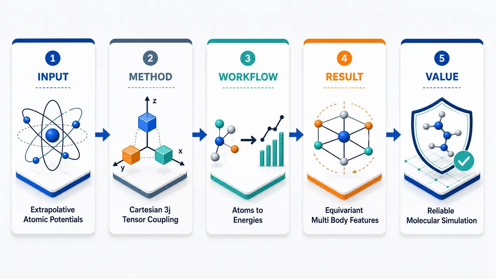
研究问题机器学习原子间势在计算化学中需要同时满足旋转/平移/置换对称性，并具备可靠外推能力；传统基于球张量的等变相互作用构造复杂，限制了模型表达、实现与高效应用。创新方法提出“笛卡尔-3j”等变框架：用直观的笛卡尔张量取代球张量，通过类似 3j 耦合的张量相互作用构造原子环境特征，在保持物理等变性的同时简化几何信息融合，形成适合机器学习原子间势的可扩展表示。工作流程输入原子结构与邻域几何信息；将相对位置、距离和原子类型编码为笛卡尔张量特征；通过 Cartesian-3j 张量耦合逐层组合多体相互作用；生成满足等变/不变约束的原子表示；预测原子能量、总能量及力等原子间势目标。关键结果框架以笛卡尔张量实现等变建模，保留旋转对称性和多体相互作用表达能力，并面向计算化学外推任务提供更清晰、更直接的势能面学习结构，有望提升模型在未见构型上的稳定性与泛化表现。应用价值可用于分子动力学、材料模拟、化学反应路径搜索和势能面构建，为高精度、物理一致且更易实现的机器学习原子间势提供新的基础框架。第一部分：核心概览 (Overview)
该研究建立了面向 MLIP 的 irreducible Cartesian tensor (ICT) 等变学习框架，引入 Cartesian-3j symbol 与 Cartesian Generalized Clebsch-Gordan Coefficients，填补了笛卡尔空间中不可约张量耦合工具的缺口。通过扩展 e3nn/cartnn，实现 NequIP、Allegro、MACE 的笛卡尔对应版本，并完成固定架构下 ST vs. ICT 的受控比较。结果显示 ICT 精度可接近球张量模型，但直接笛卡尔化存在显著计算与显存劣势；进一步提出 TACE-v1-OAM-M，在 Matbench Discovery 上达到有竞争力的 uMLIP 表现。
---
第二部分：结构化快速回顾
《A Cartesian-3j Framework for Machine Learning Interatomic Potentials》（None，）
背景
现代 MLIPs 广泛用于能量、力、应力及多类张量响应性质预测；主流等变模型多基于 spherical tensors (STs) 与 Wigner-3j / Clebsch-Gordan 耦合。笛卡尔坐标与物理张量天然处于笛卡尔空间，但 irreducible Cartesian tensors (ICTs) 的任意阶耦合理论和工程实现长期不足。
方法
构造 Cartesian-3j symbol，作为 Wigner-3j 在笛卡尔基下的直接类似物；进一步构造 Cartesian Generalized CG Coefficients，支持类似 MACE 的预计算高阶 product basis。扩展 e3nn 以支持 ICTP，并提供 ICTC 的原则性实现。
结果
在 3BPA 数据集上，cNequIP、cAllegro、cMACE 与对应球张量模型精度总体接近。例如 MACE/cMACE 在 64-2-2-2-2 设置下 300K 能量 RMSE 均为 4.0 meV，力 RMSE 均为 12.2 meV/Å。但笛卡尔版本在高阶张量或高相关阶下显存急剧增加，例如 cMACE 64-3-3-2-3 显存达到 15890 MiB。
讨论
笛卡尔模型的优势不来自直接复制球张量架构，而来自专门设计：避免 edge-level Cartesian-3j、利用 RCTP/RCTC、保留 highest-weight components、在 node level 再进行不可约投影。
局限
直接笛卡尔化存在 compute and memory scaling 问题；缺乏类似 oeq/cueq 的 Cartesian operator-fusion 库；高阶设置如 Lmax = 4, ℓmax = 4 在当前实现下会带来难以承受的显存开销。
结论
ICT 可以达到与 ST 相近的表达能力与精度，但高效笛卡尔 MLIP 必须采用专门架构。TACE-v1-OAM-M 以 18.8M 参数在 Matbench Discovery 达到 F1 = 0.889、κ SRME = 0.173，显示笛卡尔等变模型具备成为通用原子势能模型主流路线的潜力。
---
第三部分：逐章节冷凝解析 (Section-by-Section Condensing)
Abstract
Cartesian equivariant MLIPs gain a missing irreducible coupling framework
MLIP 的主流等变模型通常建立在 spherical tensors (STs) 上，而笛卡尔张量形式虽然与原子坐标和张量物性天然一致，却缺少成熟的不可约耦合框架。核心问题被明确为：*"most equivariant models are typically built with spherical tensors (STs), while Cartesian tensor formulations remain less developed despite their natural alignment with atomic coordinates and tensorial targets."*
Cartesian-3j and Cartesian generalized CG coefficients provide direct ST analogues
提出 Cartesian-3j symbol 与 Cartesian Generalized Clebsch-Gordan Coefficients，作为笛卡尔空间中对 Wigner-3j 与 Generalized Clebsch-Gordan coefficients 的直接对应工具。关键表述为：*"we develop a Cartesian framework for irreducible Cartesian tensors (ICTs) by introducing the Cartesian-3j symbol and Cartesian Generalized Clebsch-Gordan Coefficients, which serve as direct analogues of the Wigner-3j symbol and Generalized Clebsch-Gordan coefficients defined for ST coupling."*
Controlled ST-vs-ICT comparison becomes possible
通过扩展 e3nn 支持 ICT product，构造 MACE、NequIP、Allegro 的笛卡尔版本，使架构固定、仅改变张量基的受控比较成为可能。关键证据为：*"use this framework to build Cartesian counterparts of MACE, NequIP, and Allegro, allowing the first controlled comparison where architectures are held fixed and only the tensor basis is changed."*
ICT accuracy is comparable but naïve Cartesianization is inefficient
实验结论呈现双重性：ICT 模型精度可接近 ST 模型，但直接笛卡尔化带来不利的算力与显存缩放。原文为：*"irreducible Cartesian models can achieve accuracy comparable to spherical counterparts, but direct Cartesianization incurs unfavorable compute and memory scaling."*
TACE-v1-OAM-M demonstrates competitive universal-potential performance
基于 ICT 框架引入 TACE-v1-OAM-M，并在 Matbench Discovery 与 SOTA ST 模型比较。核心声明为：*"we introduce TACE-v1-OAM-M and demonstrate that it achieves competitive performance on Matbench Discovery compared to state-of-the-art ST models."*
---
1 Introduction
MLIPs now target far more than energies and forces
MLIPs 已成为加速化学与材料原子模拟的核心工具，预测对象从传统 energies, forces, stresses, virials 扩展到多种响应张量，包括 dipole moments、polarization、polarizability、Born effective charges、nuclear shielding tensors、elastic tensors、dielectric tensors、piezoelectric tensors。原文概括为：*"Modern MLIPs are no longer limited to predicting energies, forces, stresses, and virials."* 以及 *"they are used to model a broad spectrum of physical quantities, including dipole moments, polarization, polarizability, Born effective charges, nuclear shielding tensors, elastic tensors, dielectric tensors, piezoelectric tensors and related response properties."*
Spherical tensor equivariant models dominate because of O(3) irreps
主流等变 MLIPs 直接操作 O(3) 群的不可约表示，即 STs。代表模型 NequIP、Allegro、MACE 通过物理归纳偏置显著提升泛化与数据效率。证据为：*"Most equivariant MLIPs directly operate on irreducible representations of the O(3) group, i.e., they construct models using STs."* 以及 *"introduced physically informed inductive biases that markedly improved generalization and data efficiency."*
Two practical issues motivate Cartesian alternatives
替代架构的动力来自两点：第一，标准 CGTP/STP 计算负担较重；第二，输入坐标与许多物理性质天然是笛卡尔形式。原文直接指出：*"the computational burden associated with standard Clebsch-Gordan Tensor Products/Spherical Tensor Products (CGTP/STP) highlights the need for more effective strategies"*，以及 *"atomistic inputs (Cartesian coordinates) and physical properties (Cartesian tensors) are naturally represented in Cartesian space."*
Reducible Cartesian tensor products lose irreducible-specific learnability
已有 RCTP/RCTC 更直观，但由于 CT 的不可约成分相互缠绕，无法为不同不可约成分分别嵌入可学习权重，导致精度损失。关键表述为：*"because the irreducible components of Cartesian tensors (CTs) are inherently intertwined, reducible Cartesian tensor products (RCTPs) and contractions (RCTCs) ... cannot separately embed learnable weights for different irreducible components, thereby leading to a loss of accuracy."*
The absence of Cartesian Wigner-3j analogues blocked controlled replacement
笛卡尔空间缺少 Wigner-3j 及高阶推广的直接类似物，导致无法在固定架构下直接替换 ST coupling 并比较。原文为：*"the lack of direct analogues of the Wigner-3j and their higher-order generalizations in Cartesian space prevents a direct replacement for tensor couplings, making controlled comparisons between spherical and Cartesian models difficult when model architectures are fixed."*
Cartesian tensor cost grows exponentially with rank
笛卡尔张量维度随阶数呈 3^ν 增长，相比 ST 的 2ℓ+1 更容易出现高阶计算瓶颈。引言明确指出：*"the computational cost of CTs increases exponentially with tensor rank when compared with STs."*
Four contributions define the work’s scope
贡献包括：建立理论基础；扩展 e3nn 支持 ICTP/ICTC；构造 Cartesian NequIP/Allegro/MACE 并进行受控比较；提出笛卡尔 uMLIP 实践范式并在 Matbench Discovery 评测。原文列明：*"We establish the theoretical foundations of Cartesian equivariant models by introducing Cartesian-3j symbol and Cartesian Generalized Clebsch-Gordan Coefficients"*；*"extend the e3nn package ... to support irreducible Cartesian tensor product (ICTP)"*；*"enabling the first controlled comparison in which the network architecture and hyperparameters are fixed and only the tensor basis (ST vs. ICT) is varied"*；*"train a series of universal machine learning interatomic potentials (uMLIPs), which are benchmarked on Matbench Discovery."*
---
2 Related Work
Reducible Cartesian methods improve speed but remain limited versus spherical models
HotPP 支持任意 rank 的 RCTP/RCTC，低 rank 下速度超过 NequIP；CACE 扩展 REANN invariant framework；CAMP 利用 RCTP/RCTC 对称性限制 admissible paths 并确保 complete symmetry。证据为：*"HotPP ... introduced arbitrary rank RCTP and RCTC, which enabled the model to surpass the speed of spherical architectures such as NequIP under low rank settings."*；*"CACE ... provided a systematic approach for representing higher body interactions in Cartesian space."*；*"CAMP ... restrict the admissible paths and ensured complete symmetry."*
Existing reducible Cartesian models have not surpassed spherical counterparts
即使在低 rank 区间，现有 Cartesian 模型也未真正超过 ST 模型。原文判断为：*"even within the regime of low rank representations, the Cartesian models developed thus far have not truly surpassed their spherical counterparts."*
TensorNet is efficient but limited to rank ≤ 2 ICTs
TensorNet 直接使用 rank 2 及以下 ICT，理论处理简单且速度、显存优势明显，但表达阶数有限。原文为：*"TensorNet ... employs ICTs of at most rank 2."* 以及 *"this choice also offers clear advantages in both computational speed and memory usage."*
Only three prior models handle arbitrary-rank irreducible Cartesian components
可操作任意 rank ICT 的模型被限定为 TACE、ICT potential、CarNet。关键引述为：*"only three models are currently capable of manipulating irreducible Cartesian components at arbitrary rank. These models are TACE, ICT potential, and CarNet."*
Decomposition-based ICT formulation is positioned as more flexible
TACE 基于 irreducible Cartesian tensor decomposition theory；ICT potential 与 CarNet 基于 irreducible Cartesian tensor product framework。分解路线优势在于可灵活操纵 CT，并在 Cartesian 与 spherical bases 间自由转换。证据为：*"the decomposition-based formulation is more elegant because it allows a Cartesian tensor to be manipulated and decomposed in a flexible manner and provides the ability to convert freely between Cartesian and spherical bases."*
Analytic tensor-product formulations face implementation limits at lower weight
基于特定 tensor product analytic expressions 的路线有效但 lower weight 受限，且常需要为每类乘积写单独解析式。原文为：*"it still exhibits limitations in lower weight and often requires separate analytic expressions for each specific tensor product in practice."* 具体例子为：*"ICT potential implements irreducible Cartesian operations only up to rank-3, whereas TACE is capable of handling arbitrary rank."*
ICT operations can be computationally advantageous up to rank 4
已有 ICT potential 结果显示 Cartesian tensor operations 在 rank ≤ 4 可能具有计算优势。原文证据为：*"Cartesian tensor operations can offer a computational advantage for tensor ranks up to 4."*
uMLIP comparison emphasizes formation-energy F1 and thermal-conductivity κ
Matbench Discovery 评测关注 formation energy F1 与依赖势能面高阶导数的 thermal conductivity κ。关键语句为：*"key metrics in Matbench Discovery, including the F1 score related to formation energy and thermal conductivity κ, which depends on higher-order derivatives of the potential energy surface."*
---
3 Background
Cartesian framework requires shared tensor-theory preliminaries
背景部分聚焦 Cartesian tensor、ICTD、Cartesian harmonics 等概念。原文说明为：*"As part of the Cartesian framework, we find it necessary to briefly review some key concepts."*
---
3.1 Cartesian tensor
Generic Cartesian tensors have 3^ν components and are generally reducible
rank 为 ν 的 generic Cartesian tensor 记作 T^ν，具有 3^ν 个分量；generic 表示不施加对称性或无迹约束。原文为：*"A generic Cartesian tensor of rank-ν ... is a multilinear object with 3ν components."* 以及 *"The term ‘generic Cartesian tensor’ refers to one with no imposed symmetry or traceless constraints among its indices."*
Each irreducible component has definite O(3) weight ℓ
通用 CT 在 O(3) 下通常可约，每个不可约成分对应明确 weight ℓ，且该 weight 不是机器学习参数。原文为：*"such tensors are reducible under O(3), and each irreducible component is associated with a definite weight ℓ"*，并特别说明 *"this ‘weight’ is not the ‘learning weight’ in machine learning."*
Generic CT decomposes into same-rank ICTs with different weights and multiplicities
分解公式为
[
prescriptν{}T=sumₑₗₗ,qprescript(ν;ell;q){}T
]
每个 T⁽ν;ℓ;q) 是 rank ν、weight ℓ 的不可约成分，具有 2ℓ+1 自由度，q 表示同一 ν 与 ℓ 下的重数。原文为：*"each ... is an irreducible component with 2ℓ+1 degrees of freedom, of rank ν and weight ℓ, and q denotes the multiplicity."*
---
3.2 Irreducible Cartesian tensor decomposition
Rank-2 Cartesian tensors decompose into ℓ = 2, 1, 0 components
rank-2 CT 的经典不可约分解包含 symmetric traceless、antisymmetric、trace 三类，对应 ℓ=2、ℓ=1、ℓ=0。原文为：*"a generic rank-2 Cartesian tensor can be decomposed into ICTs with weights ℓ=2, ℓ=1, and ℓ=0."*
Earlier ICTD matrices were available only up to rank 5
早期 ICTD matrices 仅支持到 ν=5，构造成本高。原文为：*"ICTs can be obtained using irreducible Cartesian tensor decomposition (ICTD) matrices, which were previously available only for ranks up to ν=5 ... and whose construction has traditionally been computationally expensive."*
Analytical orthogonal ICTD matrices enable arbitrary-rank construction
近期解析正交 ICTD 矩阵支持任意 rank 高效构造。原文为：*"analytical orthogonal ICTD matrices have been derived that enable efficient construction at arbitrary rank."*
ICTD is a basis-change projection between Cartesian tensor product space and spherical direct sums
ICTD 的来源是 Cartesian tensor product space 与 spherical direct-sum spaces 只差一个基变换。原文为：*"the Cartesian tensor product space and the spherical direct-sum spaces differ only by a change of basis."*
ICTD operators sum to identity and satisfy orthogonality and equivariance
ICTD 核心性质包括
[
sumₗ,qT⁽ν;ell;q⁾=I
]
并具有 orthogonality、rank 2ℓ+1、O(3)-equivariance 等性质。原文为：*"The most important feature of ICTD operator is that ∑l,q T = I"*，以及 *"it also exhibits orthogonality, a matrix rank of 2ℓ+1, O(3)-equivariance, and other related properties."*
---
3.3 Cartesian harmonics
Cartesian harmonics are ICTs built from normalized relative vectors
给定从 source atom j 到 target atom i 的单位向量
[
hatmathbf rᵢⱼ=mathbf rᵢⱼ/rᵢⱼ
]
Cartesian harmonics 由 ν 次外积后经 ICTD projection 得到，且乘以
[
frac(2ν-1)!!ν!
]
。原文为：*"Given the normalized vector r̂ij = rij/rij (from source atom j to target atom i), Cartesian harmonics are defined as follows"*。
Cartesian harmonics are symmetric traceless tensors
Cartesian harmonics 是 symmetric traceless tensors，因此属于 ICTs。原文为：*"Cartesian harmonics are symmetric traceless tensors, i.e., irreducible Cartesian tensors."*
Naive outer products contain residual trace components
直接外积通常仍含 trace，需要递归去迹或 ICT decomposition。原文为：*"directly taking outer products may leave residual trace components."* 可实现路径包括 cartnn 的 trace removal、Applequist 公式、ICT decomposition。证据为：*"Cartesian harmonics can be obtained by recursively removing traces ... via an alternative formulation proposed in Applequist ... or through the ICT decomposition approach."*
Normalization ensures proper contraction to the unit vector
常数因子保证 harmonic 在适当 contraction 下回到 r̂ij。原文为：*"The constant factor here ensures that E contracts appropriately to r̂ij."*
---
4 Cartesian framework
The framework supplies Cartesian analogues for irreducible tensor coupling
核心框架围绕 Cartesian-3j、Cartesian Generalized CG Coefficients、ICTP/ICTC 与 gate nonlinearity 展开，使笛卡尔空间能够执行类似 ST 空间的不可约张量耦合。
---
4.1 Cartesian-3j
Path matrices transform between Cartesian and spherical tensors
Path matrix C⁽ν;ℓ;q) 用作 Cartesian 与 spherical tensors 之间的变换矩阵，其转置实现逆变换。原文为：*"Its role is to serve as the transformation matrix between Cartesian tensors and spherical tensors."* 以及 *"its inverse transformation can be constructed through the transpose matrix."*
Rank-equals-weight path matrices are abbreviated as C⁽ℓ)
当 rank = weight 时，路径矩阵记作 C⁽ℓ)；Cartesian index m 遍历 3^ℓ 个笛卡尔张量分量，spherical index M 遍历 2ℓ+1 个球张量分量。证据为：*"for the special case with rank = weight, we abbreviate the path matrix as C(ℓ)"*，以及 *"the Cartesian index m runs over the 3ℓ Cartesian tensor components, while the spherical index M runs over the 2ℓ+1 spherical tensor components."*
ICTD matrix equals CCT
ICTD projection matrix 定义为
[
mathcal T⁽ν;ell;q⁾=C⁽ν;ell;q⁾CT⁽ν;ell;q⁾
]
原文公式对应：*"the ICTD matrix is defined as: T = C C^T."*
Cartesian-3j is Wigner-3j contracted with three path matrices
通过将 Wigner-3j symbols 与输入、输出三组 path matrices 收缩，直接得到 Cartesian-3j symbols：
[
Zell₃ₘ₃ₑₗₗ_₁ₘ_₁,ₑₗₗ_₂ₘ_₂
=
sumM_₁,M_₂,M_₃
C⁽ell₃₎ₘ_₃M_₃
beginpmatrix
L₁&L₂&L₃
M₁&M₂&M₃
endpmatrix
C⁽ell₁₎ₘ_₁M_₁
C⁽ell₂₎ₘ_₂M_₂
]
原文为：*"the computation can be simplified by first contracting the Wigner-3j symbols with the three path matrices, thereby yielding the Cartesian-3j symbols directly."*
L2 normalization stabilizes variance in implementation
实际应用中通常对 Cartesian-3j 使用 L2 norm normalization 以保持方差稳定。原文为：*"In practical applications, we usually apply L2 norm normalization to maintain stable variance."*
---
4.2 Cartesian Generalized Clebsch-Gordan Coefficients
Generalized CG coefficients are central to MACE efficiency
MACE 中的 generalized CG coefficients 通过预计算 product basis，显著减少 identical tensors 的 channel-wise tensor products 计算量，并将 message passing 层数降到 2。原文为：*"the generalized CG coefficients proposed in MACE significantly reduce the computational cost of channel-wise tensor products between identical tensors in spherical space."* 以及 *"reduce the number of message-passing layers to two while greatly lowering both computation time and memory consumption."*
Previous Cartesian ICT models computed product bases from scratch
由于此前笛卡尔空间没有 Wigner-3j 类似物，ICT potential 曾认为某些计算无法在 Cartesian space 预计算；ICT potential 与 TACE 因而在 forward pass 中从头计算 product basis。原文为：*"no analogue of the Wigner-3j symbols previously existed in Cartesian space."*；*"certain computations can’t be precomputed in Cartesian space."*；*"the product basis is computed from scratch during the forward pass."*
Cartesian generalized CG coefficients become direct products of Cartesian-3j symbols
将 Wigner-3j 替换为 Cartesian-3j 后，笛卡尔空间可直接构造 generalized CG：
[
mathcal ZLMₗ_₁ₘ_₁,łdₒₜₛ,ₗ_ₙₘ_ₙ
=
ZL₂M₂ₗ_₁ₘ_₁,ₗ_₂ₘ_₂
ZL₃M₃L_₂M_₂,ₗ_₃ₘ_₃
ḑots
ZL_NM_N_LN₋₁MN₋₁,l_Nm_N
]
原文为：*"if the Wigner-3j symbols are replaced by their Cartesian counterparts, the Cartesian Generalized CG Coefficients can be obtained directly in Cartesian space with ease."*
Coupling paths obey triangular inequalities
中间权重满足
[
|l₁₋ₗ₂|łe L₂łe l₁₊ₗ₂,quad
|Lᵢ₋₁-lᵢ|łe Lᵢłe Lᵢ₋₁+lᵢ
]
这对应逐步不可约耦合的 angular-momentum-like selection rules。原文公式列明：*"|l1−l2|≤L2≤l1+l2 ∀ i≥3 |Li−1−li|≤Li≤Li−1+li."*
---
4.3 Tensor Product and Contraction
RCTP is the no-contraction Cartesian outer product
两个 rank 为 ℓ1、ℓ2 的 Cartesian tensors 做 RCTP 时不收缩任何指标，输出 rank 为 ℓ1+ℓ2。原文为：*"The RCTP corresponds to the case where no indices are contracted between two tensors."*
RCTC contracts k index pairs with normalization 1/sqrt(3^k)
RCTC 对 k 对指标求和，输出 rank 为 ℓ1+ℓ2−2k，归一化因子为
[
1/sqrt3^k
]
。原文为：*"RCTC allows contraction over k pairs of indices"*，以及 *"The prefactor 1/√3^k is a normalization constant ensuring consistent scaling."*
k = 0 reduces to RCTP and k > 0 gives contraction
k=0 是普通 tensor product，k>0 是 contraction。原文为：*"The case k=0 reduces to the RCTP, while k>0 corresponds to the RCTC operation."*
RCTC can be interpreted as reshaped matrix multiplication
为实现和理解方便，RCTC 可视为重排张量形状后的矩阵乘法。原文为：*"We recommend interpreting RCTC as matrix multiplication in a suitably reshaped tensor shape."*
ICTP follows spherical-space computational steps when using Cartesian-3j
采用 Cartesian-3j 后，ICTP 与球空间张量积具有相同计算步骤，且可与 e3nn 使用方式一致。原文为：*"When Cartesian-3j symbols are employed, the ICTP operation follows exactly the same computational steps as in spherical space, and its usage is fully consistent with that of e3nn."*
ICTC is theoretically straightforward but not exposed as a full e3nn interface
完整 ICTC 接口需要大量改动 e3nn，因此未提供同接口实现；若不要求接口一致，理论和代码实现较直接。原文为：*"For ICTC, a full implementation would require substantial modifications to e3nn, and therefore we do not provide this interface."* 以及 *"both the theoretical formulation and the corresponding code implementation are straightforward."*
No general formula is available for decomposing contracted irreducible tensors
对于 tensor contraction 后的不可约成分分解，没有找到通用解析公式，但这对 Cartesian models 至关重要。原文为：*"no general formula has been found by us for decomposing the irreducible components resulting from tensor contraction."* 以及 *"this decomposition is crucial for Cartesian models, where tensor contraction is indispensable."*
Contraction improves efficiency and accuracy under exponential Cartesian cost
由于 CT 成本随 rank 指数增长，tensor contraction 对效率与精度均有帮助。原文为：*"Owing to the exponentially increasing cost associated with Cartesian tensors, employing tensor contractions can provide notable gains in both efficiency and accuracy."*
Numerical decomposition study restricts input ranks to at most 4
由于 Cartesian tensors 通常只在 rank ≤ 4 具有计算优势，数值实验限制 ℓ1, ℓ2 ≤ 4，但不限制输出 rank。原文为：*"Cartesian tensors are generally considered to offer computational advantages only up to rank ≤ 4, we restrict the input ranks ℓ1 and ℓ2 to be at most 4."* 以及 *"we do not impose any limitation on the rank of the output tensor."*
Empirical ICTC structure has three key rules
数值观察包括：固定 ℓ1, ℓ2, k 时相同 ℓ3 的张量线性相关；固定 ℓ1, ℓ2 而改变 k 时相同 ℓ3 的张量线性独立；输出范围满足
[
|ell₁₋ell₂|łe ell₃łe ell₁₊ell₂₋₂ₖ
]
。原文为：*"For fixed ℓ1, ℓ2, and k, tensors associated with the same ℓ3 are linearly dependent."*；*"For fixed ℓ1 and ℓ2 and varying k, tensors associated with the same ℓ3 are linearly independent."*；*"the range of irreducible components obtained from tensor contraction satisfies: |ℓ1−ℓ2|≤ℓ3≤ℓ1+ℓ2−2k."*
---
4.4 Gate
Tensor nonlinearities can be added by scaling or invertible transformations
对张量引入非线性主要有两类方法：整体缩放 tensor，或施加可逆非线性变换。原文为：*"To add nonlinearity to a tensor, there are essentially two distinct approaches. The first is to scale the entire tensor, and the second is to apply an invertible transformation that imposes nonlinearity."*
Nonlinearity is crucial for large-scale datasets
在 OMat24、sAlex、MPtrj 大规模数据集训练中，nonlinearity 对拟合至关重要。原文为：*"we find that nonlinearity is crucial for fitting large-scale datasets (OMat24, sAlex, and MPtrj)."*
Norm-based activation from HotPP supplies efficient tensor nonlinearity
采用 HotPP 的 norm-based activation，以较高效率引入非线性。原文为：*"we adopt the norm-based activation introduced in HotPP, which enables the incorporation of nonlinearity in an efficient manner."*
Scalar SiLU and tensor SiLU differ structurally
标量情形：
[
SiLU(x)=Sigmoid(x)ḑot x
]
张量情形：
[
SiLU(mathbf X)=
Sigmoidłeft(wsumᵢ₌₁³^ellXᵢ²⁺bi̊ght)ḑot mathbf X
]
其中 w,b 为可学习参数。原文为：*"where w and b are learnable parameters, i indexes the tensor elements, and ℓ denotes both the rank and the weight."*
---
5 Experiments
Experiments test both controlled conversion and universal-potential viability
实验分为三类：固定架构下将 ST 模型转换为 Cartesian 版本；总结 Cartesian best practices；训练并评测 uMLIPs。
---
5.1 Conversion of spherical models into Cartesian ones
3BPA is selected for extrapolation-sensitive benchmarking
3BPA dataset 被用作主要 benchmark，因为它对 extrapolation performance 要求强。原文为：*"The 3BPA dataset is used as our primary benchmark, as it imposes strong requirements on extrapolation performance."*
NequIP, MACE, and Allegro cover three representative architectural classes
选择 NequIP 代表 multi-layer message passing，MACE 代表 ACE-based，Allegro 代表 strictly local edge-features-based。原文为：*"We select three categories of models: the multi-layer message-passing model NequIP, the ACE-based MACE, and the strictly local, edge-features-based Allegro."*
Hyperparameters are intentionally not tuned for peak accuracy
实验目标是固定架构与超参数比较 ST 与 ICT，而非优化模型绝对精度。原文为：*"We did not tune hyperparameters to optimize accuracy, as our goal is solely to compare models with identical architectures and hyperparameters under identical training conditions."*
cNequIP/cAllegro show near-identical accuracy but worse memory and speed
Table 1 显示多种设置下 ST 与 Cartesian 精度接近。例如 64(64)-2-2-5 NequIP/cNequIP：300K 能量 RMSE 5.4/5.8 meV，力 RMSE 16.5/16.3 meV/Å；600K 能量 17.3/17.9 meV，力 37.0/36.4 meV/Å；1200K 能量 43.6/42.2 meV，力 89.1/89.0 meV/Å。原文结论为：*"the accuracy remains nearly identical across almost all model sizes."*
Cartesian NequIP at higher Lmax/ℓmax incurs severe overhead
64(64)-3-3-5 NequIP/cNequIP 的速度为 15.8/46.4 s/epoch，显存为 3968/12486 MiB，显示 Cartesian 高 rank 成本显著。原文概括为：*"the Cartesian model can not outperform the spherical model in terms of either computational speed or memory efficiency."*
Cartesian Allegro becomes impractical due to edge-feature memory footprint
256(64)-3-3-3 Allegro/cAllegro 在 Cartesian 版本中出现 OOM；Table 1 中 300K、600K、1200K、dihedral 以及速度、显存均为 OOM。原文为：*"for the edge-features-based Allegro model, which already has a large memory footprint, combining it with the Cartesian formulation further increases memory usage to the point that the model becomes impractical for real applications."*
cMACE confirms accuracy parity and exposes coefficient-size explosion
Table 2 中 64-2-2-2-2 MACE/cMACE：300K 能量 RMSE 4.0/4.0 meV，力 12.2/12.2 meV/Å；600K 能量 11.4/11.7 meV，力 28.5/27.8 meV/Å；1200K 能量 33.5/33.7 meV，力 79.0/76.0 meV/Å。结论为：*"we observe the same conclusion like the above models."*
Cartesian generalized CG precomputation becomes prohibitive at correlation ≥ 3 and ℓmax ≥ 3
64-3-3-2-3 MACE/cMACE 中 Cartesian 版本速度 27.6 s/epoch、显存 15890 MiB，相比 ST 版本速度 6.7 s/epoch、显存 1610 MiB。原文解释为：*"The precomputed coefficients become extremely large, growing exponentially with both the correlation order and the tensor rank itself."* 以及 *"the memory footprint increases dramatically once the correlation order ≥3 and ℓmax≥3."*
Random-seed uncertainty was not quantified
Table 1 和 Table 2 注释均说明未进行多随机种子测试，目标是验证理论正确性。原文为：*"We did not test multiple random seeds as the purpose was merely to verify the correctness of our theory."*
---
5.2 Best Practices for Cartesian Models
Spherical architectures cannot simply be reused for Cartesian models
直接采用与球张量模型相似或相同的架构不能带来提升。原文为：*"if one adopts architectures similar or identical to those used in spherical models, no improvement can be obtained."*
Schur’s lemma restricts linear mixing to same-weight irreducible representations
线性层只能组合相同 weight 的 irreducible representations。原文为：*"Schur’s lemma states that only irreducible representations with the same weight can be linearly combined."*
Same-weight Cartesian tensors of different ranks still cannot be directly linearly mixed
由于 shape 不一致，即便 weight 相同、rank 不同的 Cartesian tensors 也不能直接线性组合，必须先转换到 matching weight and rank。原文为：*"Cartesian tensors that share the same weight but have different ranks can not be directly combined through linear transformations."* 以及 *"they must first be converted into representations with matching weight and rank."*
Cartesian models can avoid edge-level Cartesian-3j symbols
笛卡尔表示天然支持 contraction，关键优势是能在 edge level 避免 Cartesian-3j，而球张量方法不能这样做。原文为：*"Cartesian representations naturally support contraction operations."* 以及 *"A key advantage of Cartesian models is that they can avoid the use of Cartesian-3j symbols at the edge level, which is not possible in spherical methods."*
Edge interactions can rely only on RCTP/RCTC and two arrays
张量 product/contraction 涉及三类数组：node features lifted to edges、edge-level harmonics、Wigner-3j/Cartesian-3j。Cartesian 设计可在 edge level 仅依赖 RCTP/RCTC，因而 edge-level tensor products 只需两个数组。原文为：*"When interacting with neighboring atoms, Cartesian models can avoid edge-level Cartesian-3j, relying only on RCTP or RCTC."* 以及 *"Edge-level tensor products then require only two arrays in Cartesian space."*
Cartesian-3j acts more like projection coefficients
在 Cartesian 空间中，Cartesian-3j 更像投影系数，而非像 spherical space 中那样严格必要。原文为：*"Cartesian-3j symbols act more like projection coefficients, rather than being strictly necessary for obtaining the separated tensorial form in spherical space."*
Highest-weight retention reduces lower-weight parameters
只保留 highest-weight components 可以避免为 lower-weight components 引入可学习参数。原文为：*"Retaining only the highest-weight components eliminates the need for learnable parameters for lower-weight components."*
Node-level projection recovers irreducible structure
edge 聚合到 node features 后，在 node level 使用 linear layer 与 Cartesian-3j symbols；对于 highest-weight components，这些符号退化为 ICTD matrices。原文为：*"At the node level, a linear layer together with Cartesian-3j symbols (which reduce to the ICTD matrices for the highest-weight components) is applied."*
ICTC preserves lower-weight information
通过 ICTC，lower-weight components 不会被完全丢弃。原文为：*"ICTC also ensures that lower-weight components are not completely discarded."*
Dedicated Cartesian design can match spherical parameter counts
该设计允许 Cartesian models 与 spherical counterparts 具有完全相同参数数量。原文为：*"this design enables Cartesian models to have exactly the same number of parameters as their spherical counterparts."*
---
5.3 Universal Machine Learning Interatomic Potentials
Cartesian basis representations are rare in Matbench Discovery uMLIPs
在 Matbench Discovery 上常见高竞争力 uMLIPs 中，Cartesian basis 很少被采用，原因在于笛卡尔不可约模型设计理论此前尚不完整。原文为：*"Among a range of competitive and widely used uMLIPs evaluated on Matbench Discovery, Cartesian basis representations are rarely adopted."* 以及 *"the irreducible model design theory for Cartesian bases has not been fully articulated before."*
Most representative uMLIPs are deeper than two layers
除 GRACE 使用 two-layer architecture 外，多数 uMLIPs 至少 6 层，有些 convolutional modules 超过 10 层。原文为：*"with the exception of GRACE, which employs a two-layer architecture, most representative uMLIPs adopt substantially deeper architectures, typically using at least six layers, with some incorporating convolutional modules spanning more than ten layers."*
Initial linear TACE underperforms GRACE on thermal conductivity
初始 2-layer 设置为 19M parameters, Lmax=2, ℓmax=3, ℓ1≤ℓ2, no gated interactions；TACE-OMAT24-Linear 的 κ SRME = 0.210，优于 MACE-OMAT-0-M 与 MACE-MH-1，但低于 GRACE。原文为：*"a 19M-parameter model with Lmax=2, ℓmax=3 ... without gated interactions during convolution."* 以及 *"κ SRME for TACE-OMAT24-Linear is only 0.210."*
Nonlinear convolution modules improve accuracy and convergence on large datasets
加入 nonlinear modules 后，模型 accuracy 与 convergence speed 显著改善。原文为：*"We observed that both the model’s accuracy and convergence speed significantly improved."*
Nonlinearity improves large-dataset performance but may reduce extrapolation on 3BPA
大数据集上 nonlinearity 影响显著，但不保证更强 extrapolation；在 3BPA 上 nonlinear interactions 导致 extrapolation ability 下降。原文为：*"nonlinearity has a substantial impact on the model’s performance for large datasets, although these metrics do not necessarily guarantee superior extrapolation ability."* 以及 *"the use of nonlinear interactions, such as on 3BPA, leads to a decrease in extrapolation ability."*
Final TACE-v1 architecture uses 5 layers, correlation 2, and gate interactions
最终架构为 Lmax=2、ℓmax=3、ℓ1≤ℓ2、5 layers、correlation 2、gate interactions。原文为：*"The architecture we ultimately chose has Lmax=2, ℓmax=3, with the restriction ℓ1≤ℓ2, 5 layers, correlation 2, and includes gate interactions."*
TACE-v1-OAM-M is competitive but not SOTA
Table 3 中 TACE-v1-OAM-M 参数 18.8M，F1 = 0.889，κ SRME = 0.173。对比：eSEN-30M-OAM 为 F1 = 0.925, κ = 0.170, 30.2M；EquFlash 为 0.919, 0.158, 28.7M；NequIP-OAM-XL 为 0.906, 0.125, 32.1M；GRACE-2L-OAM-L 为 0.883, 0.169, 26.4M。原文定位为：*"these models demonstrate competitive performance across the evaluated benchmarks."* 以及 *"we did not expect this family of models to achieve SOTA performance."*
TACE-v1-OMAT24-M achieves strong κ despite no F1 report
Table 3 中 TACE-v1-OMAT24-M 参数 18.8M，κ SRME = 0.158；TACE-v1-OMAT24-Linear 为 0.210；GRACE-2L-OMAT-L-base 为 0.165；MACE-OMAT-M 为 0.245。该结果支持 gate/nonlinearity 的必要性。
Lmax = 4 and ℓmax = 4 are currently infeasible without operator fusion
当前笛卡尔实现缺乏 operator-fusion library，因此无法使用 Lmax=4、ℓmax=4，否则显存开销显著。原文为：*"without an operator-fusion library, we can not use Lmax=4 and ℓmax=4, as this would lead to a significant memory overhead."*
Cartesian basis can be faster under a dedicated architecture
在最终架构下，相比 spherical basis，Cartesian-basis variant 可更快，因为其避免 edge-level Cartesian-3j，而 spherical formulation 必须使用对应耦合。原文为：*"under our architecture, when adopting a spherical basis, the Cartesian-basis variant can be faster."* 以及 *"our design avoids the use of Cartesian-3j symbols at the edge level, whereas the spherical formulation necessarily requires them."*
Molecular dynamics speed shows a practical accuracy-efficiency compromise
Table 4 使用单张 NVIDIA A800 80GB PCIe GPU 与 ASE。纯 Torch FP64 下：192 atoms 时 TACE 508 ps/day、NequIP-AOTI 543、MatRIS 43、MACE-torch 1385；768 atoms 时 TACE 174、NequIP 142、MatRIS 42、MACE 370；1536 atoms 时 TACE 85、NequIP OOM、MatRIS OOM、MACE 226。原文说明为：*"the molecular dynamics simulation speed, measured in ps/day"*，以及 *"The comparison is performed using a single NVIDIA A800 80GB PCIe GPU."*
Operator-fusion libraries dramatically change speed-memory comparisons
NequIP-AOTI-oeq 与 MACE-cueq 明显加速。例如 FP64 1536 atoms：NequIP-AOTI-oeq 248 ps/day，MACE-cueq 735 ps/day；2304 atoms：NequIP-AOTI-oeq 146，MACE-cueq 324。原文为：*"operator fusion libraries, such as oeq, substantially reduces memory consumption and leads to significant speedups."* 以及 *"for MACE, the introduction of cueq also results in a marked improvement in computational efficiency."*
Cartesian operator fusion remains unavailable
Cartesian space 仍缺少类似 oeq/cueq 的实现。原文为：*"At present, however, comparable implementations are still lacking for the Cartesian space."*
---
6 Discussion, Limitations, and Outlook
The framework addresses arbitrary irreducible components in Cartesian space
笛卡尔等变学习框架解决了以往方法无法充分处理 arbitrary irreducible components 的问题。原文为：*"This work develops a systematic framework for equivariant learning in Cartesian space within the context of atomistic modeling."* 以及 *"we have addressed the challenge of handling arbitrary irreducible components, an area where previous approaches fell short."*
Cartesian-3j and Cartesian generalized CG coefficients form the foundation for ICTP and ICTC
Cartesian-3j 与 Cartesian Generalized Clebsch-Gordan Coefficients 构成 ICTP 与 ICTC 的基础。原文为：*"We introduced Cartesian-3j and Cartesian Generalized Clebsch-Gordan Coefficients, which serve as the foundation for defining the irreducible Cartesian tensor product and the irreducible Cartesian tensor contraction."*
Cartesian tensor operations become precise rather than reducible approximations
这些工具使复杂 tensor operations 能在 Cartesian space 中精确处理，不再依赖 reducible tensor product 的混合不可约成分。原文为：*"These innovations enable the precise treatment of complex tensor operations in Cartesian space."*
Precomputed Cartesian product bases and Cartesian-spherical transformations are supplied
框架还提出 Cartesian product bases 预计算，并提供 Cartesian 与 spherical bases 的转换接口。原文为：*"We also propose the precomputation of Cartesian product bases and provide interfaces for transformations between Cartesian and spherical bases."*
Discussion section is truncated in the supplied manuscript text
给定文本在 *"to run contr"* 处中断，后续关于 discussion、limitations、outlook 的完整内容、可能的附录证据与 Table 7 细节未包含在输入材料中，因此无法可靠提取更多原文细节。
---
第四部分：深度理解与语言支持 (Understanding & Nuance)
1. Irreducible Cartesian tensor (ICT)
ICT 指在 O(3) 旋转/反演群作用下不可再分解的笛卡尔张量成分。它不是普通 Cartesian tensor；普通 CT 往往包含多个 weight ℓ 的混合成分。语境中，ICT 的核心价值是允许模型像 ST 一样对不同不可约表示分别施加可学习权重。英文中的 irreducible 不是“复杂”的意思，而是群表示意义上的“不可约”。
2. Weight ℓ
Weight ℓ 对应角动量阶数或 O(3) irreducible representation 的标签，决定该不可约成分有 2ℓ+1 个自由度。语境中特别强调它不是 neural network 的 learned weight。容易误读点在于英文 weight 在机器学习中常指参数，但在表示论中是 representation label。
3. Cartesian-3j symbol
Cartesian-3j symbol 是把 Wigner-3j 通过 path matrices 转到 Cartesian basis 后得到的三张量耦合系数。它不是全新的物理对称性，而是同一 O(3) coupling rule 在不同 basis 下的表达。其学术作用是让 ST 模型中的 tensor product 机制可被等价搬到 ICT 空间。
4. Reducible vs. irreducible tensor product
Reducible tensor product (RCTP/RCTC) 直接做外积或指标收缩，直观、高效，但输出中不同 irreducible components 混在一起。Irreducible tensor product (ICTP) 则通过 coupling/projection 将输出分解到确定 weight 的不可约成分。前者像“先把所有信息混合打包”，后者像“按对称性通道分门别类”。
5. Controlled comparison
Controlled comparison 在这里指固定 architecture、hyperparameters、training conditions，只改变 tensor basis：ST vs. ICT。这比单纯比较不同模型更严格，因为排除了架构、参数量、训练策略等混杂因素。该研究的经验结论“ICT 精度接近 ST，但直接笛卡尔化更贵”正是来自这种受控设计。
---
疑难查证：复杂概念解释
Cartesian-3j 为什么重要？
ST 模型中的等变性依赖 Clebsch-Gordan/Wigner-3j：两个输入 irreps 如何耦合成一个输出 irrep，必须满足三角不等式和磁量子数选择规则。没有这些系数，模型无法系统地做“不可约张量乘法”。
笛卡尔张量虽然更贴近坐标，但普通外积会产生 reducible tensor。例如两个向量外积得到 rank-2 tensor，其中同时含有 scalar trace、antisymmetric vector-like part、symmetric traceless tensor。若不分解，模型无法对这些不同物理通道分别赋权。
Cartesian-3j 的作用是：保留 Wigner-3j 的表示论选择规则，同时把基从 spherical 改成 Cartesian。数学上，它等于 Wigner-3j 与三个 path matrices 的收缩。所以它不是经验技巧，而是严格的 basis transformation。
为什么直接笛卡尔化会爆显存？
ST rank/weight 为 ℓ 的不可约张量只有 2ℓ+1 个分量；Cartesian rank ℓ 的 full tensor 有 3^ℓ 个分量。
例如：
- ℓ = 1：ST 3 个分量，Cartesian 3 个分量；
- ℓ = 2：ST 5 个不可约分量，Cartesian full tensor 9 个分量；
- ℓ = 3：ST 7 个分量，Cartesian full tensor 27 个分量；
- ℓ = 4：ST 9 个分量，Cartesian full tensor 81 个分量。
当再叠加 correlation order、channels、edges、precomputed product basis，内存会呈组合式增长。Table 2 中 cMACE 在 64-3-3-2-3 设置下显存 15890 MiB，而对应 MACE 为 1610 MiB，正是这种爆炸的实验体现。
为什么 edge-level 避免 Cartesian-3j 是关键设计？
在 message passing 中，edge 数量通常远大于 node 数量。如果每条 edge 上都执行高阶不可约 projection，显存和计算都会被放大。笛卡尔空间可先用 RCTP/RCTC 在 edge 上进行较便宜的操作，将信息聚合到 node 后再做不可约 projection。这样相当于把昂贵的 group-theoretic projection 从“大量边”转移到“较少节点”，显著降低负担。
Gate nonlinearity 为什么在大数据集上有效，却可能削弱 3BPA extrapolation？
线性 equivariant interactions 常具有更强的结构约束，可能在小型、外推敏感数据集上减少过拟合或非物理行为。大规模数据集如 OMat24、sAlex、MPtrj 包含更多化学多样性与复杂局域环境，单纯线性 interactions 可能表达不足；norm-based gate 提供额外非线性容量，改善训练收敛与插值精度。但更强表达能力也可能学习到数据分布内的复杂模式，从而降低 3BPA 这类外推测试中的稳健性。
---
第五部分：创新评估与关联 (Synthesis & Novelty)
创新性判断
First, Cartesian irreducible coupling receives a Wigner-3j-level analogue
过去 2–5 年内，ST 等变 MLIPs 已形成成熟工具链，NequIP、MACE、Allegro 等依赖 Wigner-3j / CG tensor products；Cartesian 方法则多停留在 reducible operations 或低 rank ICT。该研究的核心新颖性在于给出 Cartesian-3j symbol，使任意 rank ICT 的 tensor coupling 可以像 ST 一样系统实现。
Second, Cartesian generalized CG coefficients solve the product-basis precomputation gap
MACE 的高效性很大程度来自 generalized CG product basis 预计算。此前 ICT potential 和 TACE 需要 forward pass 中从头计算 product basis，因为 Cartesian space 缺少相应系数。通过 Cartesian-3j 构造 Cartesian Generalized CG Coefficients，笛卡尔空间首次获得类似 MACE 的预计算机制。
Third, controlled ST-vs-ICT comparison becomes methodologically clean
此前 Cartesian 与 spherical 模型比较常混杂架构差异、rank 设置、参数量、实现优化等因素。通过 cNequIP、cAllegro、cMACE，固定 architecture 与 hyperparameters，只替换 tensor basis，首次清晰回答：ICT 不是精度瓶颈，直接笛卡尔化的主要问题是 compute/memory scaling。
Fourth, the work separates “Cartesian basis” from “Cartesian architecture”
一个重要概念创新是：笛卡尔模型不能简单复制 ST 架构。真正有效的 Cartesian 设计应利用 RCTP/RCTC、避免 edge-level Cartesian-3j、node-level projection、highest-weight retention、ICTC 保留 lower-weight 信息。这把“换基”问题推进为“专用架构设计”问题。
Fifth, TACE-v1-OAM-M shows Cartesian uMLIPs can compete on modern discovery benchmarks
在 Matbench Discovery 上，TACE-v1-OAM-M 以 18.8M 参数达到 F1 = 0.889、κ SRME = 0.173，与 GRACE-2L-OAM-L 的 0.883、0.169 接近，并优于多种模型的 κ 指标，如 MatRIS-10M-OAM κ = 0.218、ORB v3 κ = 0.210、Allegro-OAM-L κ = 0.319。虽然不及 NequIP-OAM-XL κ = 0.125 和 EquFlash κ = 0.158，但在缺少 Cartesian operator fusion 的条件下已显示竞争力。
解决的前人问题
- 缺少 Cartesian Wigner-3j analogue：通过 Cartesian-3j 解决。
- Cartesian product basis 不能预计算：通过 Cartesian Generalized CG Coefficients 解决。
- ICT 任意阶工程实现不足：通过扩展 e3nn/cartnn 支持 ICTP，并给出 ICTC 原则性实现。
- ST 与 ICT 缺少公平比较：通过固定架构的 cNequIP/cAllegro/cMACE 解决。
- Cartesian uMLIP 缺乏实践范式：通过 best practices 与 TACE-v1-OAM-M 展示可行路径。
-
04
📊 含图深析
💡 亮点：MDcraft 将机器学习势接入分子动力学模拟。
📖 展开分析 + 配图
研究问题传统分子动力学软件难以无缝接入机器学习势，限制了神经网络势能面在经典动力学模拟中的高效使用。创新方法MDcraft 将现代分子动力学框架与机器学习势支持集成，使经典动力学模拟能够直接调用神经网络势能面进行力和能量计算。工作流程输入原子结构与模拟参数，选择经典势或机器学习势；程序在每个时间步调用势能模型计算能量与原子受力，再推进原子运动轨迹，输出分子动力学轨迹和物理量。关键结果该软件包提供了支持机器学习势的现代化分子动力学模拟能力，扩展了传统经典动力学对复杂势能面的建模范围。应用价值可用于计算物理、材料科学和分子模拟中，以更灵活的方式研究原子尺度动力学，并推动神经网络势在实际模拟工作流中的应用。核心概览
MDcraft 是一个面向分子动力学模拟的现代软件包，重点集成机器学习势支持，属于计算物理/分子模拟软件方向。
方法要点
- 论文介绍了一个名为 MDcraft 的分子动力学模拟软件包。
- 软件支持机器学习势，用于分子动力学中的相互作用势能描述。
- 该工作定位为现代化分子动力学模拟工具开发。
- 摘要未详述其具体算法架构、支持的机器学习势类型、并行策略或数值积分方法。
关键结果
- MDcraft 被明确描述为支持机器学习势的分子动力学模拟软件包。
- 该成果发表于 *Computer Physics Communications*，说明其主要贡献可能是计算物理软件/工具层面的发布。
- 摘要未详述性能基准、精度评估、应用案例或与其他软件的定量比较。
创新性判断
- 可能的新颖点在于将机器学习势支持集成进一个现代分子动力学软件包中，面向更灵活或高精度的模拟需求。
- 相比传统经典力场分子动力学软件，其潜在创新性可能体现在对机器学习势的原生或便捷支持上。
- 但由于摘要信息极少，无法判断其相对 LAMMPS、GROMACS、ASE、i-PI 等已有工具的具体差异、性能优势或独特功能；这些内容摘要未详述。
-
05
📊 含图深析
💡 亮点：工业烘焙案例检验神经网络嵌入机理模型的位置。
📖 展开分析 + 配图
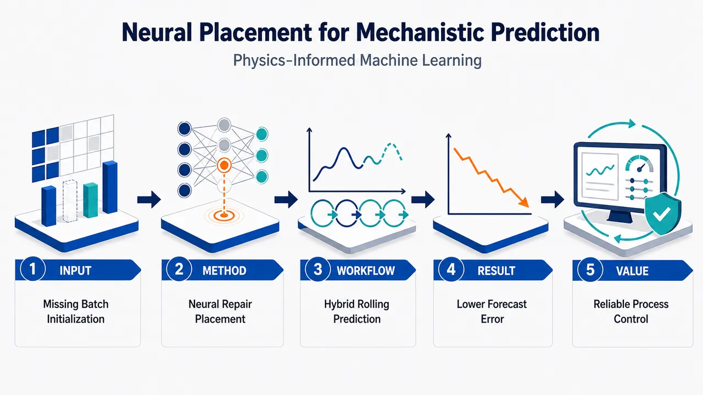
研究问题在工业咖啡烘焙过程中，当机理模型缺失关键的批次初始化数据时，如何放置神经网络才能最有效地修补模型缺陷，降低滚动预测误差。创新方法将神经网络作为“模型修补模块”嵌入物理信息机器学习框架中，系统比较不同神经网络放置位置对机理过程模型预测性能的影响，突出“网络放在哪里比单纯加网络更关键”的思想。工作流程输入工业咖啡烘焙批次数据与不完整的机理过程模型；构建不同神经网络放置方案；用物理约束与数据共同训练混合模型；进行多步滚动预测；对比各方案在缺失初始化信息条件下的预测误差。关键结果实验表明，合理的神经网络放置能够显著修补机理模型因批次初始化数据缺失造成的偏差，提升工业咖啡烘焙过程的滚动预测稳定性与准确性。应用价值为工业过程建模提供可视化的模型修补思路：在保留机理知识可解释性的同时，用神经网络补偿未知或缺失因素，支持更可靠的过程预测、控制与质量优化。核心概览
该论文以工业咖啡烘焙为案例，研究物理知情机器学习中神经网络放置位置对机理过程模型修复的影响。
方法要点
- 以工业咖啡烘焙过程作为应用案例，属于过程建模与物理知情机器学习方向。
- 研究对象是已有机理过程模型在滚动预测中的误差修复问题。
- 核心方法是比较神经网络在物理知情机器学习框架中的不同“放置位置”。
- 关注场景是缺少可靠初始化遥测数据时，机理模型滚动预测性能受影响的问题。
- 具体神经网络结构、训练方式、损失函数、数据规模和对照实验设置，摘要未详述。
关键结果
- 摘要明确表明：论文比较了不同神经网络放置位置对机理过程模型修复的作用。
- 摘要明确表明：研究目标是缓解或修复缺少可靠初始化遥测时产生的滚动预测误差。
- 哪种放置位置效果最好、误差降低幅度、是否优于基线模型等关键结果，摘要未详述。
创新性判断
- 可能的新颖点在于：不是单纯用神经网络替代机理模型，而是在物理知情机器学习中系统考察神经网络应嵌入机理模型的哪个位置。
- 另一个可能创新点是：面向工业咖啡烘焙这一具体过程，处理“初始化遥测不可靠”导致的滚动预测误差累积问题。
- 相比常见的混合建模或残差修正工作，该研究可能更强调“神经网络放置策略”对机理模型修复效果的影响；但具体相对优势和验证强度，摘要未详述。
-
06
📊 含图深析
💡 亮点：NiX2启发的eg模型统一拓扑、Kitaev磁性和磁电性。
📖 展开分析 + 配图
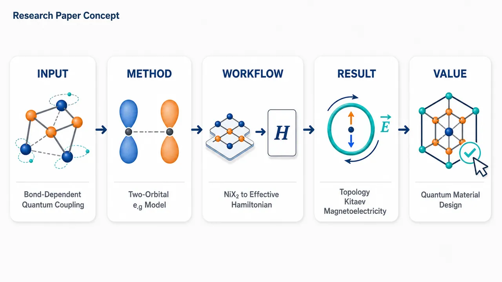
研究问题在以 NiX2 卤化镍为代表的双 e_g 轨道体系中，键依赖自旋轨道耦合如何同时诱导非平庸能带拓扑、Kitaev 型各向异性磁相互作用以及可观测磁电响应？创新方法提出一个双 e_g 轨道低能模型，将 NiX2 的轨道自由度、晶格键方向与自旋轨道耦合绑定起来：不同化学键上出现不同形式的 SOC 项，使同一最小模型成为连接拓扑能带、Kitaev 磁性和磁电耦合的统一理论平台。工作流程从 NiX2 卤化镍的电子结构特征出发，选取两个 e_g 轨道建立低能哈密顿量，引入随键方向变化的自旋轨道耦合项，分析能带结构与拓扑性质，再推导强关联极限下的有效自旋相互作用，最后考察磁序与电极化之间的耦合响应。关键结果模型显示：键依赖 SOC 可在双 e_g 轨道体系中产生新兴拓扑能带特征，并自然生成类似 Kitaev 模型的各向异性交换作用；同时，轨道-自旋-晶格键的耦合为磁电效应提供微观机制，使 NiX2 类材料成为探索多重关联量子现象的候选平台。应用价值该研究为设计兼具拓扑电子态、Kitaev 量子磁性和磁电可控性的过渡金属卤化物提供理论蓝图，可用于筛选新型二维量子材料、自旋轨道器件材料以及磁电调控功能材料。核心概览
本文构造了一个受 NiX₂ 卤化镍电子结构启发的双 (e_g) 轨道低能模型，引入键依赖自旋轨道耦合，用于统一探讨能带拓扑、Kitaev 磁性与磁电效应，属于强关联/自旋轨道耦合量子材料理论方向。
方法要点
- 基于 NiX₂ 卤化镍的电子结构动机构建低能有效模型。
- 模型包含两个 (e_g) 轨道自由度。
- 在模型中引入键依赖的自旋轨道耦合项。
- 以该模型作为理论平台研究能带拓扑、Kitaev 型磁性和磁电效应之间的关联。
- 摘要未详述具体哈密顿量形式、参数来源、计算方法或数值模拟细节。
关键结果
- 提出了一个含键依赖自旋轨道耦合的双 (e_g) 轨道低能模型。
- 该模型可将 NiX₂ 相关电子结构与多种涌现物性联系起来。
- 摘要明确指出该模型可作为研究能带拓扑、Kitaev 磁性和磁电效应的“playground”。
- 摘要未详述具体拓扑相、磁性相、磁电响应形式或定量结果。
创新性判断
- 可能的新颖点在于：将双 (e_g) 轨道模型与“键依赖自旋轨道耦合”结合，用于描述或启发 NiX₂ 类材料中的多种涌现现象。
- 相比常见的 Kitaev 物理多基于 (t₂g) 轨道或强自旋轨道耦合体系，该工作可能强调 (e_g) 轨道体系中也能产生相关的键依赖相互作用；但这一点仅由摘要可合理推断，具体比较摘要未详述。
- 将能带拓扑、Kitaev 磁性和磁电效应放在同一低能模型框架下讨论，可能是其概念整合上的创新；具体机制和优势摘要未详述。
-
07
💡 亮点：自旋-声子耦合可生成斯格明子和半子相。
📖 展开分析 + 配图
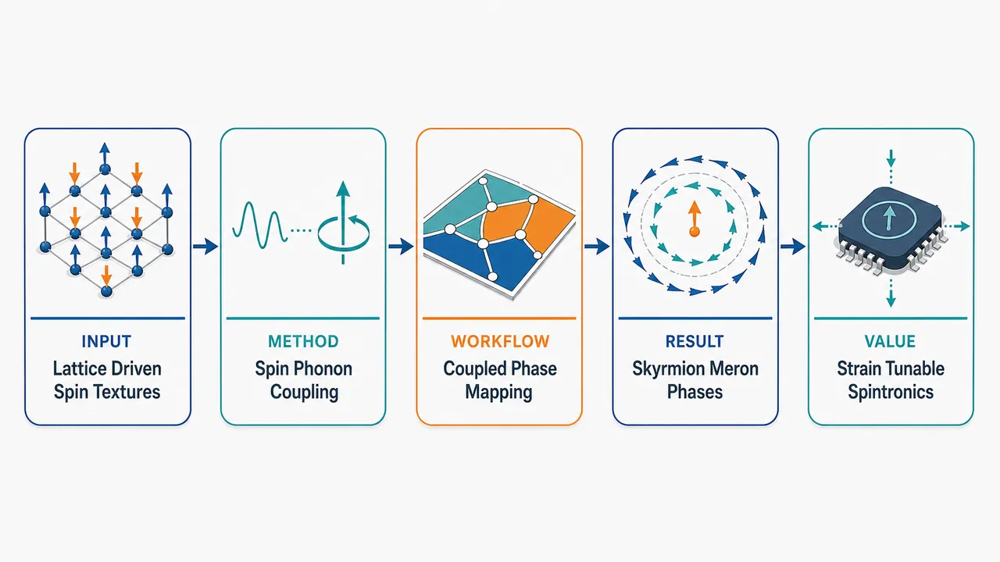
研究问题在手性磁体中，除交换相互作用、Dzyaloshinskii-Moriya 相互作用和外磁场之外，晶格振动与自旋之间的耦合是否能够主动驱动并稳定拓扑自旋纹理，如斯格明子和半子相。创新方法将晶格自由度显式引入手性磁体模型，把自旋排列与声子/晶格畸变耦合起来；核心 Aha 点是：晶格不再只是背景，而可通过自旋-声子耦合重塑磁相图，诱导传统机制之外的斯格明子和半子拓扑相。工作流程输入手性磁体中的自旋相互作用、外磁场与晶格自由度；引入自旋-声子耦合项，使局域自旋构型与晶格畸变相互反馈；扫描耦合强度、磁场和温度等参数；计算能量最小化后的自旋纹理；输出螺旋态、斯格明子晶格、半子相等拓扑磁相区域。关键结果自旋-声子耦合能够诱导并稳定斯格明子相和半子相，表明拓扑磁相的形成不完全依赖传统的交换-DMI-磁场平衡；晶格畸变可作为调控拓扑自旋结构的新旋钮，扩展手性磁体的相图。应用价值为利用应变、声子、晶格工程调控拓扑磁结构提供理论依据，可用于低功耗自旋电子器件、可调控磁存储、拓扑信息载体设计，以及通过弹性/声学手段控制纳米磁纹理。第一部分：核心概览
自旋-声子耦合被确立为调控二维手征磁体拓扑纹理的有效机制。平方晶格交换-DM模型中，Einstein site-phonon 与 bond-phonon 两类耦合产生显著不同的有效相互作用：前者生成几何依赖的多自旋/三站点项，诱导meron–antimeron晶体、紧凑meron–antimeron相、square double-q skyrmion晶格与混合相；后者主要通过局域二自旋二次项扩大skyrmion crystal稳定区。核心地位在于把晶格自由度从“扰动因素”提升为“拓扑相设计旋钮”。
---
第二部分：结构化快速回顾
《Skyrmion and meron phases induced by spin-phonon coupling》（None，）
背景
Magnetic skyrmions通常由交换作用、Dzyaloshinskii–Moriya interaction与外磁场竞争稳定；真实材料还含有晶格自由度，但spin-phonon coupling对skyrmion、meron及相关拓扑相的作用长期研究不足。
方法
平方晶格经典铁磁Heisenberg-DM模型被扩展为两类磁弹耦合模型：Einstein site-phonon model与bond-phonon model。声子自由度通过最小化或积分消去，得到有效自旋Hamiltonian；随后采用Metropolis Monte Carlo模拟，系统尺寸为 L = 32, 48, 64，周期边界，最低温度约 T/J₀ = 1.2 × 10⁻⁴ / 1.2 × 10⁻³，并计算标量手征性与结构因子。
结果
ESP耦合生成更丰富且碎片化的拓扑相，包括meron–antimeron crystal、compact meron–antimeron crystal、skyrmion–bimeron混合相和double-q square skyrmion lattice。BP耦合更稳定、宽范围地增强skyrmion crystal，尤其在无耦合模型中本为螺旋或极化的场区。
讨论
β主要增强DM调制与手征纹理，强β可使传统triple-q hexagonal SkX畸变为double-q square SkX；α增强交换对晶格畸变的敏感性，在ESP中通过三站点项促成meron–antimeron与局域反铁磁簇状结构。
局限
模型为二维经典自旋、简化弹性自由度、最近邻交换/DM、线性磁弹耦合；未包含量子涨落、真实材料晶格弹性张量、长程偶极相互作用、退相干/动力学效应及实验可直接拟合参数。统计误差、临界指数与相变阶数未系统给出。
结论
晶格自由度不仅改变已知skyrmion相的稳定窗口，还能诱导meron、bimeron及square skyrmion等新拓扑纹理；spin-phonon coupling提供了无需引入复杂磁相互作用即可调控拓扑磁相的简洁机制。
---
第三部分：逐章节冷凝解析
Abstract
- Spin-phonon coupling becomes a route to topological phase engineering
手征磁体中，skyrmion传统上依赖exchange interaction、Dzyaloshinskii–Moriya interaction与外场竞争稳定；晶格自由度过去关注较少。摘要直接给出研究缺口：*"In chiral magnets, magnetic skyrmions are typically stabilized by the competition between exchange and Dzyaloshinskii-Moriya interactions under an external magnetic field, while the role of lattice degrees of freedom has received comparatively less attention."*
核心推进在于把lattice degrees of freedom作为主动调参机制，而非背景扰动。
- Two simplified spin-phonon schemes are contrasted
研究对象为二维平方晶格skyrmion模型，比较两种磁弹耦合：Einstein site-phonon, ESP与bond-phonon, BP。原始表述为：*"Using Monte Carlo simulations, we compare two simplified models describing the SP coupling: the Einstein site-phonon (ESP) and bond-phonon (BP) models."*
两模型差异决定有效相互作用类型：ESP产生多自旋/几何耦合项，BP仅产生键上局域修正。
- ESP induces phases absent in the uncoupled model
ESP耦合不仅扩展skyrmion crystal稳定区，还在无耦合模型拓扑平庸的外场区域诱导新相。证据表述为：*"We find that ESP coupling stabilizes skyrmion crystals in field regimes that are topologically trivial in the uncoupled model and also induces additional textures, including meron-antimeron (M-aM) crystals and mixed skyrmion-bimeron (SkX-Bm) phases."*
关键创新包括M-aM crystals与SkX-Bm phases。
- Strong phonon coupling distorts hexagonal SkX into square SkX
足够强的声子耦合使常规triple-q hexagonal skyrmion lattice转变或畸变为double-q square skyrmion lattice。原文证据：*"Furthermore, for sufficiently strong phonon coupling, the conventional triple-q hexagonal skyrmion lattice is distorted into a double-q square skyrmion lattice."*
这说明磁弹耦合可改变拓扑晶格的空间群对称性。
---
I Introduction
- Skyrmions arise from competing magnetic interactions
Magnetic skyrmions是拓扑自旋纹理，依赖多种磁相互作用竞争形成。原文概括为：*"Magnetic skyrmions are topological spin textures that emerge from the competition between different magnetic interactions and have been widely studied in a variety of systems."*
常规机制为交换与DM相互作用：*"Their formation is typically associated with the interplay between exchange and Dzyaloshinskii-Moriya (DM) interactions."*
- Alternative stabilization mechanisms broaden the skyrmion landscape
除交换-DM机制外，exchange frustration、bond-dependent anisotropies、long-range interactions与higher-order exchange terms也可稳定skyrmion相。原文列举：*"although other mechanisms such as exchange frustration, bond-dependent anisotropies, long-range interactions, and higher-order exchange terms can also stabilize skyrmion phases."*
该背景说明新机制“spin-phonon coupling”具有可比较的理论位置。
- Magnetic field drives the canonical sequence from helices to skyrmion crystals
低温零场常偏好helical states，升高磁场后出现multi-q states与skyrmion crystals。关键表述：*"At low temperatures and zero magnetic field, these systems often favor helical states characterized by one-dimensional spin modulations. As the magnetic field increases, the competition between interactions leads to multi-q states and the formation of skyrmion crystals (SkX)."*
中间区域可能出现elongated skyrmions或bimerons：*"In intermediate regimes, additional textures such as elongated skyrmions or bimerons can appear, reflecting the presence of competing energy scales."*
- Merons are fractional-charge relatives of skyrmions
Merons携带分数拓扑荷，通常成对出现，能量学类似XY涡旋。原文：*"These objects carry fractional topological charge and typically appear in pairs, with an energetics similar to that of XY vortices."*
该点为后续meron–antimeron crystal提供拓扑语境。
- Lattice degrees of freedom are physically unavoidable
真实材料包含晶格自由度，disorder与lattice distortions会改变skyrmion相稳定性。原文：*"While most studies focus on magnetic interactions alone, real materials also involve lattice degrees of freedom. Disorder and lattice distortions are known to modify the stability of skyrmion phases."*
因而spin-phonon coupling被定义为自然调控通道：*"spin-phonon coupling provides a natural way to tune magnetic interactions."*
- Spin-phonon coupling has precedent but not in skyrmion texture stabilization
SP耦合在spin ice、kagome lattices、pyrochlore systems中已有广泛研究，但在skyrmion与相关拓扑相中仍较少。原文：*"Such coupling has been extensively studied in frustrated and correlated systems... However, its role in stabilizing skyrmion textures and related topological phases remains less explored."*
研究缺口明确聚焦“拓扑磁纹理中的磁弹效应”。
- Two coupling schemes target distinct physical pictures
ESP中，晶格畸变生成有效多自旋相互作用；BP中，SP耦合局域作用于每条键。原文：*"We consider two coupling schemes: the Einstein site-phonon model... where lattice distortions generate effective multi-spin interactions, and the bond-phonon model... where the SP coupling acts locally on each bond."*
这种对照使相图差异可归因于“站点几何耦合”与“键局域耦合”的结构差别。
---
II Model and Method
- Base magnetic Hamiltonian combines ferromagnetic exchange, DM interaction, and Zeeman field
基础模型为平方晶格经典铁磁Heisenberg模型，Hamiltonian包含最近邻交换、DM项和z方向外场：
*"We consider the classical ferromagnetic Heisenberg model on a square lattice"*，并给出
*"Hmag = Σ⟨ij⟩ Jij Si · Sj + Dij · (Si × Sj) − B Σi Siz."*
自旋变量为classical unit vectors：*"the spin variables Si are classical unit vectors at site ri."*
- DM vectors are bond-directional and in-plane
DM相互作用写作 Dᵢⱼ = Dᵢⱼ r̂ᵢⱼ，方向沿最近邻键方向。原文：*"Dij = Dij (rj − ri)/|rj − ri| = Dij r̂ij is the DM interaction."*
这使模型具有Néel型skyrmion常见的面内DM结构。
- Magnetoelastic coupling enters through distance-dependent J and D
交换与DM强度线性依赖原子位移引起的键长变化。原文：*"To include magnetoelastic coupling, we allow the exchange and DM interactions to depend linearly on atomic displacements."*
小畸变条件为：*"For small distortions |ui|/|ri0| << 1, the interactions can be expanded as"*
[
Jᵢⱼ=-J₀₍₁₊α uᵢⱼ),quad Dᵢⱼ=D₀ᵢⱼ(1+β uᵢⱼ).
]
- α and β quantify exchange and DM sensitivity to lattice distortions
α与β分别为交换与DM对距离变化的对数导数：*"The parameters α = 1/J dJ/dr ... and β = 1/D dD/dr ... describe the sensitivity of both the exchange and DM interactions to lattice distortions."*
全文设定 J₀ > 0 表示铁磁交换：*"where we take J0 > 0 for ferromagnetic interactions."*
- Only the DM magnitude changes, not its direction
关键简化是晶格畸变只改变DM强度，不改变方向。原文：*"Throughout this work, we assume that lattice distortions modify only the magnitude of the DM interaction, while its direction remains unchanged."*
这避免了由局域键角变化导致的复杂DM矢量旋转。
---
II.1 Einstein site-phonon model
- Site displacements are independent Einstein oscillators
ESP模型中，每个格点有独立位移向量 uᵢ，键长变化由相邻站点位移差投影给出：*"In the ESP model, each site possesses an independent displacement vector ui from its equilibrium position ri0 and uij is given by uij = êij · (ui − uj)."*
声子为局域谐振子：*"The phonons are treated as local harmonic oscillators."*
- Elastic energy is local and quadratic
ESP弹性能为
[
HₚₕESP=frac12κsumᵢ|uᵢ|².
]
原文：*"with an elastic energy given by HphESP = 1/2 κ Σi |ui|2, where κ is the elastic constant."*
这使声子变量可精确消去。
- Phonons can be integrated out exactly by minimization
由于弹性能二次、耦合线性，经典极限下可通过最小化总Hamiltonian得到最优位移。原文：*"Since the elastic term is quadratic and the coupling to spins is linear, the phonon degrees of freedom can be integrated out exactly."*
最小化条件为：*"this is equivalent to minimizing the total Hamiltonian ... with respect to ui (i.e., ∂Htot/∂ui = 0)."*
- Optimal displacement is a local spin functional
最优位移满足
[
κ uᵢ^*=sumⱼᵢₙ NN₍ᵢ₎hat eᵢⱼłeft[J₀α mathbf Sᵢḑotmathbf Sⱼ₋βmathbf D₀ᵢⱼḑot(mathbf Sᵢ×mathbf Sⱼ₎ᵢ̊ght].
]
原文解释：*"This expression provides the optimal displacement ui* at each site as a function of the local spin configuration."*
因此晶格畸变直接编码局域spin correlation与bond chirality。
- Effective ESP Hamiltonian contains induced multi-spin interactions
将 uᵢ* 代回Hamiltonian产生有效自旋模型。原文：*"Replacing ui* back into the Hamiltonian yields an effective spin Hamiltonian HeffESP that includes induced multi-spin interactions arising from the coupling to the lattice."*
这一区别是ESP与BP最根本差异。
- Quadratic terms create local degeneracies
ESP有效Hamiltonian含有
(Sᵢ·Sⱼ)² 与 [D₀ᵢⱼ·(Sᵢ×Sⱼ)]²。这些项不区分正负自旋关联或相反手性：*"the quadratic terms ... do not distinguish between positive and negative spin correlations, nor between opposite chiralities, leading to local degeneracies."*
这种局域简并为非传统纹理提供空间。
- Three-site terms couple adjacent bonds through geometry
ESP特有项由 êᵢⱼ·êᵢₖ 调制，耦合相邻键。原文：*"In contrast, the three-site terms couple neighboring bonds through geometric factors."*
α²项偏好相邻自旋关联符号相反：*"The contributions proportional to α2 favor configurations where adjacent spin correlations have opposite sign, promoting locally antiferromagnetic patterns along lattice directions."*
β²项偏好交替手性：*"the β2 terms favor alternating chirality between neighboring bonds, disfavoring uniform rotational textures."*
---
II.2 Bond phonon model
- Bond degrees of freedom are independent longitudinal variables
BP模型将声子自由度放在键上，每条最近邻键携带独立纵向位移 uᵢⱼ。原文：*"the lattice degrees of freedom are assigned to the bonds rather than to the sites. Each nearest-neighbor link ⟨ij⟩ carries an independent longitudinal displacement uij."*
这代表局域键伸缩而非站点位移场。
- Bond elastic energy is a sum over links
BP弹性能为
[
HₚₕBP=frac12κsumłₐₙgₗₑ ᵢⱼåₙgₗₑuᵢⱼ².
]
原文：*"and the corresponding elastic energy is HphBP = 1/2 κ Σ⟨ij⟩ uij2, where κ is the bond elastic constant."*
- Integrating out bond phonons yields only on-bond corrections
有效BP Hamiltonian仅包含两自旋键上项，包括 (Sᵢ·Sⱼ)²、[D₀ᵢⱼ·(Sᵢ×Sⱼ)]² 与混合项。原文：*"The BP Hamiltonian contains only on-bond corrections: all additional terms involve the two spins connected by a given link."*
关键差异：*"No geometric factors couple different bonds, and therefore no further-neighbor or multi-spin interactions are generated."*
- α² favors collinearity without selecting ferro versus antiferro
BP中 α²增强 (Sᵢ·Sⱼ)²，偏好共线排列，但不区分平行与反平行。原文：*"The contribution proportional to α2 enhances (Si · Sj)2, favoring collinear alignment without distinguishing between parallel and antiparallel configurations."*
在铁磁交换背景下，该项倾向强化局域对齐或极化：*"This acts uniformly on all bonds and tends to reinforce locally aligned or polarized states."*
- β² favors finite bond chirality
BP中 β²项增加键手性平方权重，促进有限手性。原文：*"the β2 term increases the weight of (D0ij · (Si × Sj))2, favoring finite chirality on each bond."*
当底层相互作用允许时，spiral或skyrmion-like纹理可稳定：*"As a result, spiral or skyrmion-like textures can be stabilized when allowed by the underlying interactions."*
---
II.3 Monte Carlo Simulations
- Metropolis Monte Carlo protocol uses three lattice sizes
模拟采用Metropolis Monte Carlo algorithm，平方格点数 N = L²，线性尺寸 L = 32, 48, 64，周期边界。原文：*"The simulations were carried out using the Metropolis Monte Carlo (MC) algorithm. We considered square lattices of N = L2 spins, and linear size L = 32, 48, and 64, under periodic boundary conditions."*
- Cooling schedule and sampling are specified
系统经指数降温，从高温经 80 successive steps 到低温 T/J₀ = 1.2 × 10⁻⁴；初始化 10⁵ MC steps，测量步数为其四倍。原文：*"The system was cooled using an exponential schedule from high temperature through 80 successive steps down to T/J0 = 1.2 × 10−4, taking 105 MC steps for initialization and four times as many for measurements."*
图注中最低温度多处标为 T/J₀ = 1.2 × 10⁻³，显示文本与图注存在一个数量级差异。
- Local scalar chirality diagnoses noncoplanar topology
局域标量手征性定义为
[
ḩiᵢ₌mathbf Sᵢḑot(mathbf Sⱼ×mathbf Sₘ₊mathbf Sₖ×mathbf Sₙ₎.
]
原文：*"To characterize the various types of chiral phases, we computed the local scalar chirality χi."*
几何意义：*"Geometrically, χi is related to the solid angle formed by the three spins in the plaquette, vanishing for coplanar configurations and becoming finite for chiral spin textures."*
- Total chirality approximates topological charge
总标量手征性是连续拓扑荷
[
Q=frac14πiint mathbf Sḑot(partialₓmathbf S×partial_ymathbf S),dxdy
]
的离散版本。原文：*"Chirality χ is the discrete version of the topological charge Q..."*
对skyrmion，Q = −1；helical与ferromagnetic相 Q = 0：*"For skyrmions, Q = −1, while helical and ferromagnetic phases yield Q = 0."*
- In-plane structure factor distinguishes symmetry and ordering wave vectors
结构因子 S⊥(q) 用于区分helical、SkX和fully polarized phases。原文：*"Additionally, we computed the in-plane structure factor S⊥(q)... which allows us to distinguish between helical, skyrmion-crystal, and fully polarized phases."*
hexagonal SkX为triple-q state，满足 Σᵢ₌₁³ qᵢ = 0，产生六个Bragg峰：*"A hexagonal skyrmion crystal corresponds to a triple-q state... This leads to six characteristic Bragg peaks in the structure factor."*
meron-antimeron晶体为平方排列，产生四个主峰：*"crystals formed by merons and antimerons exhibit a square arrangement that produces four dominant peaks in reciprocal space."*
---
III Results
- Elastic constant is absorbed into rescaled couplings
为减少参数数目，位移和耦合重标度：u → u/√κ, α → α/√κ, β → β/√κ。原文：*"we rescale the phonon displacements and coupling parameters as u → u/√κ, α → α′ = α/√κ, and β → β′ = β/√κ. This absorbs the elastic constant into the couplings and reduces the number of independent parameters."*
后续直接记为α、β：*"we denote the rescaled parameters simply as α and β."*
- Phase diagrams are built in α–β space at three fields
低温相图覆盖 B/J₀ = 0.2, 0.4, 0.8，ESP与BP均以 |χ|/L² 标定手征相。原文：*"the low-temperature β vs α phase diagrams for three different values of the magnetic field B/J0 = 0.2, 0.4, and 0.8 are shown for both ESP and BP models."*
|χ|/L²为关键序参量：*"These phase diagrams are constructed using the absolute normalized chirality |χ|/L2, which is a key order parameter to detect possible skyrmion phases."*
- ESP produces fragmented chiral regions; BP produces broad chiral regions
两模型均随α、β增加稳定不同手征相，但形态不同。原文：*"in both SP models, different chiral phases are stabilized as α and β increase."*
直接比较：*"the ESP model showing a more restricted and fragmented chiral region, while the BP model exhibits a broader region with finite chirality."*
- BP enhances skyrmions in otherwise trivial regions
BP在无SP耦合下为低场spiral或高场polarized的区域增强skyrmion。原文：*"in the BP model, skyrmion phases are enhanced in regions where, in the model without SP coupling, non-chiral phases, such as spirals at low fields and polarized phases at higher fields, are found."*
这说明BP的局域二次DM项尤其利于非共线手征纹理。
- ESP generates exotic meron-related textures
ESP产生meron等非skyrmion拓扑纹理。原文：*"in the ESP model, other exotic textures arise, such as merons."*
零场ESP中纹理从helices扩展到M-aM crystals与CM-aM phases：*"the ESP model leads to a broader variety of textures... ranging from helices to meron-antimeron (M-aM) crystals and compact meron-antimeron (CM-aM) phases."*
- Zero-field BP evolves from helices to stripes with increasing β
零磁场BP模型中，helical phase平滑变形为curved spirals，强β极限形成horizontal stripes。原文：*"In the absence of a magnetic field, the BP model displays a smooth deformation of the helical phase into curved spirals, and eventually into horizontal stripes in the large-β limit."*
这与ESP的碎片化、多相竞争形成对比。
- Intermediate fields reveal BP skyrmion stabilization and ESP skyrmion suppression
在 0.2 ≤ B/J₀ ≤ 0.4，BP偏好skyrmion并扩大手征相区域：*"For intermediate magnetic fields (0.2 ≤ B/J0 ≤ 0.4), the BP model favors skyrmion textures, expanding the region of (α,β) parameter space where chiral phases are stabilized."*
ESP在大α、大β时skyrmion被抑制：*"in the ESP model, skyrmion configurations are suppressed at large α and β."*
- Square double-q skyrmion lattice appears near strong β and small α
ESP在 β ≈ 0.7, α = 0 附近出现近似double-q square skyrmion lattice。原文：*"an approximate double-q square skyrmion lattice (around β ≈ 0.7, α = 0)."*
BP也可在更高场与大β中出现近似square lattice：*"The approximate square lattice is also found for large β in the BP model at larger fields."*
- High-field ESP is mostly polarized; high-field BP stabilizes skyrmions for β ≳ 0.8
B/J₀ = 0.8 时，ESP大部分极化，仅有孤立skyrmion或残余helical结构，并进一步向meron相发展。原文：*"The ESP model... is mostly polarized, with only isolated skyrmions or residual helical structures at larger α, leading to meron phases as the coupling is further increased."*
BP在 β ≳ 0.8 稳定skyrmion：*"the BP model shows the stabilization skyrmions for β ≳ 0.8, driven mostly by β."*
- β and α play opposite organizing roles
增大β增强有效手征相互作用并促进非共线纹理：*"Increasing this coupling enhances the effective strength of chiral interactions, promoting non-collinear textures and stabilizing skyrmion phases over a broad range of magnetic fields."*
增大α增强交换对畸变敏感性并可能破坏skyrmion order：*"increasing α enhances the sensitivity of the exchange interaction to lattice distortions, introducing competing tendencies that can destabilize skyrmion order and favor phases such as meron–antimeron crystals."*
---
III.1 Description of Magnetic phases
- Phase taxonomy is tied to effective Hamiltonian terms
各磁相被解释为ESP Eq.(5) 与BP Eq.(7) 中有效项竞争的结果。原文：*"we characterize the different magnetic phases and relate them to the underlying competition between the effective terms of the ESP and BP models."*
这种解释结构将相图现象直接联系到quadratic exchange、quadratic DM与three-site geometric terms。
---
III.1.1 Case without spin-phonon coupling (α = β = 0)
- Uncoupled model recovers the standard skyrmion model
设定 α = β = 0 后恢复铁磁交换与面内DM场下的经典skyrmion模型。原文：*"We first consider the non-phonon coupling case by setting α = β = 0 in Eq. (1), recovering the well-studied skyrmion model with ferromagnetic exchange and in-plane DM interactions under a magnetic field."*
- Baseline phase diagram has three main field regimes at D₀/J₀ = 1
在 D₀/J₀ = 1、低温下，相图包含：
H phase：0 ≤ B/J₀ < Bc1 ≃ 0.3；
hexagonal SkX：Bc1 ≤ B/J₀ ≤ Bc2 ≃ 0.6；
FM phase：B/J₀ > Bc2。
原文：*"For D0/J0 = 1 at low temperature, the phase diagram contains three main regions: a single-q helical (H) state for 0 ≤ B/J0 < Bc1 ≃ 0.3, a hexagonal skyrmion crystal (SkX) for Bc1 ≤ B/J0 ≤ Bc2 ≃ 0.6, and a fully polarized ferromagnetic (FM) phase for B/J0 > Bc2."*
- Thermal fluctuations generate skyrmion gas
SkX与FM之间可出现skyrmion gas, SkG。原文：*"Thermal fluctuations further generate an intermediate skyrmion gas (SkG) between SkX and FM phases."*
SkG中skyrmion仍存在但无长程有序：*"skyrmions persist without long-range order."*
- Field-driven sequence reflects exchange-DM-Zeeman competition
低场helical state最小化exchange与DM能；增大B后Zeeman项偏好自旋对齐，依次出现SkX、SkG、FM。原文：*"The sequence of phases reflects the competition between exchange, DM interactions, and Zeeman energy."*
物理图像为：*"the DM interaction selects a finite modulation length scale, while the magnetic field controls the density of topological defects."*
- SkX-Bm appears during partial unwinding of helices
从helical相升场时出现skyrmion-bimeron phase，helices破裂为bimerons或elongated skyrmions。原文：*"a skyrmion-bimeron (SkX-Bm) phase appears as the magnetic field increases from the helical phase: helices break into bimerons (or elongated skyrmions)."*
解释为螺旋调制部分解缠：*"This can be understood as a partial unwinding of the helical modulation."*
与把bimeron定义为bound meron pairs的观点不同：*"This interpretation differs from the alternative definition based on bound meron pairs."*
---
III.1.2 Square double-q skyrmion (2q-SkX) phase - ESP and BP models
- Representative ESP square SkX occurs at B/J₀ = 0.4, α = 0.1, β = 0.7
典型构型参数为 B/J₀, α, β = 0.4, 0.1, 0.7。原文：*"A representative configuration is shown in Fig. 5(e) for B/J0, α, β = 0.4, 0.1, 0.7 in the ESP model."*
其结构为近似平方skyrmion晶格：*"It corresponds to an approximate square skyrmion lattice with four-fold symmetry."*
- Structure factor shows orthogonal q vectors and double-q character
该相结构因子在正交 q₁ 与 q₂ 上有对称峰，显示double-q与四重旋转对称性。原文：*"The structure factor in this phase shows symmetric peaks in orthogonal wave vectors q1 and q2, reflecting its double-q character and four-fold rotational symmetry."*
- Square SkX results from competing modulation directions
形成机制是不同调制方向之间的竞争，导致两个正交ordering wave vectors共存。原文：*"This phase can be interpreted as arising from the competition between interactions that favor different modulation directions, leading to the coexistence of two orthogonal ordering wave vectors instead of the single-q or triple-q states typical of helical and hexagonal skyrmion phases."*
- Large β and negligible α implicate DM terms
ESP与BP中该相均在大β、小α出现，指向线性DM与二次DM项竞争。原文：*"Given that for both SP coupling models the phase arises at large β and negligible α, our results suggest that the competition between the linear and quadratic DM terms drives the stabilization of this type of phase."*
---
III.1.3 Skyrmion-bimeron (SkX-Bm) phase - ESP and BP models
- Skyrmions and bimerons coexist with identical topological charge
Fig.5(f)中skyrmions与bimerons共存，二者携带相同拓扑荷。原文：*"Fig. 5(f) shows a configuration with coexisting skyrmions and bimerons. Both carry the same topological charge."*
bimerons可由局域场、disorder与热涨落诱导：*"Bimerons are known to emerge in the presence of local fields, disorder, and thermal fluctuations."*
- The phase is present in both models but stronger in BP
SkX-Bm在ESP和BP中均出现，但BP更显著。原文：*"This phase appears in both models, but is more prominent in the BP case."*
它体现不同长度尺度竞争：*"It reflects a regime where different length scales compete, allowing localized skyrmions and elongated bimerons to coexist without forming a single periodic structure."*
- BP α acts field-like through quadratic exchange
在BP低场、大α、小β区域，SkX-Bm作为helices与skyrmions之间的中间相。原文：*"in the BP model... at larger α and small β, the SkX-Bm phase appears as an intermediate phase between helices and skyrmions induced by larger α."*
BP中α对应偏好相邻自旋平行的二次交换项，与铁磁交换共同类似外场：*"the quadratic exchange term that favors the parallel alignment of neighbouring spins... acts similarly to an external magnetic field."*
- ESP bimerons arise differently through β-driven spiral evolution
ESP中bimerons由spirals随β增加而来，且低α时更明显。原文：*"This is different in the ESP model: bimerons arise from spirals as β is increased, for low α."*
二次DM项偏好手征排列但不固定helicity；三站点DM项与skyrmion面内环流不兼容，强β下会消除这些纹理：*"the quadratic DM term seems to favor chiral arrangements (without fixing the helicity), but the effective three-site DM term is incompatible with the in-plane circulation on skyrmions."*
---
III.1.4 Triple-q Skyrmion-crystal (SkX) phase - ESP and BP models
- Spin-phonon terms enhance or induce conventional triple-q SkX
SP耦合产生的附加相互作用可增强并诱导经典triple-q skyrmion crystal。原文：*"the additional interactions arising from the SP coupling models used in this work, enhance and give rise to the well-known triple-q skyrmion crystal phase."*
该相中skyrmions形成周期排列：*"where skyrmions for a periodic arrangement"*（原句存在语法残缺，应为form a periodic arrangement）。
- BP induces SkX in field regions without skyrmions in the uncoupled model
BP模型中，Fig.5(j),(l)展示由α、β诱导的SkX；对应磁场在无声子耦合时无skyrmion。原文：*"we present two examples of this type of phase induced by α and β in the BP model for magnetic fields, where no skyrmions are found in the non-phonon interacting case."*
- Low-field and high-field BP stabilization mechanisms differ
低场SkX由大α稳定；高场从极化相出发，二次DM与二次交换共同强化exchange-DM竞争，在广泛α–β区域诱导SkX。原文：*"At lower fields, the SkX phase is stabilized for large α... At higher fields... the competition between exchange and DM interactions is reinforced by the quadratic DM and exchange terms in Eq.(7), inducing SkX in a broad region in the (α,β) parameter space."*
---
III.1.5 Distorted helices and labyrinth phases - ESP and BP models
- Increasing β distorts helices at low fields
在两类SP耦合中，低场、低α时增大β会破坏理想helices。原文：*"For both SP coupling schemes, at lower fields and low α, increasing β leads to the distortion of helices."*
原因是β相关项增强偏好垂直自旋排列的趋势：*"due to the increasing weight of terms that favor the perpendicular alignment of spins."*
- Labyrinth phases emerge from destroyed perfect helices
β增强后perfect helices被破坏，形成labyrinth-like phases。原文：*"destroying perfect helices and leading to labyrinth-like phases."*
这类相通常不是整齐拓扑晶格，而是竞争调制方向下的弯曲条纹网络。
---
III.1.6 Meron phases - ESP model
- Meron-antimeron crystals are specific to ESP in strong α and small β
ESP模型低场、强α、小β区域出现周期性meron与antimeron排列。原文：*"A particular feature of the ESP model is the emergence of periodic arrangements of meron and antimerons at low magnetic fields, strong α and small β."*
该特征源于ESP三站点几何项，BP不显著出现同类meron晶体。
- Merons carry half skyrmion topological charge
meron拓扑荷为skyrmion的一半。原文：*"Merons... have half the topological charge of a skyrmion."*
它们可存在于centrosymmetric magnets中，受competing easy-axis与compass anisotropies产生的弱easy-plane anisotropy支持：*"are expected to exist for example in centrosymmetric magnets, containing competing easy-axis and compass anisotropies, producing a relatively weak effective easy-plane anisotropy."*
- Experimental and theoretical precedents support meron-skyrmion transformations
Co₈Zn₉Mn₃中已观察到meron与skyrmion拓扑纹理转化。原文：*"recent experiments have shown a transformation between meron and skyrmion topological spin textures in the chiral magnet Co8Zn9Mn3."*
三角基底晶格spiral spin liquids也可产生meron crystals：*"meron crystals have been shown to arise from spiral spin liquids in triangular bases lattices... such as seen experimentally in Gd3Ru4Al12."*
- M-aM lattice has double-q reciprocal signature with four Bragg peaks
M-aM晶格在倒易空间对应正交helical q向量的double-q结构，具有四个Bragg峰。原文：*"In reciprocal space, a M-aM lattice corresponds to a double-q structure with orthogonal helical q vectors, resulting in four Bragg peaks."*
这与hexagonal SkX的六峰triple-q结构相区分。
- The M-aM crystal consists of 4 × 4 spin clusters
M-aM晶体为bottom-down merons与bottom-up antimerons的周期排列，由 4 × 4 spin clusters 构成。原文：*"the M-aM crystal is a periodic arrangement of bottom-down merons and bottom-up antimerons, formed by 4 × 4 spin clusters."*
bottom-up/down指核心磁化方向相反。
- Compact M-aM has 2 × 2 localized circulating clusters
更大α、小β区域形成compact meron–antimeron crystal, CM-aM。原文：*"In the larger-α and small-β regime, the system forms a more compact variant of the meron–antimeron crystal, which we refer to as a compact meron–antimeron crystal phase (CM-aM)."*
其结构为 2 × 2 近对齐自旋区域并伴随面内环流：*"It consists of localized 2 × 2 regions of nearly aligned spins with an in-plane circulation."*
- CM-aM has larger-q Bragg peaks and shorter periodicity
CM-aM四个Bragg峰位于更大波矢，表示周期更短。原文：*"and exhibits four Bragg peaks at larger wave vectors, indicating a shorter periodicity."*
这意味着缺陷密度更高：*"This reduction in length scale suggests that the effective interactions favor more localized topological defects, leading to a higher density of meron–antimeron structures."*
- Dominant three-site α term favors 2 × 2 antiferromagnetic cluster tiling
ESP Eq.(5)中的三站点α项偏好每个自旋与一个邻居平行、与相反方向邻居反平行。原文：*"This behaviour indicates the dominance of three-site α term... which favors an order where each spin is parallalel to one neighbor and antiparallel to the other neighbor in the opposite direction."*
纯交换模型中会诱导 2 × 2 簇的反铁磁周期拼贴，并降低净磁化：*"In a pure exchange model, this would induce a periodic tiling of 2 × 2 clusters ordered antiferromagnetically, competing with the Zeeman term and lowering the net magnetization."*
DM进一步为每个簇注入非零手征性：*"The DM interaction induces a non-zero chirality in each cluster, giving rise to merons and antimerons."*
---
III.2 Scalar chirality
- Scalar chirality phase diagrams miss net-zero meron-antimeron crystals
M-aM晶体局域拓扑非平庸，但正负手征抵消，因此总χ接近零。原文：*"Among them, the M-aM crystals stabilized in this work are expected to have χ ∼ 0."*
这要求超越普通总标量手征性序参量。
- Two objectives are finite-size stability and M-aM order characterization
该部分目标包括：研究不同系统尺寸下相稳定性；构造手征相关序参量分析M-aM晶体及其拓扑性质。原文：*"we focus on two objectives: first, we analyze the stability of the phases with system size studying the scalar normalized chirality. Secondly, we construct an order parameter related to the chirality to analyze the emergence of the M-aM crystals and show their topological nature."*
- Four representative phases are selected with explicit parameters
ESP选取：
2q-SkX：B/J₀ = 0.4, α = 0.1, β = 0.7；
M-aM：B/J₀ = 0.2, α = 0.7, β = 0.0。
BP选取：
文中一句称hexagonal SkX phase参数为 B/J₀ = 0.3, α = 0.2, β = 0.5，SkX-Bm phase参数为 B/J₀ = 0.6, α = β = 0.6；但Fig.6图注把(c)标为SkX-Bm、(d)标为SkX且参数顺序相反。原文关键句：*"the 2q-SkX phase (B/J0 = 0.4, α = 0.1, β = 0.7) and the M-aM crystal (B/J0 = 0.2, α = 0.7, β = 0.0) for the ESP model; the hexagonal SkX phase (B/J0 = 0.3, α = 0.2, β = 0.5) and the SkX-Bm phase (B/J0 = 0.6, α = β = 0.6) for the BP case."*
- Finite-size analysis uses L = 32, 48, 64 and 15 independent copies
归一化手征性 χ/L² 在 L = 32, 48, 64 上计算，并对 15 independent copies 平均。原文：*"In Fig. 6, we plot χ/L2 for three system sizes, L = 32, 48, 64, averaged over 15 independent copies."*
除M-aM低温总χ约零外，相随尺寸稳定：*"Results show that indeed the phases are stable with system size, supporting their topological nature, with the exception of the M-aM phase, where χ ∼ 0 at low temperatures."*
- Local chirality density reveals cancellation in M-aM phases
skyrmion系统中预期局域非平庸拓扑核与零拓扑背景；M-aM中正负拓扑荷交替，总和接近零。原文：*"For a M-aM crystal, a pattern alternating positive and negative values of the topological charge is expected, leading to a total value of close to zero."*
Fig.7显示M-aM与CM-aM中正负手征区域周期交替：*"positive and negative chirality regions alternate periodically, leading to a nearly vanishing net scalar chirality despite the presence of locally nontrivial textures."*
- Skyrmion lattices have same-sign chirality and finite net value
double-q square SkX与triple-q hexagonal SkX中，手征性在全系统同号，产生有限净χ。原文：*"In this skyrmion phases, the system exhibits chirality of the same sign across the system, resulting in a finite net value."*
skyrmion可识别为负手征区域及非手征极化背景：*"the presence of skyrmions is easily identified with a negative chirality region, surrounded by a non-chiral region, connected with the polarized background."*
- Absolute chirality is introduced to detect locally topological but net-zero textures
为研究meron-antimeron相，定义总绝对手征性
[
ḩiₐbₛ=frac14πłeftłanglesumᵢ|mathbf Sᵢḑot(mathbf Sⱼ×mathbf Sₘ₎|+|mathbf Sᵢḑot(mathbf Sₖ×mathbf Sₙ₎|i̊ghtångle.
]
原文：*"we compute what we define as the total absolute chirality χabs... calculated as the sum of the absolute value of the chirality on each lattice triangle."*
由于可用文本在 *"aiming to p"* 处中断，后续对χabs图8的完整解释无法确认；已给出图注信息为 B/J₀ = 0 与 B/J₀ = 0.4，ESP模型，固定 β = 0.0 与 β = 0.2，扫描α。
---
第四部分：深度理解与语言支持
1. 术语解析
- Spin-phonon coupling
学术含义为自旋自由度与晶格振动/位移自由度之间的耦合。这里不是动力学声子散射，而是静态或准静态磁弹耦合：晶格畸变改变 J 与 D 的幅值。其微妙点在于：积分消去声子后，表面上没有声子变量，但声子留下了有效多自旋相互作用或局域二次键相互作用。
- Einstein site-phonon model
“Einstein”强调每个格点的声子是局域、独立、无色散的谐振子。这里每个站点位移 uᵢ 同时影响连接该站点的多条键，因此消去声子后自然产生不同键之间的几何耦合，特别是 êᵢⱼ·êᵢₖ 三站点项。
- Bond-phonon model
声子变量不属于格点，而属于每一条键；每条键的纵向伸缩独立。其微妙差别是：消去声子后不会把相邻键耦合起来，因此只产生on-bond corrections。这使BP模型更“局域”、更少竞争，因而更容易宽范围稳定SkX。
- Scalar chirality
标量手征性 Sᵢ·(Sⱼ×Sₖ) 测量三个自旋是否形成非共面手性结构。它不是简单的旋转方向，而是与自旋在单位球面扫过的solid angle相关。Skyrmion晶格具有同号局域手征，净χ非零；M-aM晶格局域手征非零但正负抵消，净χ可接近零。
- Double-q / triple-q state
q表示磁结构的调制波矢。single-q通常对应一维螺旋；triple-q对应六角skyrmion晶格，三个波矢满足矢量和为零；double-q可形成square SkX或M-aM晶体，表现为倒易空间四个主峰。微妙差别在于：double-q并不自动等于meron相，需结合实空间拓扑荷分布判断。
2. 疑难查证
- 为什么ESP能产生meron-antimeron，而BP主要增强skyrmion？
BP像“每条键自己调整长度”，最终只修正这条键上的两自旋能量。它偏好共线或局域手征，但不会强迫相邻键之间交替排列。因此，BP更像增强已有的DM手征趋势，容易扩大SkX区域。
ESP像“一个格点的位移同时牵动四条键”，一个位移变量必须同时满足多个邻居的能量偏好。消去位移后，不同键之间通过几何因子耦合，导致相邻键偏好相反自旋关联或交替手性。这种“键-键竞争”会破坏均匀旋转的skyrmion纹理，转而产生局域交替的meron–antimeron结构。
- 为什么M-aM总标量手征性接近零，却仍然是拓扑非平庸？
总χ是带符号求和。meron与antimeron携带相反局域手征贡献，周期性排列时正负抵消，导致净χ≈0。
这类似电偶极晶体中总电荷为零但局域电荷分布非平庸。判断M-aM不能只看净χ，需要看χᵢ空间分布或χabs。χabs对每个三角形取绝对值后求和，可捕捉“局域有拓扑密度但全局抵消”的相。
- 为什么强β会把hexagonal SkX变成square double-q SkX？
常规hexagonal SkX由三个等价调制波矢叠加，适合连续旋转对称或近似各向同性的情形。平方晶格本身只有四重旋转对称，强β增强DM相关二次项后，能量景观会更强地感受到晶格方向，导致两个正交波矢比三个120°波矢更有利。于是triple-q六角晶格被畸变为double-q平方晶格。
- 为什么α在BP中可能像外磁场，而在ESP中却诱导meron？
BP的α²项是局域 (Sᵢ·Sⱼ)²，在已有铁磁交换 −J₀Sᵢ·Sⱼ 背景下，平行排列通常更受益，因此类似增强极化倾向。
ESP的α²不仅有键上项，还有三站点项，会要求相邻方向的自旋关联符号相反。这不是简单加强铁磁，而是引入局域反铁磁簇化趋势。DM再叠加后，每个簇产生环流与局域手征，从而形成meron/antimeron。
---
第五部分：创新评估与关联
1. 创新性判断
- 从“磁相互作用设计”转向“磁弹耦合设计”
近2–5年skyrmion与meron研究常强调exchange frustration、bond-dependent anisotropy、long-range interaction、高阶交换、disorder或材料特定各向异性。这里的新增点是：仅通过线性spin-phonon coupling并积分消去简化声子，就能系统地产生SkX、SkX-Bm、M-aM、CM-aM和square 2q-SkX。机制更基础，也更可迁移。
- ESP与BP的并列比较给出机制判别
过去许多磁弹研究只使用一种声子模型或只讨论能量修正。这里将site phonon与bond phonon放在同一skyrmion模型中比较，清楚显示：
ESP → 几何三站点/多自旋竞争 → meron-antimeron与碎片化相图；
BP → 键上局域二次项 → 宽范围SkX稳定。
这种对照解决了“spin-phonon coupling究竟通过何种有效项改变拓扑相”的机制问题。
- meron-antimeron crystal由磁弹三站点交换项自然诱导
M-aM与CM-aM并非通过人为加入easy-plane anisotropy、compass anisotropy或特定材料势能得到，而是由ESP中α主导的三站点项与DM手征共同产生。该机制为meron晶体提供了新生成路径。
- square double-q skyrmion lattice的稳定机制被关联到DM磁弹调制
强β、小α条件下，传统triple-q hexagonal SkX可畸变为double-q square SkX。该结果说明DM强度对键长的敏感性可控制skyrmion晶格对称性，补充了以往主要依赖晶格各向异性或高阶交换解释square SkX的思路。
- 局域拓扑而净手征为零的问题得到诊断策略
M-aM晶体的净χ≈0，普通拓扑荷密度平均会误判为平庸。通过局域 χᵢ 图像与total absolute chirality χabs，可识别“局域拓扑非平庸但全局抵消”的相。这对后续数值研究meron-antimeron、vortex-antivortex类磁纹理具有方法价值。
- 前人未充分解决的问题
关键未解问题包括：
- 晶格自由度能否单独诱导拓扑磁相，而不只是扰动SkX稳定性；
- 不同磁弹耦合几何结构是否会导致定性不同拓扑相；
- meron-antimeron晶体能否从简洁的交换-DM-声子模型中自然出现；
- skyrmion晶格对称性是否可由DM-phonon耦合调控。
该工作对这些问题给出统一数值与有效Hamiltonian层面的回答。
-
08
💡 亮点：超薄 CrSb 保持交替磁自旋劈裂特征。
📖 展开分析 + 配图
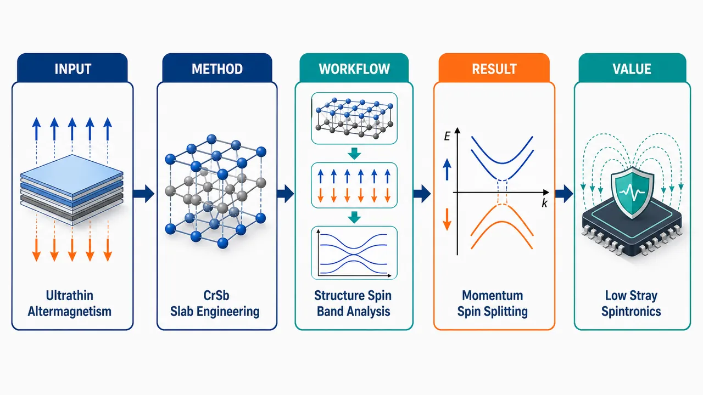
研究问题超薄 CrSb 薄板在厚度降低到二维极限时，是否仍能保持交替磁性：即整体零净磁化、但在动量空间出现可用于自旋操控的自旋劈裂。创新方法聚焦“超薄 CrSb 薄板”这一低维结构，把交替磁性的核心特征从块体材料推进到薄层尺度；关键 Aha 点是利用无净磁矩的反铁磁式排列，同时保留动量依赖自旋劈裂，为无外磁场、低串扰自旋电子学提供新材料图景。工作流程以 CrSb 超薄薄板为研究对象，构建不同厚度的低维晶体结构；分析其磁有序与净磁化状态；进一步考察能带在动量空间中的自旋劈裂分布；最终判断其是否具备交替磁性及自旋电子器件可用性。关键结果超薄 CrSb 薄板被指出可呈现交替磁性特征：宏观上没有净磁化，微观能带中却存在动量依赖的自旋劈裂，说明其在超薄尺度下仍可能兼具反铁磁低杂散场与铁磁式自旋可读性的优势。应用价值该研究为二维或超薄自旋电子器件提供候选平台，可用于设计高密度、低能耗、低杂散场的自旋逻辑、存储与自旋电流操控器件，推动交替磁体从基础物理走向器件集成。第一部分：核心概览 (Overview)
CrSb 在体相具有高 Néel 温度（约 705 K）和 0.6–1 eV 的交换驱动交替磁自旋劈裂，但超薄极限下该性质强烈依赖晶面取向。第一性原理计算表明，(0001) 超薄片层的交换劈裂坍缩，仅由 SOC 恢复约 70 meV 弱劈裂；(100) 片层完全自旋简并；(110) 片层在单胞厚度仍保持约 0.4 eV 的强交换驱动劈裂，并伴随增强的反铁磁交换。该工作确立了 CrSb(110) 作为超薄交替磁器件平台的优先晶向。
---
第二部分：结构化快速回顾
《Altermagnetism of ultrathin CrSb slabs》（None，）
背景：交替磁体兼具铁磁体的动量依赖自旋劈裂与反铁磁体的零净磁化。CrSb 因 705 K Néel 温度和 0.6–1 eV 自旋劈裂成为核心候选材料，但超薄极限下的保真度未明。
方法：采用 VASP/PAW/PBE 第一性原理计算，研究 CrSb 体相及 (0001)、(100)、(110) 超薄片层；使用 Wannier90 + TB2J 基于磁力定理提取 Heisenberg 交换参数。
结果：体相 CrSb 显示 0.6–1.0 eV 的交换驱动 g-wave 交替磁劈裂；(0001) 超薄片层交换劈裂坍缩，SOC 仅产生约 70 meV 残余劈裂；(100) 超薄片层完全自旋简并；(110) 片层保持约 0.4 eV 强劈裂。
讨论：取向差异源于非相对论自旋群对称性在切割后的保留或破坏。(110) 保留两个关键 glide 相关自旋群操作，因而能在二维极限保持交换驱动交替磁性。
局限：Néel 温度未被严格计算；平均场尺度只能提示高反铁磁能标，真实转变温度需要非各向同性项、热重整化和超越平均场处理。
结论：CrSb(110) 是超薄交替磁性的最稳健取向，适合未来自旋电子器件；(0001) 与 (100) 中实验观测的劈裂更可能来自体相样内部谱权重，而非真正二维超薄本征劈裂。
---
第三部分：逐章节冷凝解析 (Section-by-Section Condensing)
Abstract
Altermagnetism combines spin splitting with zero net magnetization
交替磁体的核心物理是无净磁化条件下的动量依赖自旋劈裂，形成介于铁磁与反铁磁之间的功能组合。摘要直接定义为 *"Altermagnets exhibit momentum-dependent spin splitting without net magnetization, combining characteristics of both ferromagnets and antiferromagnets"*。这一性质对自旋电子学重要，因为可在无宏观杂散场条件下获得自旋分辨能带。
CrSb is a high-temperature, large-splitting benchmark candidate
CrSb 的优势来自高温磁有序与大交换劈裂：Néel 温度约 700 K，交换驱动劈裂约 0.6–1 eV。关键证据为 *"CrSb is a prime candidate with a high Néel temperature (∼700 K) and a large exchange-driven splitting of ∼0.6–1 eV"*。这使 CrSb 比许多低温反铁磁或弱 SOC 系统更接近器件温区。
Ultrathin orientation controls whether altermagnetism survives
不同晶面在超薄极限下表现完全不同。(0001) 中交换驱动交替磁劈裂坍缩；加入 SOC 后仅恢复约 70 meV 的各向异性残余劈裂，即 *"In (0001) oriented slabs, the exchange-driven altermagnetic spin splitting collapses, but including spin-orbit coupling restores a residual anisotropic splitting of ∼70 meV"*。(100) 由于对称性降低而完全简并：*"The (100)-oriented slabs become fully spin-degenerate due to symmetry reduction"*。(110) 则保持强劈裂：*"the (110) oriented slabs show a strong altermagnetic spin splitting of ∼400 meV"*。
---
I Introduction
Altermagnetism is a distinct magnetic order beyond conventional FM and AFM
交替磁性被定义为一种新型磁序，兼具铁磁与反铁磁特征，而非传统反铁磁的简单变体。开篇指出 *"Altermagnetism has recently emerged as a novel magnetic order, combining features of both ferromagnetism and antiferromagnetism"*。其关键是：像铁磁体一样存在能带自旋劈裂，像反铁磁体一样净磁化为零，即 *"Like ferromagnets (FMs), altermagnets (AMs) exhibit spin splitting of the electronic bands, yet, akin to antiferromagnets (AFMs), they retain zero net magnetization"*。
The defining symmetry is not translation or inversion but spin-space rotation coupled to real-space operation
传统共线反铁磁在非相对论极限下常由平移或反演连接相反自旋子晶格，从而保持 Kramers 型简并；交替磁体不同，相反自旋子晶格由旋转操作连接。关键表述为 *"the opposite-spin sublattices are not related by a lattice translation (t) or inversion (i), but by a rotation"*。交替磁体的对称性由自旋旋转 (Rᵢ^S) 与实空间变换 (Rⱼ) 组成的自旋群算符刻画，即 *"combined in a so-called spin-group operator, ((Rᵢ^Sparallel Rⱼ₎)"*。
Kramers degeneracy is not restored even though net magnetization is zero
在交替磁体中，时间反演对称性 (T) 被破坏，常规反铁磁中的 (E(k,p̆arrow)=E(k,downarrow)) 不再普遍成立。直接证据为 *"Time-reversal symmetry ((T)) is thus broken, but Kramers degeneracy in AFMs, (E(k,p̆arrow)=E(k,downarrow)), is not restored"*。这解释了为何零净磁化材料仍可出现巨大自旋劈裂。
CrSb has unusually strong experimental credentials among altermagnets
CrSb 已被多项 ARPES 与实验工作验证为交替磁候选，具有705 K 高 Néel 温度和0.6–1 eV 大劈裂。原始表述为 *"CrSb has received increasing attention due to its high Néel temperature (705 K) and substantial spin splitting of 0.6–1 eV reported by ARPES measurements"*。这一数值组合使其成为室温以上自旋输运、magnonics、拓扑交替磁研究的核心平台。
Transport properties further support spintronic relevance
CrSb 的高载流子迁移率与低温非线性 Hall 电阻来自多载流子效应而非异常 Hall 效应。证据为 *"CrSb exhibits high carrier mobility, with nonlinear Hall resistivity at low temperatures attributed to a multi-carrier effect rather than an anomalous Hall effect"*。这种高迁移率对高效自旋流产生有利，原文强调为 *"advantageous for efficient spin-current generation"*。
Crystal-symmetry control enables room-temperature anomalous Hall response
较高温度下，CrSb 的交替磁序可通过晶体对称性操控，能控制 Néel vector 方向并产生室温自发异常 Hall 效应。依据为 *"manipulation of the altermagnetic order via crystal symmetry has been demonstrated, showing control of the Néel vector orientation and giving rise to a spontaneous anomalous Hall effect at room temperature"*。这把 CrSb 与magnonics 和 Néel 矢量逻辑器件连接起来。
CrSb crystallizes in NiAs-type hexagonal structure with known lattice parameters
CrSb 体相结构为六方 NiAs 型，空间群 (P6₃/mmc) No. 194，晶格常数 (a=b=4.103) Å，(c=5.463) Å。原文为 *"CrSb crystallizes in a hexagonal NiAs-type structure, with space group (P6₃/mmc) (No. 194), and lattice parameters (a=b=4.103,Å) and (c=5.463,Å)"*。中子衍射显示磁矩沿 c 轴反平行共线排列：*"Neutron diffraction has revealed collinear antiparallel order along the c-axis"*。
Bulk altermagnetic splitting is protected by multiple spin-group operations
CrSb 的体相交替磁劈裂由多个自旋群操作保护：spin flip 后接 screw 操作 ((C₂parallel C₆zt))，以及 spin flip 后接 glide 操作 ((C₂parallel widetildeM₍₀₀₁₎))、((C₂parallel widetildeM₍₁øᵥₑᵣₗᵢₙₑ₁₀₎))。关键句为 *"The spin-group operations protecting the AM splitting consist of a spin flip followed by a screw operation, ((C₂parallel C₆zt)), and a spin flip combined with a glide operation"*。由于 (C₆z) 生成三个等价垂直 glide，总计四个独立操作连接相反自旋子晶格：*"giving a total of four independent spin-group operations that connect the opposite-spin sub-lattices"*。
DMI is symmetry-forbidden in unstrained CrSb
在未应变 CrSb 中，Dzyaloshinskii-Moriya interaction (DMI) 因 Cr–Cr 交换路径由反演和镜面对称关联而被 Moriya 规则抑制。证据为 *"the Dzyaloshinskii-Moriya interaction (DMI) in CrSb is forbidden in the unstrained crystal"*，并且 *"Cr–Cr exchange paths are related by inversion and mirror symmetries that suppress the DM vectors according to Moriya’s rules"*。只有外部应变破坏三重旋转对称时才可能出现有限 staggered DMI：*"a finite, staggered DMI can appear when external strain breaks the threefold rotational symmetry"*。
The central unresolved problem is whether altermagnetism survives single-nanometer thinning
尽管体相 CrSb 的交替磁特征清楚，超薄极限下是否保持仍不确定。问题被明确界定为 *"it remains uncertain whether altermagnetic properties are preserved as the material approaches the single-nanometer regime"*。研究焦点是 (0001)、(100)、(110) 取向 AFM CrSb 片层，目标是找出能在极端超薄极限维持交替磁性的剥离面：*"we explore various exfoliation planes in CrSb via ab initio calculations to identify those capable of exhibiting altermagnetic properties in the extreme, ultrathin limit"*。
The working conclusion is that only the (110) orientation is robust in the ultrathin limit
(110) 取向片层可在单个晶胞宽度保持强交替磁劈裂，而 (0001) 和 (100) 不能。关键句为 *"unlike the (0001) and (100) slabs, the (110) oriented slab shows a robust AM splitting down to the width of a single unit cell"*。此外，(110) 超薄膜中的强磁交换相较体相被增强：*"the strong magnetic exchange-couplings of the bulk are augmented in (110)-oriented ultrathin films"*。
---
II Numerical Methods
First-principles framework used VASP with PAW and PBE-GGA
所有自旋极化第一性原理计算采用 VASP，基于 projector augmented-wave (PAW) 方法；交换关联能使用 GGA-PBE。方法表述为 *"Spin-polarized first-principles calculations were carried out using the Vienna Ab initio Simulation Package (VASP) within the projector augmented-wave (PAW) framework"*，以及 *"The exchange–correlation energy was described using the generalized gradient approximation (GGA) in the Perdew–Burke–Ernzerhof (PBE) parametrization"*。
Valence configurations explicitly included semicore Cr states
Cr 的价态包含 3p、3d、4s，Sb 的价态包含 5s、5p。原文为 *"For the valence configurations, Cr included the 3p, 3d, and 4s states in the valence, while Sb included the 5s and 5p electrons"*。纳入 Cr 3p 半芯态有助于更可靠描述 Cr 基磁性与交换。
PBE was justified by prior agreement with experimental CrSb properties
选择 PBE 的原因是其能可靠复现实验结构与电子性质。依据为 *"The PBE functional was chosen because it reliably reproduces experimental structural and electronic properties of CrSb"*。这避免了任意引入 Hubbard (U) 导致的模型依赖性。
Numerical convergence settings were stringent
平面波截断能设为 650 eV；总能量收敛标准为 (10⁻⁶) eV；结构弛豫至 Hellmann–Feynman 力低于 0.01 eV/Å。关键句包括 *"A plane-wave energy cutoff of 650 eV was applied for all calculations"*，*"The total-energy convergence criterion was set to (10⁻⁶) eV"*，以及 *"atomic positions were relaxed until the Hellmann–Feynman forces were below 0.01 eV/Å"*。
Slab calculations used large vacuum and orientation-specific k meshes
片层模型沿面外方向加入 25 Å 真空层，以避免周期镜像相互作用：*"a vacuum region of 25 Å was introduced along the out-of-plane direction to prevent spurious interactions between periodic images"*。体相 k 点网格为 (13×15×7)，单层与片层为 (13×15×1)：*"The Brillouin zone was sampled using a Monkhorst–Pack k-point mesh of (13×15×7) for bulk calculations and (13×15×1) for monolayers and slabs"*。
Exchange parameters were extracted from Wannier tight-binding and magnetic force theorem
磁交换 (J) 通过 Wannier90 构造最大局域 Wannier 函数 tight-binding Hamiltonian，再由 TB2J 中 Green’s function formalism 与 magnetic force theorem 提取。证据为 *"we constructed a tight-binding Hamiltonian from maximally localized Wannier functions (MLWFs) using the Wannier90 package"*，以及 *"The J parameters were then extracted using the Green’s function formalism within the magnetic force theorem, as implemented in the TB2J code"*。
---
III Results
III.1 CrSb bulk system
Bulk validation identifies AFM-1 as the ground state
体相基准计算比较 FM、AFM-1、AFM-2、AFM-3 四种磁构型，结果显示 AFM-1 Néel 态最低能，即 c 轴方向自旋交替。原文为 *"the AFM-1 Néel state, with alternating spins along the c-axis, is lowest in energy"*。相对 AFM-1，FM 高 81.82 meV/atom，AFM-2 高 86.62 meV/atom，AFM-3 高 86.25 meV/atom。
Calculated Cr moment matches neutron and room-temperature measurements
AFM-1 中 Cr 局域磁矩为 2.79 (μ_B)，接近实验 (2.7±0.2,μ_B) 与室温 2.84 (μ_B)，后者外推至 0 K 为 3 (μ_B)。证据为 *"The local magnetic moment of the Cr atoms is (2.79μ_B), which is close to the reported experimental values of (2.7±0.2μ_B) or (2.84μ_B) at room temperature, which was extrapolated to (3μ_B) at 0 K"*。
Magnetic anisotropy favors the c-axis
磁各向异性能显示面外 easy axis，能量为 0.2 meV/atom。原文为 *"Magnetic anisotropy calculations yield an out-of-plane easy axis with an energy of 0.2 meV/atom"*。该数值与既有报告一致，说明计算框架能重现实验磁结构。
High-symmetry bulk paths are spin-degenerate due to (Tḑot i)
六方体相第一布里渊区中，沿 (Γ)–M–K–(Γ) 高对称路径，能带自旋简并，表现为传统补偿反铁磁金属。证据为 *"The band structure along the high-symmetry path (Γ)–M–K–(Γ) ... is spin-degenerate and consistent with that of a conventional compensated AFM metal"*。机制是反幺正 (Tḑot i) 对称强制 (E(k,p̆arrow)=E(k,downarrow))：*"the antiunitary (Tḑot i) symmetry enforces (E(k,p̆arrow)=E(k,downarrow))"*。
Low-symmetry bulk paths exhibit large exchange-driven spin splitting
沿低对称路径，CrSb 在 (E_F) 附近出现 0.6–1.0 eV 的显著动量依赖自旋劈裂。原文为 *"along low-symmetry paths ... pronounced momentum-dependent spin splitting of 0.6–1.0 eV near (E_F)"*。此时 (Tḑot i) 被破坏，使 (E(k,p̆arrow)≠ E(k,downarrow))，但仍满足 (E(k,p̆arrow)=E(-k,downarrow))，从而零净磁矩保持：*"the combined relation (E(k,p̆arrow)=E(-k,downarrow)) still holds, ensuring zero net moment"*。
Bulk CrSb realizes B-4 g-wave altermagnetism
体相自旋劈裂在动量空间形成六重交替自旋极化图案，被归类为 bulk (B-4) g-wave altermagnetism。关键句为 *"This is the hallmark of bulk (B-4) g-wave altermagnetism, where the spin splitting in momentum space produces a sixfold alternating pattern of spin polarization across the Brillouin zone"*。这里的 g-wave 指自旋劈裂符号和幅度具有高阶角向变化，而非 s/p/d-wave 那样的低阶模式。
SOC does not drive the large bulk splitting
加入 spin-orbit coupling (SOC) 后，体相交替磁劈裂几乎不变，说明大劈裂来自非相对论交换机制，而非 SOC。证据为 *"Including spin-orbit coupling (SOC) ... does not influence the AM splitting, confirming that the large splitting is purely exchange-driven and protected by the bulk spin-group symmetry"*。
Sb atoms are essential for breaking (Tḑot i) and enabling g-wave texture
通过移除 Sb 原子的人工结构检验对称性作用。移除每隔一个 ab 平面的 Sb 后得到 Cr(₂)Sb，交替磁劈裂减小但仍存在，Cr 局域磁矩为 3.5 (μ_B)：*"While the AM splitting is reduced, it still persists, as the spin-group operations are preserved, with a large local Cr magnetic moment of (3.5~μ_B)"*。完全移除 Sb 得到 hcp-Cr，成为常规 AFM，Cr 磁矩 4 (μ_B)：*"When all Sb atoms are removed, we obtain hcp-structured Cr, which is a conventional AFM with a local magnetic moment of (4~μ_B)"*。结论是 Sb 对破坏 (Tḑot i) 必不可少：*"Sb atoms are essential for breaking the (Tḑot i) symmetry and enabling the exchange-driven g-wave spin texture"*。
---
III.2 (0001) slab
The (0001) question is motivated by ARPES reports down to 10 nm
已有 ARPES 在 CrSb(0001) 薄膜中报告约 700 meV 大交替磁劈裂，厚度低至 10 nm。原文为 *"ARPES measurements indicating a large AM splitting (∼700 meV) in CrSb (0001) thin films with thicknesses down to 10 nm"*。核心问题是这种行为是否在真正二维极限仍存在。
Two (0001) terminations were compared in a 0.9 nm ultrathin slab
建模厚度约 0.9 nm 的 CrSb(0001) 超薄片层，考虑两种表面终止：非对称 Sb|Cr 终止，单胞含 4 Cr + 4 Sb；对称 Cr|Cr 终止，单胞含 4 Cr + 3 Sb，两表面自旋反平行。原文为 *"Two surface terminations were considered: an asymmetric Sb|Cr termination (4 Cr atoms and 4 Sb atoms per unit cell), and a symmetric Cr|Cr termination (4 Cr atoms and 3 Sb atoms per unit cell) with antiparallel spins on the two surfaces"*。
Symmetric Cr|Cr termination is energetically favored
总能比较显示对称 Cr|Cr 终止比 Sb|Cr 稳定 158 meV。证据为 *"the symmetric Cr|Cr termination is more stable by 158 meV"*。此外结构优化不改变结论：*"the results presented here are not affected by structural optimization"*。
Asymmetric Sb|Cr termination becomes ferrimagnetic
Sb|Cr 片层中，欠配位表面 Cr 只与单个 Sb 层键合，磁矩增至 +3.8 (μ_B)；内层 Cr 保持类体相配位，磁矩为 (±2.8,μ_B)；导致单胞净磁矩 1 (μ_B)。原文为 *"the under-coordinated surface Cr atom ... develops a moment of (+3.8~μ_B), while inner Cr atoms ... carry (±2.8~μ_B), producing an uncompensated ferrimagnetic system with a net moment of (1~μ_B) per unit cell"*。因此其能带劈裂是常规亚铁磁劈裂，而非补偿交替磁劈裂：*"this slab shows a conventional ferrimagnetic spin splitting throughout the Brillouin zone"*。
Symmetric Cr|Cr termination remains compensated A-type AFM
Cr|Cr 片层中，表面 Cr 磁矩 (±3.8,μ_B)，内层 Cr 磁矩 (±2.7,μ_B)，净磁化为零，形成共线 A-type AFM / AFM-1。直接证据为 *"surface Cr moments are (±3.8~μ_B) and inner Cr moments (±2.7~μ_B), yielding zero net magnetization and a collinear A-type AFM state (AFM-1)"*。
Scalar-relativistic (0001) ultrathin slab loses exchange-driven splitting
在标量相对论极限下，对称 Cr|Cr 片层保持金属性，但沿 (Γ)–K、(Γ)–M、(Γ)–Q 完全自旋简并，说明交换驱动交替磁劈裂在超薄极限坍缩。证据为 *"the metallic character is preserved"*，以及 *"the compensated Cr|Cr slab is fully spin-degenerate in the scalar-relativistic limit, indicating a collapse of the exchange-driven splitting in the ultrathin limit"*。
Loss of ((C₂parallel widetildeM₍₀₀₁₎)) likely causes the collapse
(0001) 超薄化破坏关键 spin-group symmetry ((C₂parallel widetildeM₍₀₀₁₎))，剩余对称性无法保护交替磁劈裂。原文谨慎表述为 *"This may be due to the loss of the ((C₂parallelwidetildeM₍₀₀₁₎)) symmetry; the remaining spin-group symmetries cannot protect the AM splitting"*。
Thicker 10 nm (0001) slabs still lack slab-band altermagnetic splitting
厚度增加至约 10 nm 后，对称 Cr–Cr 终止仍更稳定，但能量差降至约 40 meV/atom。证据为 *"with thicknesses up to ∼10 nm ... the symmetric Cr—Cr termination remains energetically favored, although the energy difference is reduced to about 40 meV per atom"*。即便较厚片层，显式 slab 能带仍不显示体相 Bloch 型交替磁劈裂：*"Even for these thicker slabs, the band structures remain symmetric and do not exhibit the altermagnetic splitting characteristic of the bulk Bloch bands"*。
The apparent 9–10 nm experimental splitting can arise from bulk-like interior spectral response
有限片层中面外平移对称丢失，(k_z) 不再是好量子数：*"the loss of translational symmetry along the surface normal ... (k_z) is no longer a good quantum number for the finite slab"*。但对足够厚片层，内部电子结构可接近体相。基于体相 Wannier tight-binding 实空间 Hamiltonian 的 (k_z)-resolved interior spectral function 显示，9 nm 实验厚度样品内部谱响应足够体相化，交替磁特征可被探测：*"a slab of the thickness presented in experiments (9 nm), shows an interior spectral response that is sufficiently bulk-like for altermagnetic features to become detectable"*。
SOC restores only weak anisotropic splitting around 70 meV
加入 SOC 后，沿 (Γ)–K 与 (Γ)–Q 恢复约 70 meV 的较小动量依赖劈裂，沿 (Γ)–M 消失。证据为 *"Including SOC restores a smaller, momentum-dependent splitting along (Γ)–K and (Γ)–Q with a magnitude of ∼70 meV, while vanishing along (Γ)–M"*。轨道磁矩大小相等，磁序仍完全补偿：*"The orbital moments obtain equal magnitude, so the magnetic order remains fully compensated AFM"*。该劈裂比体相小一个数量级，属于弱交替磁系统：*"an order of magnitude smaller than the bulk value ... classified as a weak altermagnetic system"*。
---
III.3 (100) slab
The (100) slab was modeled as a 0.8 nm single Cr(₂)Sb(₂) layer
(100) 片层通过切割单个 Cr(₂)Sb(₂) 层并在 bc 平面引入真空构造，厚度约 0.8 nm。原文为 *"constructed by cleaving a single Cr(₂)Sb(₂) layer and introducing vacuum in the bc-plane"*，以及 *"The modeled (100) slab is ∼0.8 nm thick"*。
Increasing vacuum progressively destroys apparent spin splitting
随着真空层从 3 Å 增至 5 Å 再到 10 Å，自旋劈裂从残留、几乎不可见到完全消失。原文为 *"For a vacuum layer of 3 Å, the AM splitting is retained, but significantly reduced"*；图注说明 *"At 5 Å, the spin splitting is barely visible and at 10 Å the spin-polarized bands are completely spin-degenerate"*。这说明小真空下的劈裂主要可能来自周期镜像耦合，而非真正孤立片层性质。
Band flattening reflects broken real-space translation along x
(100) 切割破坏实空间 x 方向平移对称性，导致能带变平。证据为 *"The bands are also flattened as the translation symmetry in the real-space x direction is broken"*。这对应二维限域导致的动量色散减少。
The (kₓ₌₀) projection also shows no altermagnetic splitting
对 (100) 片层和体相在 (kₓ₌₀) 平面投影的能带未发现交替磁劈裂。原文为 *"No altermagnetic spin splitting is found in this cut"*。这进一步指向对称性约束而非简单厚度不足：*"This further confirms that the absence of altermagnetism in the (100) orientation originates from symmetry constraints"*。
The (100) slab remains metallic despite spin degeneracy
尽管交替磁劈裂消失，(100) 片层仍保持金属性，DOS 支持这一点。证据为 *"the (100) slab also retains its metallicity, as confirmed by the DOS"*。因此问题不是绝缘化或能隙打开，而是自旋群保护机制消失。
Cleaving (100) leaves only one spin-group symmetry, insufficient for exchange splitting
(100) 切割破坏体相 ((C₂parallel C₆zt)) 螺旋相关自旋群对称性，仅保留 ((C₂parallelwidetildeM₍₀₀₁₎))。原文为 *"cleaving along (100) destroys the bulk ((C₂parallel C₆zt)) symmetry and retains only the ((C₂parallelwidetildeM₍₀₀₁₎)) symmetry"*。单个自旋群对称性不足以维持动量依赖交换劈裂：*"This single spin–group symmetry appears insufficient to sustain the momentum-dependent exchange splitting characteristic of altermagnetism"*。
Even higher-symmetry symmetric (100) slabs remain spin-degenerate
具有 (C₂ₕ) 晶体对称性与 (S₂) 磁点群的对称终止 Cr(₄)Sb(₂) 片层仍自旋简并。证据为 *"Even a symmetrically terminated Cr(₄)Sb(₂) slab with (C₂ₕ) crystal symmetry and (S₂) magnetic point group remains spin-degenerate"*。结构优化不改变结论：*"the conclusions for the (100) slab are unchanged by structural optimization"*。加入 SOC 也不恢复劈裂：*"The same results are obtained with SOC included"*。
A 10 nm (100) slab still does not recover exchange-driven splitting
厚度约 10 nm 的 (100) 片层标量相对论能带仍完全自旋简并，未重新出现交换驱动劈裂。依据为 *"a substantially thicker (100) slab with a total thickness of ∼10 nm ... remains fully spin-degenerate, with no reemergence of the exchange-driven splitting"*。原因是保护体相劈裂的非共形对称性被 (100) 切割本征破坏，增加层数不能恢复：*"the non-symmorphic symmetries that protect the bulk splitting are intrinsically broken by the (100) cleavage, and are not reinstated by adding more layers"*。
Reported 30 nm (100)-related ARPES splitting may reflect bulk-like states
对 Ref. [17] 中 30 nm 薄膜沿 ((-D)-P-D) 路径报告的交替磁劈裂，合理解释是体相样内部态而非超薄薄膜本征性质。原文为 *"may instead reflect the electronic structure of bulk-like states rather than an intrinsic property of ultrathin films"*。这与 (001)/(0001) 表面类似，可由 tight-binding 实空间 Hamiltonian 分析确认：*"This is analogous to the (001) surface, as can be confirmed from the analyses based on the tight-binding real-space Hamiltonian"*。
---
III.4 (110) slab
The (110) slab has orthorhombic symmetry and optimized in-plane constants
(110) 片层呈正交晶系对称性，优化后面内晶格常数为 (a=7.16) Å、(b=5.26) Å。原文为 *"The (110) slab ... has orthorhombic symmetry, and the optimized in-plane lattice parameters (a=7.16,Å) and (b=5.26,Å)"*。
The bulk AFM ground state survives in the (110) orientation
(110) 片层中，AFM-1 仍为最低能态。相对 AFM-1，FM 高 21.01 meV/atom，AFM-2 高 42.82 meV/atom，AFM-3 高 103.36 meV/atom；Cr 磁矩约 3.36–3.40 (μ_B)。直接表述为 *"Energy comparisons of different magnetic configurations confirm that the bulk AFM ground state is retained in this orientation"*。
The (110) slab has an in-plane easy axis
磁各向异性计算给出面内易轴，磁各向异性能为 −0.17 meV/atom。证据为 *"the (110) slab exhibits an in-plane magnetic easy axis, with a magnetic anisotropy energy of -0.17 meV/atom"*。这与体相 c 轴易轴不同，体现二维限域与表面对称性改变对磁各向异性的影响。
A robust 0.4 eV altermagnetic splitting survives along ((-M))–(Γ)–M
正交布里渊区中，沿 ((-M))–(Γ)–M 路径，仍存在约 0.4 eV 的强自旋劈裂，且电子结构保持金属性。原文为 *"along which a robust ∼0.4 eV spin splitting persists while the electronic structure remains metallic"*。该劈裂量级接近体相，说明交换机制保留：*"The magnitude of this splitting, comparable to the bulk, indicates that the exchange mechanism is fully preserved in this cut"*。
SOC only weakly perturbs the (110) splitting
加入 SOC 后，劈裂几乎不变，变化小于 5 meV。关键证据为 *"Including SOC leaves the spin splitting almost unchanged, with only minor variations below 5 meV"*。因此 (110) 的大劈裂不是 SOC 诱导，而是主要由交换驱动：*"This confirms that the AM splitting is primarily exchange-driven"*。
Two glide-related spin-group symmetries explain the robustness
(110) 与 (100) 一样破坏体相 (C₆) 旋转，但保留 ((C₂parallelwidetildeM₍₀₀₁₎)) 和 ((C₂parallelwidetildeM₍₁øᵥₑᵣₗᵢₙₑ₁₀₎)) 两个体相自旋群对称性。原文为 *"it preserves both the ((C₂parallelwidetildeM₍₀₀₁₎)) and ((C₂parallelwidetildeM₍₁øᵥₑᵣₗᵢₙₑ₁₀₎)) spin-group symmetries of the bulk"*。这些对称性可在部分 BZ 中保护交替磁劈裂：*"These spin-group symmetries seem to preserve the AM splitting in parts of the Brillouin zone"*。
---
III.5 Magnetic Exchange Interactions
Exchange interactions were mapped to an isotropic Heisenberg Hamiltonian
磁交换性质通过各向同性 Heisenberg Hamiltonian 描述：
[
H=-sumᵢ≠ ⱼJᵢⱼ,hateᵢḑothateⱼ
]
其中 (hateᵢ) 是局域磁矩方向单位矢量。原文为 *"where (mathbfhateᵢ) is the unit vector along the local moment at site i"*。符号约定为正 (Jᵢⱼ) 表示 FM，负 (Jᵢⱼ) 表示 AFM：*"A positive (negative) (Jᵢⱼ) denotes a FM (AFM) interaction"*。
Bulk CrSb has a dominant antiferromagnetic nearest-neighbor exchange
体相第一近邻 (J₁) 强反铁磁，数值为 −24.66 meV，沿 c 轴耦合 (Crp̆arrow) 与 (Crdowⁿarrow)。证据为 *"the first nearest-neighbor (NN) interaction (J₁) is strongly AFM (-24.66 meV), coupling (Crp̆arrow) to (Crdowⁿarrow) along the c axis"*。这直接支撑 AFM-1 基态。
Bulk has competing itinerant exchange pathways
体相第二近邻 (J₂₌₇.40) meV 为 FM，连接沿 a 方向平行自旋 Cr；第三近邻 (J₃₌₋₄.50) meV 为 AFM；第四与第六近邻 (J₄₌₋₀.62) meV、(J₆₌₋₀.80) meV 虽连接平行自旋 Cr 但为 AFM；第五近邻 (J₅₌₁.05) meV 为 FM。原文为 *"The alternating signs reflect the competing exchange pathways characteristic of an itinerant system"*。这种竞争性解释了金属 CrSb 中交换相互作用的长程、非单调行为。
The (110) slab strongly enhances the nearest-neighbor AFM exchange
(110) 片层中 (J₁) 变为 −40.50 meV，显著强于体相 −24.66 meV。原文为 *"For the (110) slab, (J₁) is even more strongly AFM (-40.50 meV), reflecting enhanced in-plane Cr–Cr exchange in the reduced dimensionality"*。第一近邻距离也由体相 2.73 Å 缩短至片层 2.63 Å，增强直接交换/杂化的可能性。
Further-neighbor exchanges in (110) become compatible with AFM ground state
(110) 片层中 (J₂₌₁₀.14) meV 与 (J₃₌₁₀.07) meV 为 FM；(J₄₌₋₀.98) meV、(J₅₌₋₈.90) meV、(J₆₌₋₂.45) meV 为 AFM。证据为 *"The next two NNs are both FM ((J₂₌₁₀.14) meV, (J₃₌₁₀.07) meV), while (J₄₌₋₀.98) meV, (J₅₌₋₈.90) meV, and (J₆₌₋₂.45) meV are AFM"*。更重要的是，片层所有相互作用均与 AFM 基态兼容：*"in the (110) slab all interactions are compatible with the AFM ground state"*。
Dimensional confinement selectively amplifies favorable exchange in (110)
(110) 限域并未削弱磁有序，反而增强主导 AFM 交换并抑制竞争项。原文为 *"dimensional confinement in this orientation selectively amplifies the dominant exchange while suppressing competing terms"*。这为 (110) 超薄片层仍保持强交替磁劈裂提供交换拓扑层面的解释：*"its exchange topology preserves strong AFM coupling down to the ultrathin limit, enabling the survival of large exchange-driven spin splitting"*。
Effective exchange scale is slightly larger in the (110) slab than in bulk
基于壳层平均耦合的有效交换参数定义为
[
J₀₌sumᵢ zᵢJᵢ
]
其中 (zᵢ) 为第 (i) 个交换壳层配位数。原文为 *"where (zᵢ) is the coordination number of the i-th exchange shell and (Jᵢ) are the isotropic exchange constants"*。计算得到体相 (J₀bulk=-52.36) meV，(110) 片层 (J₀slab=-65.2) meV：*"we obtain (J₀bulk=-52.36) meV for bulk CrSb and (J₀slab=-65.2) meV for the (110) slab"*。
Local Cr moments are also enhanced in the slab
交换尺度增强同时伴随局域 Cr 磁矩增加：体相 (mbᵤₗₖ=2.59,μ_B)，(110) 片层 (mₛₗₐb=3.08,μ_B)。证据为 *"the local Cr magnetic moments are also comparable, with (mbᵤₗₖ=2.59,μ_B) and (mₛₗₐb=3.08,μ_B)"*。片层磁矩更大可来自表面配位降低导致的 d 电子局域化增强。
The ordering temperature is expected to remain bulk-scale, but exact (T_N) is not computed
由于平均场 Néel 温度随磁矩 (m) 与 (|J₀|) 增大，(110) 片层有序温度应与体相同量级。原文为 *"Since the mean-field Néel temperature scales with both m and (|J₀|), this comparison implies that the ordering temperature of the slab should remain of the same order as that of the bulk"*。但精确转变温度需要超越平均场，包含非各向同性 Hamiltonian 项和热效应下交换重整化：*"an accurate determination of transition temperatures necessitates going beyond mean-field, including non-isotropic terms of the Hamiltonian, and accounting for the renormalization of the exchange interactions due to thermal effects"*。
---
IV Summary and Conclusions
Orientation dependence is the central result
超薄 CrSb 交替磁劈裂对晶体取向高度敏感。总结语为 *"the persistence of altermagnetism is found to be strongly orientation dependent"*。体相拥有 0.6–1 eV 大交换驱动劈裂，并已由 DFT 与 ARPES 支撑：*"Bulk CrSb shows a large exchange-driven altermagnetic spin splitting of order 0.6–1 eV, as established by DFT calculations and recent ARPES measurements"*。
The (0001) ultrathin slab loses exchange-driven altermagnetism
(0001) 超薄片层中交换驱动劈裂坍缩，可能源于 ((C₂parallelwidetildeM₍₀₀₁₎)) 自旋群对称性缺失。关键句为 *"In (0001)-oriented ultrathin slabs, we find that the exchange-driven splitting collapses, which may be explained by the loss of the ((C₂parallelwidetildeM₍₀₀₁₎)) spin-group symmetry"*。SOC 仅恢复约 70 meV 小劈裂，且机制不同于体相交换驱动交替磁性：*"Including SOC restores a small splitting of ∼70 meV, that is qualitatively distinct from the bulk exchange-driven altermagnetic mechanism"*。
The (100) ultrathin slab is fully spin-degenerate even with SOC
(100) 切割仅剩 ((C₂parallelwidetildeM₍₀₀₁₎))，丢失 ((C₂parallel C₆zt))；这种对称性不足以支持动量依赖交换劈裂。原文为 *"this is insufficient to sustain momentum-dependent exchange splitting, as the ultrathin (100) slab becomes fully spin degenerate, even when SOC is included"*。
The (110) slab preserves enough spin-group symmetry to maintain strong splitting
(110) 虽破坏 ((C₂parallel C₆zt))，但保留两个 glide 相关自旋群对称性：((C₂parallelwidetildeM₍₁øᵥₑᵣₗᵢₙₑ₁₀₎)) 与 ((C₂parallelwidetildeM₍₀₀₁₎))。证据为 *"the (110) orientation preserves both the ((C₂parallelwidetildeM₍₁øᵥₑᵣₗᵢₙₑ₁₀₎)) and ((C₂parallelwidetildeM₍₀₀₁₎)) symmetries"*。沿 ((-M))–(Γ)–M 方向仍有约 0.4 eV 劈裂：*"a large exchange-driven splitting of ∼0.4 eV survives along the ((-M))–(Γ)–M direction"*。
Exchange robustness makes CrSb(110) the preferred ultrathin platform
(110) 几何中磁交换相互作用保持强健且相对体相增强，从而稳定交替磁能标。原文为 *"the magnetic exchange interactions in this geometry remain robust and are even enhanced relative to the bulk, underscoring the stability of the altermagnetic energy scale"*。最终结论为 *"These results establish the (110) orientation as a particularly well-defined and robust platform for realizing exchange-driven altermagnetism even for ultrathin films"*。
Experimental growth of CrSb(110) creates a direct validation route
近期 CrSb(110) 外延生长实验为验证该预测提供路径。总结句为 *"Recent experimental reports demonstrating the epitaxial growth of CrSb(110) films further reinforce this conclusion and open a clear experimental pathway for observing strong altermagnetism in ultrathin CrSb films"*。
---
Acknowledgements
Computational and funding infrastructure supported the calculations
经费来源包括 Olle Engkvists Stiftelse Project No. 207-0582、Swedish e-Science Research Centre (SeRC) 和 Flair。原文为 *"We acknowledge financial support from Olle Engkvists Stiftelse (Project No. 207-0582), the Swedish e-Science Research Centre (SeRC), and Flair"*。计算资源来自 NAISS 与 NSC，其中 NAISS 部分由 Swedish Research Council grant 2022-06725 支持：*"The computations were enabled by resources provided by the National Academic Infrastructure for Supercomputing in Sweden (NAISS), partially funded by the Swedish Research Council through grant agreement no. 2022-06725"*。
---
第四部分：深度理解与语言支持 (Understanding & Nuance)
1. 术语解析
Altermagnetism
不是“另一种反铁磁”这么简单，而是指零净磁化但非相对论自旋劈裂的磁序。关键微妙点在于：反铁磁通常因 (Tḑot t) 或 (Tḑot i) 保持同一 (k) 点自旋简并；交替磁体则通过旋转或 glide/screw 操作连接相反自旋子晶格，使 (E(k,p̆arrow)≠ E(k,downarrow)) 成为可能。
Exchange-driven spin splitting
指由磁交换场导致的自旋劈裂，而非 SOC。CrSb 体相与 (110) 片层的 0.6–1 eV、0.4 eV 劈裂都属于此类。其重要性在于交换能标通常远大于 SOC，因而可能在室温甚至更高温稳定。
Scalar-relativistic limit
包含质量-速度修正等相对论标量效应，但不包含 SOC。若在 scalar-relativistic 计算中已有自旋劈裂，说明劈裂来自交换与自旋群对称性，而非自旋轨道耦合。CrSb(110) 的关键证据正是 SOC 加入后变化小于 5 meV。
Spin-group symmetry
比普通空间群更适合描述交替磁性，因为它把自旋空间操作和实空间晶体操作组合起来。符号 ((C₂parallel widetildeM)) 表示自旋翻转或自旋旋转与镜面/滑移操作共同作用，用来连接相反自旋子晶格。
g-wave altermagnetism
“g-wave”不是指真实轨道角动量为 g 轨道，而是描述动量空间自旋劈裂的角向对称性。CrSb 中自旋极化在布里渊区形成六重交替图案，因此属于高阶角向模式的交替磁劈裂。
---
2. 疑难查证
为什么体相有大劈裂，但高对称线仍自旋简并？
交替磁劈裂不是在所有 (k) 点都出现。若某条高对称路径仍保留 (Tḑot i) 或等效反幺正约束，能量会满足 (E(k,p̆arrow)=E(k,downarrow))。低对称路径缺少该约束，因此交换场可把两种自旋能带分开。CrSb 体相沿 (Γ)–M–K–(Γ) 简并，但低对称路径出现 0.6–1.0 eV 劈裂，正是这一逻辑。
为什么 (0001) 10 nm 实验能看到劈裂，而计算中 slab 能带仍无本征劈裂？
有限厚片层严格来说没有连续 (k_z)，因为面外平移对称性被表面打断。显式 slab band 可能不显示体相 Bloch 劈裂。但当厚度达到约 9–10 nm，内部层远离表面，其局域谱函数可以近似恢复体相 (k_z) 分辨特征。ARPES 若探测到内部 bulk-like states，就可能看到类似体相的交替磁劈裂，而这不等价于“真正二维超薄片层本征保持劈裂”。
为什么 (100) 加厚到 10 nm 仍不能恢复？
(100) 的问题不是“太薄”，而是切割方式本征破坏了保护体相劈裂的非共形对称性，尤其是 ((C₂parallel C₆zt))。增加层数可让局域环境更接近体相，但不能自动恢复已被边界条件破坏的整体 screw/glide 对称。因此计算中的 (100) slab band 仍完全自旋简并。
为什么 (110) 只保留部分对称性却能维持 0.4 eV 劈裂？
交替磁劈裂不一定需要保留所有体相自旋群操作；关键在于是否仍有足够的操作以允许相反自旋子晶格由非平移/非反演关系连接，同时不强制同一 (k) 点自旋简并。(110) 保留两个 glide 相关自旋群对称性，足以在 ((-M))–(Γ)–M 等 BZ 区域维持交换驱动劈裂。
---
第五部分：创新评估与关联 (Synthesis & Novelty)
1. 创新性判断
从“体相 CrSb 是交替磁体”推进到“哪一个超薄晶向仍是交替磁体”
过去 2–5 年内，CrSb 研究重点集中在体相或几十纳米薄膜中的 ARPES 劈裂、拓扑 Weyl 交替磁性、异常 Hall 输运、Néel 矢量操控等。核心事实是 CrSb 体相交替磁性已经被确立，但单纳米极限下的晶向选择规则仍缺失。该研究把问题推进为：二维器件厚度下，哪种剥离面真正保留交换驱动交替磁性。
区分了 bulk-like spectral response 与 intrinsic ultrathin slab altermagnetism
对 (0001) 和 (100) 厚膜实验结果给出更精细解释：几十纳米或 9–10 nm 样品中观测到的劈裂可能来自内部体相样电子态，而非有限 slab 的本征二维能带。这一辨析解决了实验薄膜观测与超薄理论预期之间的潜在矛盾。
提出 CrSb(110) 是超薄交替磁器件的优先方向
最明确的新结论是：(110) 单胞厚度片层仍有约 0.4 eV 交换驱动劈裂，SOC 影响小于 5 meV，并且 (J₀) 从体相 −52.36 meV 增强到片层 −65.2 meV。这不仅说明劈裂存在，还说明磁有序能标并未因降维崩溃。
用自旋群对称性解释晶向选择，而非只报告 DFT 数值
(0001)、(100)、(110) 的差异被归因于不同切割面对 ((C₂parallel C₆zt))、((C₂parallelwidetildeM₍₀₀₁₎))、((C₂parallelwidetildeM₍₁øᵥₑᵣₗᵢₙₑ₁₀₎)) 的保留或破坏。这使结论具有可迁移性：未来其他 NiAs 型或六方交替磁体也可按类似对称性规则筛选超薄取向。
解决的前人未解决问题
前人已证明 CrSb 有大交替磁劈裂，但尚未系统回答：
- 交替磁性是否能进入真正超薄极限；
- 哪些表面终止会引入净磁矩并转为普通亚铁磁劈裂；
- SOC 残余劈裂与交换驱动劈裂如何区分；
- 实验厚膜 ARPES 信号是否代表二维本征性质；
- 降维是否削弱反铁磁交换能标。
该研究给出明确答案：(110) 是强交换驱动超薄交替磁的稳健路径；(0001) 仅弱 SOC 劈裂；(100) 不支持本征超薄交替磁劈裂。
-
09
💡 亮点：六方 LuFeO3 薄膜在二维极限仍呈多铁行为。
📖 展开分析 + 配图
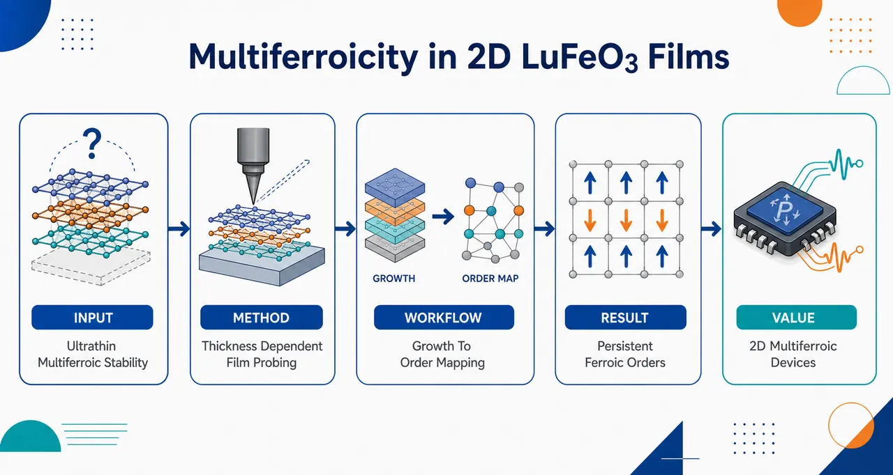
研究问题六方 LuFeO3 薄膜在厚度逼近二维极限时，是否仍能同时保持铁电极化与磁有序；核心挑战是超薄尺度下结构畸变、界面效应和热涨落可能削弱甚至破坏多铁性。创新方法将六方 LuFeO3 制备成接近二维极限的外延薄膜，并通过厚度依赖的结构、铁电和磁性表征直接检验多铁序参量是否随薄膜减薄而保留；Aha 点在于把传统体相/厚膜多铁材料推进到原子级薄膜尺度验证其可持续存在。工作流程制备不同厚度的六方 LuFeO3 外延薄膜 → 确认六方晶相与极性结构畸变 → 测量铁电响应和畴结构 → 检测磁有序信号及其温度变化 → 比较厚膜与超薄膜中的多铁序参量强度，判断二维极限下的多铁稳定性。关键结果实验表明六方 LuFeO3 薄膜在接近二维极限时仍可维持铁电性与磁有序，多铁行为未因厚度显著降低而完全消失，说明其极性晶格畸变和磁相互作用在超薄薄膜中具有较强稳定性。应用价值证明二维尺度多铁氧化物薄膜可行，为超薄铁电-磁耦合器件、低功耗自旋电子学、可电控磁存储和原子级多功能异质结构提供材料基础。核心概览
该论文研究六方 LuFeO₃ 薄膜在接近二维极限时的铁电性与磁有序，属于二维/超薄氧化物多铁性与薄膜功能材料方向，重点检验低厚度下多铁序参量是否仍能保持。
方法要点
- 研究对象是六方相 LuFeO₃ 薄膜，关注其在接近二维极限的低厚度状态。
- 核心物性包括铁电有序与磁有序，即多铁序参量。
- 研究目的在于实验检验超薄化是否会削弱或破坏多铁性。
- 摘要未详述具体薄膜制备方法、厚度范围、表征手段或测量条件。
关键结果
- 论文关注并验证了六方 LuFeO₃ 薄膜在低厚度下的铁电与磁有序行为。
- 摘要表明该工作针对“低厚度下多铁序参量易被削弱”的问题进行了实验检验。
- 摘要未明确给出铁电性或磁有序是否完全保持、转变温度、临界厚度、极化强度、磁矩等具体结果。
- 摘要未详述是否观察到铁电与磁性的耦合效应。
创新性判断
- 可能的新颖点在于将六方 LuFeO₃ 的多铁性研究推进到接近二维极限，检验超薄尺度下铁电和磁有序能否共存。
- 相比常规厚膜或块体多铁材料研究，该工作可能更强调尺寸效应对多铁序参量稳定性的影响。
- 若实验证明接近二维极限仍存在多铁性，则对二维多铁材料和器件小型化具有潜在意义；但摘要未详述具体证据和性能指标，因此该判断存在不确定性。
-
10
📊 含图深析
💡 亮点：HfO2/ZrO2器件实现20 ps读出与1 ns写入。
📖 展开分析 + 配图
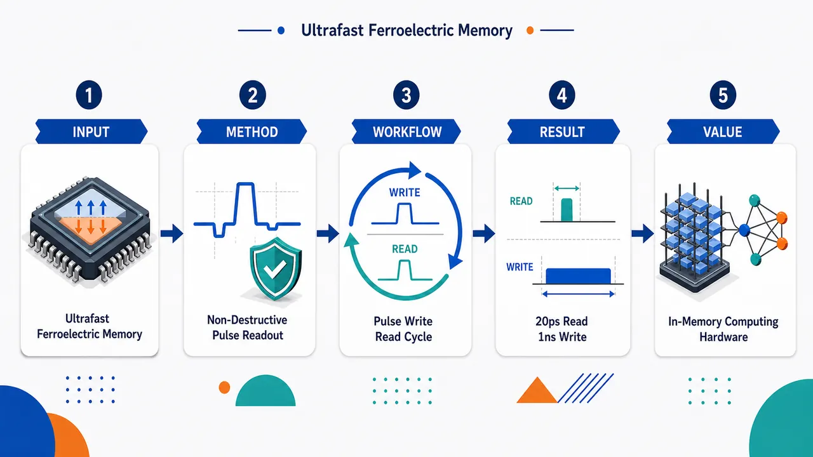
研究问题如何在 HfO2/ZrO2 铁电非易失存储器中，同时实现超高速、低电压、非破坏性读出与纳秒级写入，以满足铁电电容模拟存内计算对速度、能耗和可靠性的需求。创新方法利用 HfO2/ZrO2 铁电电容的可翻转极化状态作为存储单元，在低于 5 V 的驱动电压下实现 20 ps 非破坏读出和 1 ns 写入；核心亮点是读操作无需翻转铁电极化即可感知存储状态，避免传统破坏性读出后的重写开销。工作流程输入低电压电脉冲 → 铁电 HfO2/ZrO2 薄膜电容极化被设定为不同非易失状态 → 写入阶段用约 1 ns 脉冲快速切换极化 → 读出阶段用约 20 ps 超短脉冲检测电容/极化响应 → 输出可用于模拟存内计算的稳定存储状态信号。关键结果在低于 5 V 的工作电压下，实现了约 20 ps 的非破坏性读出和约 1 ns 的写入操作，表明 HfO2/ZrO2 铁电非易失存储具有皮秒级读取、纳秒级写入和低电压运行能力。应用价值为基于铁电电容的模拟存内计算提供高速、低功耗、非易失的存储器件基础，可减少数据搬移和读后重写能耗，适合未来高能效 AI 硬件、边缘计算和类脑计算存储阵列。核心概览
本文属于铁电 HfO₂/ZrO₂ 非易失存储与模拟存内计算方向，展示了在低于 5 V 条件下实现 20 ps 非破坏读出和 1 ns 写入的铁电电容存储操作。
方法要点
- 研究对象为基于 HfO₂/ZrO₂ 的铁电非易失存储器件。
- 存储单元面向基于铁电电容的模拟存内计算应用。
- 实现并评估了非破坏性读出操作，读出时间达到 20 ps。
- 实现并评估了写入操作，写入时间达到 1 ns。
- 操作电压低于 5 V；具体器件结构、脉冲方案、测试平台与材料堆栈细节摘要未详述。
关键结果
- 在 HfO₂/ZrO₂ 铁电非易失存储中实现了 20 ps 非破坏读出。
- 实现了 1 ns 写入操作。
- 上述读写操作均在低于 5 V 的电压条件下完成。
- 该结果面向铁电电容型模拟存内计算应用。
- 摘要未详述耐久性、保持特性、阵列规模、模拟权重精度、能耗或统计分布等结果。
创新性判断
- 可能的新颖点在于将 HfO₂/ZrO₂ 铁电存储的读出速度推进到皮秒级，并且保持非破坏性读出；这一点对铁电电容型存内计算较有吸引力。
- 1 ns 写入且电压低于 5 V 也可能体现出高速、低电压操作优势。
- 若相较传统铁电存储需要较高电压、较慢写入或破坏性读出，该工作可能在速度与读出方式上具有突破性。
- 但由于摘要极短，未给出对比基准、器件尺寸、测试条件、可靠性和能耗数据，因此其相对同方向工作的实际领先程度仍不确定。
-
11
📊 含图深析
💡 亮点：重费米子铁磁体呈巨反常霍尔和能斯特响应。
📖 展开分析 + 配图
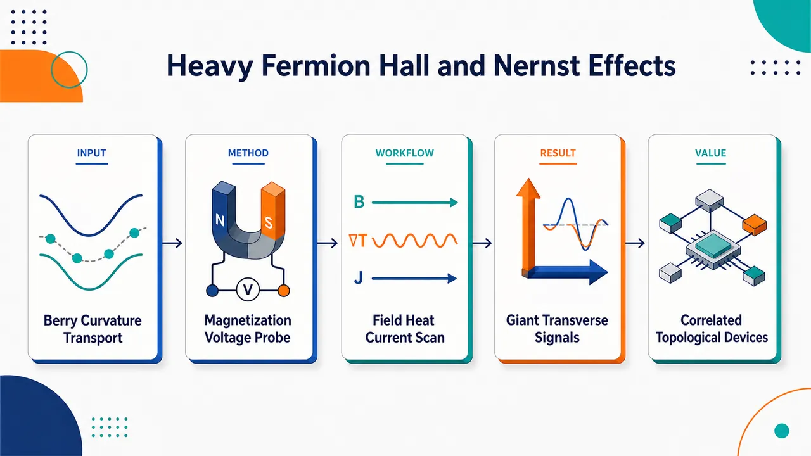
研究问题重费米子铁磁体中，强电子关联与铁磁磁化如何放大由贝里曲率驱动的横向输运响应，形成巨大的反常霍尔效应和反常能斯特效应。创新方法以磁化诱导的横向电压作为可视化探针，同时追踪电场驱动的反常霍尔信号与温度梯度驱动的反常能斯特信号，将宏观输运异常直接关联到动量空间中的贝里曲率热点。工作流程制备重费米子铁磁体样品，施加磁场、温度梯度或电流，测量横向电压响应，分离普通与反常输运成分，对比磁化曲线，提取反常霍尔电导与反常能斯特系数，判断贝里曲率主导的输运机制。关键结果实验观察到异常巨大的反常霍尔与反常能斯特响应，横向电压随磁化显著增强，表明重费米子能带中的强关联效应可产生强贝里曲率并显著放大拓扑输运信号。应用价值为利用重费米子磁性材料实现高灵敏横向电信号探测、热电转换和贝里曲率工程提供材料平台，也为设计强关联拓扑电子器件提供依据。核心概览
该论文研究重费米子铁磁体中的巨反常霍尔与反常能斯特效应，方向属强关联拓扑输运/贝里曲率物理。
方法要点
- 以重费米子铁磁体为研究对象，关注其磁化诱导的横向电压响应。
- 通过反常霍尔效应与反常能斯特效应表征横向电输运与热电输运。
- 将横向输运响应用于追踪与贝里曲率相关的物理机制。
- 摘要未详述具体样品体系、测量温区、磁场范围、数据分析方法或理论模型。
关键结果
- 在重费米子铁磁体中观察/研究到“巨”反常霍尔效应与反常能斯特效应。
- 论文将这些横向响应与磁化诱导效应及贝里曲率相关输运联系起来。
- 摘要未详述效应的具体大小、温度依赖、材料名称、对比基准或定量结论。
创新性判断
- 可能的新颖点在于：将巨反常霍尔效应和巨反常能斯特效应同时放在重费米子铁磁体中研究，并用其追踪贝里曲率相关输运。
- 相比常规铁磁金属或弱关联体系，重费米子体系具有强电子关联和大有效质量，若其中出现显著贝里曲率输运响应，可能具有较强物理意义。
- 但由于摘要信息极少，无法确定其相对已有工作的具体突破，例如是否为首次发现、是否刷新量级纪录、是否提出新机制；这些均摘要未详述。
-
12
📊 含图深析
💡 亮点：磁场可调控交替磁的自旋劈裂磁振子输运。
📖 展开分析 + 配图
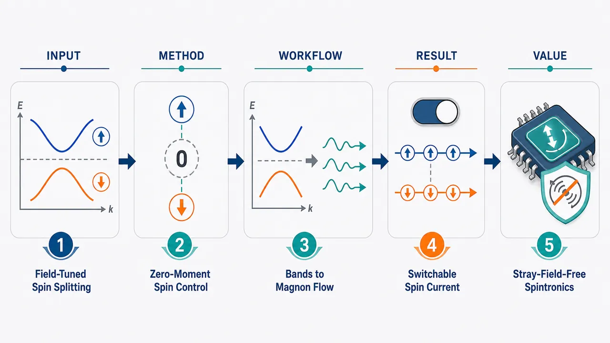
研究问题在总净磁化为零的交替磁体与完全补偿亚铁磁体中，外加磁场如何改变电子能带和磁振子能带的自旋劈裂，并进一步影响由热激发产生的磁振子自旋流。创新方法抓住“零净磁化但仍可自旋劈裂”的反常磁性特征，将外磁场作为可调旋钮，同时考察电子自旋劈裂能带、磁振子自旋劈裂谱和热驱动自旋输运之间的耦合关系，揭示补偿磁体中无需宏观磁化也能调控自旋流的机制。工作流程以交替磁体和补偿亚铁磁体模型为输入，引入外加磁场；计算电子自旋劈裂能带与磁振子能带变化；分析热梯度下不同自旋磁振子的占据与传播；输出磁振子自旋流的方向、强度及其随磁场变化的规律。关键结果理论表明，即使体系净磁化为零，外磁场仍能显著调节自旋劈裂的电子带和磁振子带；热激发磁振子可携带可控自旋流，且自旋流强度和符号可通过磁场调节，在交替磁体与补偿亚铁磁体中呈现相似但具有材料特征的响应。应用价值为无杂散场、抗磁扰、可磁场调控的自旋电子器件提供理论基础，可用于设计基于交替磁体或补偿亚铁磁体的低功耗磁振子自旋流源、热自旋转换器和下一代无净磁化自旋输运器件。核心概览
本文属自旋电子学/磁振子输运理论研究，探讨交替磁体与完全补偿亚铁磁体在无净磁化条件下的磁场效应，重点关注电子与磁振子自旋劈裂及热激发磁振子自旋流。
方法要点
- 采用理论研究框架分析交替磁体与完全补偿亚铁磁体中的磁场效应。
- 研究对象包括电子能带与磁振子能带的自旋劈裂。
- 关注无净磁化条件下仍可能存在的自旋相关能带/输运现象。
- 分析热激发磁振子产生的自旋流，即磁振子自旋输运。
- 具体模型、哈密顿量、计算方法或近似条件摘要未详述。
关键结果
- 摘要明确指出论文研究了交替磁体和完全补偿亚铁磁体中的磁场效应。
- 摘要明确关注无净磁化条件下的电子带和磁振子带自旋劈裂。
- 摘要明确关注热激发磁振子自旋流。
- 具体定量结果、磁场如何改变能带/磁振子带、以及自旋流方向或大小等摘要未详述。
创新性判断
- 可能的新颖点在于将交替磁体与“涌现的完全补偿亚铁磁体”并置研究，比较其在无净磁化条件下的自旋劈裂与磁振子输运行为；但具体比较框架摘要未详述。
- 论文可能强调即使体系总磁化补偿为零，磁场仍可影响电子/磁振子自旋劈裂及热磁振子自旋流，这相对传统铁磁体输运研究具有一定新意；但具体机制摘要未详述。
- 若文中建立了统一理论描述磁场、交替磁性、补偿亚铁磁性与磁振子自旋流之间的关系，这可能是主要创新点；该判断基于题目和摘要，仍存在不确定性。
-
13
📊 含图深析
💡 亮点：磁光实验揭示 LaFeO3 薄膜类单晶反铁磁开关。
📖 展开分析 + 配图
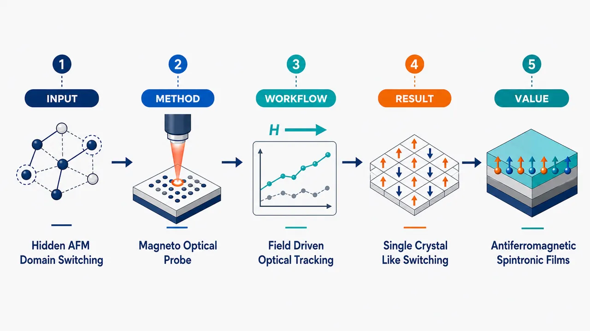
研究问题应变外延反铁磁 LaFeO3 薄膜的磁畴翻转行为长期因反铁磁信号弱、传统磁测量不敏感而难以直接确认；核心问题是：薄膜中的磁翻转是否能像单晶一样发生清晰、可辨认的取向切换。创新方法使用磁光测量直接捕捉外延 LaFeO3 薄膜中的弱反铁磁相关信号，将原本难以分辨的磁畴变化转化为可观测的光学响应，从而获得“类似单晶磁翻转”的可视化证据。工作流程制备应变外延 LaFeO3 反铁磁薄膜 → 施加外部磁场诱导磁畴取向变化 → 进行磁光信号测量 → 追踪信号随磁场的翻转特征 → 判断薄膜磁畴是否呈现单晶式一致切换。关键结果磁光响应显示 LaFeO3 外延薄膜存在明确的磁翻转特征，其行为接近单晶材料的有序切换，说明应变外延薄膜中的反铁磁畴并非完全无序，而具有可解析、可控制的取向转换。应用价值为研究弱信号反铁磁薄膜提供了有效表征路径，有助于理解外延应变对反铁磁畴结构和磁翻转的调控，为反铁磁自旋电子器件、低串扰磁存储和超快磁控材料设计提供实验依据。核心概览
该论文属于反铁磁氧化物薄膜自旋/畴行为与磁光表征方向。作者利用磁光测量研究应变外延 LaFeO₃ 薄膜，提出其磁翻转表现出类似单晶的特征，并用于解析此前难以确定的磁畴行为。
方法要点
- 采用磁光测量手段探测 LaFeO₃ 薄膜中的磁翻转行为。
- 研究对象为应变外延生长的反铁磁 LaFeO₃ 薄膜。
- 通过磁光信号分析薄膜的畴行为；具体测量配置、磁场方向、温度条件等摘要未详述。
- 关注此前因磁光或磁信号较弱而难以明确判定的磁畴演化问题。
关键结果
- 获得了 LaFeO₃ 薄膜中“类似单晶”的磁翻转证据。
- 表明应变外延 LaFeO₃ 薄膜的磁切换行为可具有接近单晶材料的有序性或可解析性。
- 对该体系中此前难以确定的畴行为进行了分析或阐明。
- 具体翻转场、畴结构类型、各向异性参数或定量磁光信号强度等摘要未详述。
创新性判断
- 可能的新颖点在于：将磁光测量用于弱信号的外延反铁磁 LaFeO₃ 薄膜，并获得足以支持“单晶样磁翻转”的证据。
- 相比常规薄膜研究，该工作可能强调外延应变使薄膜表现出更接近单晶的磁畴/磁翻转行为；但摘要未说明与具体对照样品或已有工作的差异。
- 其价值可能在于为反铁磁氧化物薄膜的畴行为提供了直接或更清晰的磁光证据；该判断基于摘要表述，具体创新强度需全文验证。
-
14
📊 含图深析
💡 亮点：可移动畴壁充当非易失自旋波相移器。
📖 展开分析 + 配图
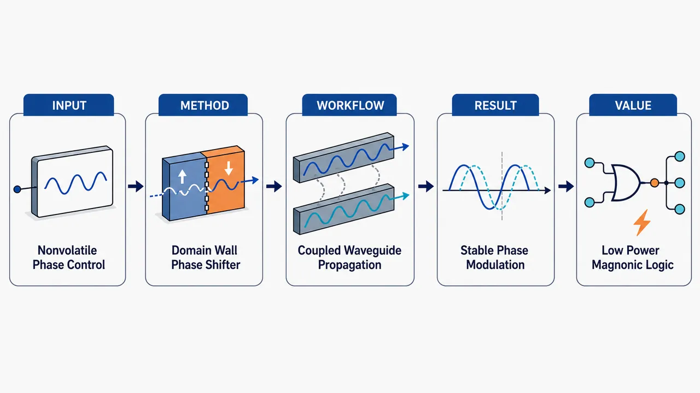
研究问题如何在自旋波逻辑器件中实现无需持续供电、可保持状态的相位调制：让传播中的自旋波获得可控相位差，用于表示和处理信息。创新方法提出一种由磁畴壁位置控制的自旋波相位移器：在两条近距离平行磁波导之间引入偶极耦合，移动或固定磁畴壁位置即可改变局部磁化构型，从而调制自旋波传播相位；Aha 点是“畴壁位置”本身成为非易失相位开关。工作流程输入自旋波沿磁波导传播；相邻波导之间发生偶极场耦合；磁畴壁所在区域改变局部磁化方向和有效场分布；自旋波通过该耦合区域后累积不同传播相位；输出带有可编程相位偏移的自旋波信号。关键结果磁畴壁的位置能够有效控制自旋波相位变化；近邻波导的偶极耦合为相位调制提供主要物理机制；相位状态可由畴壁稳定保存，支持非易失调控而不依赖持续能量输入。应用价值为低功耗、可重构、非易失的磁振子计算提供基础器件，可用于自旋波逻辑门、相位编码信息处理、片上可编程波基计算电路。核心概览
本文提出一种面向非易失磁振子计算的自旋波相位调制器，通过磁畴壁位置控制两条近邻磁波导间的偶极耦合，从而调制自旋波传播相位，属于磁振子学/自旋波逻辑器件方向。
方法要点
- 设计一种由磁畴壁位置调控的自旋波相位移器。
- 利用两条相邻波导之间的偶极耦合影响自旋波传播特性。
- 通过改变磁畴壁位置实现对自旋波相位的非易失调制。
- 应用目标是自旋波逻辑与磁振子信息处理。
关键结果
- 摘要明确指出：该结构可利用磁畴壁位置控制自旋波相位。
- 摘要明确指出：相位调制机制来源于近邻波导之间的偶极耦合。
- 摘要明确指出：该方案面向非易失自旋波逻辑和信息处理。
- 具体相移范围、工作频率、损耗、器件尺寸、仿真或实验验证方式等摘要未详述。
创新性判断
- 可能的新颖点在于将“磁畴壁位置”作为可存储的控制变量，用于实现非易失自旋波相位调制。
- 相比常见依赖外加磁场、电流或电压实时调控的相位器件，该方案可能强调状态保持能力和低静态功耗；但摘要未给出对比实验或能耗数据，需谨慎判断。
- 利用两条偶极耦合波导实现相位调控可能是其结构层面的特色，但是否优于已有耦合波导或畴壁调控方案，摘要未详述。
-
15
📊 含图深析
💡 亮点：交替磁被用于设计更抗噪的超导量子比特。
📖 展开分析 + 配图
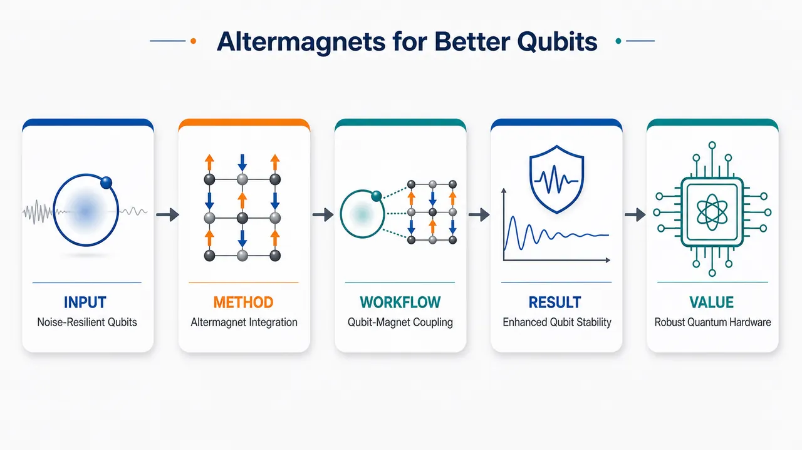
研究问题超导量子比特需要在“可调控性”和“抗环境噪声”之间取得平衡：传统设计容易受磁噪声、材料缺陷和外界扰动影响，限制相干时间与稳定运行。核心问题是：能否通过引入交替磁材料，构建更稳健、更可调的超导量子比特平台。创新方法将交替磁材料集成到超导量子比特结构中，利用其“无净磁化但具有自旋分裂”的特殊磁性特征，在不引入强杂散磁场的情况下提供可控自旋相关效应；Aha 点是用交替磁体替代传统磁性调控源，让量子比特同时获得磁性可调性与低噪声优势。工作流程从超导量子比特设计出发，引入交替磁层或交替磁界面；分析交替磁有序态与超导态的耦合方式；评估其对能级结构、频率调谐、噪声敏感性和相干性能的影响；最终得到一种兼具可调控、低杂散场和抗环境扰动能力的新型量子比特设计框架。关键结果理论分析表明，交替磁体可在保持低净磁场干扰的同时增强量子比特可调性，并有望降低环境磁噪声带来的退相干风险；集成该材料后，超导量子比特设计可表现出更高稳定性、更强噪声鲁棒性和更灵活的参数控制能力。应用价值该研究为高相干、可扩展量子计算硬件提供新的材料路线，可用于设计更抗噪声的超导量子比特、提升量子处理器稳定性，并推动交替磁材料在量子信息器件中的实际应用。核心概览
该论文属超导量子比特与新型磁性材料交叉方向，理论探讨将交替磁材料集成进超导量子比特，以提升可调性与抗噪声稳健性。
方法要点
- 采用理论探索/概念设计方式研究交替磁材料与超导量子比特的集成。
- 关注交替磁材料可能带来的量子比特参数可调性。
- 评估其对环境噪声鲁棒性的潜在提升。
- 目标导向是寻找更稳健的量子计算材料平台。
- 摘要未详述具体模型、哈密顿量、器件结构、仿真方法或实验方案。
关键结果
- 摘要明确指出：将交替磁材料引入超导量子比特设计被认为有望兼顾可调性与抗环境噪声能力。
- 论文目标是探索更稳健的量子计算材料平台。
- 摘要未详述具体性能提升幅度、退相干时间、门保真度、噪声谱或对照基准。
- 摘要未说明是否已有实验验证；从表述看主要为理论探索。
创新性判断
- 可能的新颖点在于把“交替磁材料”作为功能材料引入超导量子比特设计，用于同时追求可调性和噪声鲁棒性。
- 相比常规超导量子比特材料体系，该工作可能强调利用交替磁体的特殊磁序或自旋相关性质来优化量子比特性能；但摘要未详述具体物理机制，因此该判断具有不确定性。
- 若同方向已有铁磁、反铁磁或自旋材料耦合超导量子比特的研究，本工作的差异可能在于选择交替磁体这一新兴磁性平台；但摘要未提供文献对比，无法确定其相对领先程度。
-
16
📊 含图深析
💡 亮点：滑移铁电性可调莫尔手性电子非线性。
📖 展开分析 + 配图
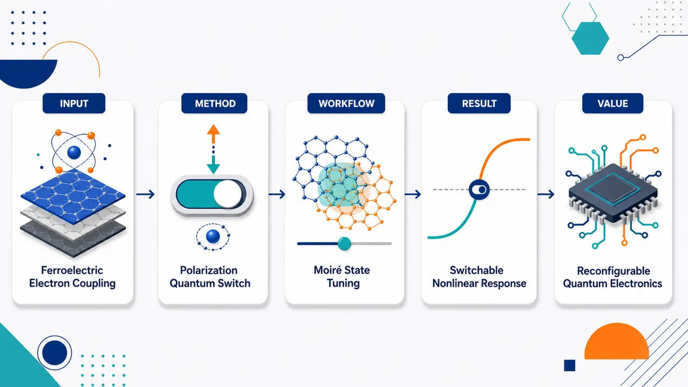
研究问题在范德华莫尔体系中，滑移铁电序如何与具有手性特征的 Bloch 电子发生耦合，并进一步改变电子的量子非线性响应与热力学行为。创新方法利用莫尔体系中的滑移铁电态作为可翻转的内部调控旋钮，通过改变层间相对位移与极化方向，直接调制手性 Bloch 电子的量子几何与非线性输运响应，实现“铁电开关控制量子非线性”的核心机制。工作流程构建具有滑移铁电性的范德华莫尔结构；切换不同铁电极化态；观测或计算手性 Bloch 电子的能带、量子几何与非线性响应；比较不同铁电态下的响应强度、符号和热力学特征；建立铁电态与量子非线性之间的对应关系。关键结果铁电极化态能够显著调控手性 Bloch 电子的非线性量子响应，使非线性信号在不同铁电构型下发生增强、减弱或符号翻转；同时，电子热力学行为也随铁电态变化，证明莫尔铁电序与量子电子结构存在强耦合。应用价值为可重构量子电子器件提供新的控制方式，可用于铁电可写入的非线性电子学、低功耗量子开关、可调谐莫尔材料平台以及基于量子几何效应的新型功能器件设计。核心概览
该论文研究范德华莫尔体系中滑移铁电态与手性 Bloch 电子量子非线性响应的耦合及其热力学行为，属莫尔量子材料/铁电调控电子输运方向。
方法要点
- 研究对象是具有范德华莫尔结构的体系，摘要未详述具体材料体系。
- 关注“滑移铁电”自由度与手性 Bloch 电子量子效应之间的耦合。
- 探讨铁电态对非线性响应的调控作用。
- 涉及相关热力学行为分析，但摘要未详述所用测量、理论模型或计算方法。
关键结果
- 铁电态能够调控体系中的量子非线性响应。
- 该调控与手性 Bloch 电子的量子效应相关。
- 论文还讨论了该耦合体系的热力学行为。
- 摘要未给出具体非线性响应类型、调控幅度、温度范围或实验数值。
创新性判断
- 可能的新颖点在于把滑移铁电性与手性 Bloch 电子的量子非线性效应联系起来，提出或展示铁电态作为可切换调控手段。
- 相比常规莫尔体系电子输运研究，该工作可能强调“铁电可调”的量子非线性响应，这在功能化量子材料中具有潜在新意。
- 其创新程度、是否为首次实验展示或理论预测，摘要未详述，无法进一步确定。
-
17
📊 含图深析
💡 亮点：x=0.1 Ga替代改变 Eu(Al,Ga)4 的CDW与自旋织构。
📖 展开分析 + 配图
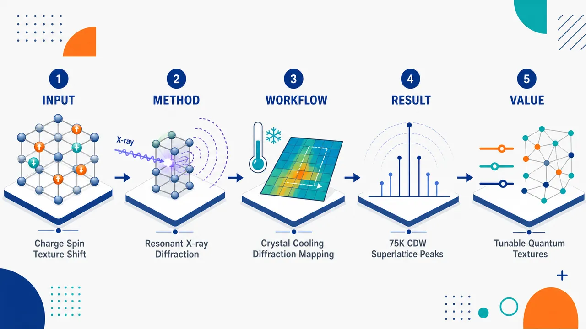
研究问题轻微 Ga 化学替代后，Eu(Al₁₋ₓGaₓ)₄（x=0.1）中的电荷密度波与自旋有序如何被重塑；核心是分辨 Ga 掺杂对电荷纹理传播矢量、出现温度及其与磁性纹理耦合关系的影响。创新方法利用共振 X 射线衍射同时追踪电荷与自旋散射信号，把弱 Ga 替代引起的微小结构调制转化为可见的衍射峰图谱；Aha 点在于用元素/共振敏感的衍射方式直接区分 CDW 电荷纹理和 Eu 自旋纹理。工作流程制备 Eu(Al₀.₉Ga₀.₁)₄ 单晶样品 → 在不同温度下进行共振 X 射线衍射扫描 → 记录超晶格衍射峰和磁性衍射峰 → 提取传播矢量与温度依赖强度 → 判定约 75 K 以下出现特定传播矢量的 CDW，并分析其与自旋纹理的关系。关键结果在约 75 K 以下观测到清晰的电荷密度波信号，表现为具有特定传播矢量的超晶格峰；说明仅 10% Ga 替代即可显著调节 Eu(Al,Ga)₄ 中的电荷纹理，并为电荷序与自旋序之间的耦合提供实验证据。应用价值证明轻元素化学替代可作为精细调控量子材料中电荷密度波和磁性纹理的有效旋钮，有助于设计可调控的关联电子材料、磁电耦合体系和基于电荷—自旋有序的功能器件。核心概览
本文研究轻度 Ga 替代的 Eu(Al₁₋ₓGaₓ)₄（x=0.1）中电荷与自旋纹理的变化，属于强关联/磁性材料中的电荷密度波（CDW）与磁结构表征方向。
方法要点
- 采用共振 X 射线衍射研究 Eu(Al₁₋ₓGaₓ)₄（x=0.1）。
- 通过该技术区分或分辨材料中的电荷纹理与自旋纹理。
- 关注轻度化学替代，即 Al 位点 10% Ga 替代，对有序态的影响。
- 摘要提到 CDW 具有特定传播矢量，但具体矢量数值摘要未详述。
关键结果
- 在 Eu(Al₁₋ₓGaₓ)₄（x=0.1）中观察到电荷密度波（CDW）。
- CDW 约在 75 K 以下出现。
- CDW 具有特定传播矢量，但摘要未给出具体数值。
- 研究实现了对电荷与自旋纹理的分辨；具体自旋纹理特征、转变温度或传播矢量摘要未详述。
创新性判断
- 可能的新颖点在于：针对轻度 Ga 替代的 EuAl₄ 体系，直接比较或揭示化学替代对电荷与自旋纹理的调控作用。
- 使用共振 X 射线衍射同时分辨电荷与自旋相关有序，可能有助于澄清 CDW 与磁性之间的关系。
- 相比未替代或其他掺杂浓度体系，该工作可能强调 x=0.1 轻度替代下 CDW 传播矢量或有序温度的变化；但摘要未提供对照样品、具体变化幅度或机制，因此该判断具有不确定性。
-
18
💡 亮点：非线性光磁响应可作为 d 波交替磁指纹。
📖 展开分析 + 配图
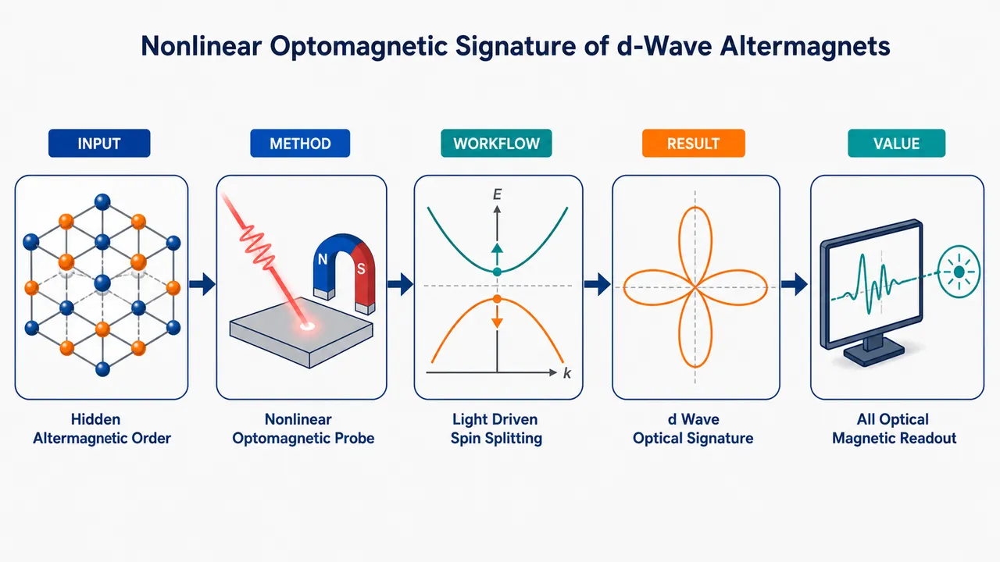
研究问题如何在净磁化为零、但电子能带存在自旋劈裂的 d 波交替磁体中，用光学手段识别其隐藏的交替磁序，并将其与普通反铁磁或铁磁响应区分开来。创新方法提出“非线性光磁响应”作为 d 波交替磁的专属光学指纹：利用光照诱导的二阶磁化/磁光信号，把动量空间中呈 d 波对称分布的自旋劈裂转化为可测量的宏观光磁特征。工作流程输入 d 波交替磁材料的零净磁化自旋劈裂能带；施加特定偏振与频率的光场；计算非线性光诱导磁化或磁光响应；分析响应随晶体方向、光偏振和交替磁序方向的变化；输出可用于判别交替磁序的光学信号图样。关键结果发现 d 波交替磁虽然没有净磁矩，却能产生与其 d 波自旋纹理一致的非线性光磁信号；该信号具有明确的方向性和对称性选择规则，可作为区别 d 波交替磁、普通反铁磁和铁磁的实验标志。应用价值为无净磁化磁性材料提供非接触、全光学的磁序探测方案，有助于交替磁材料的实验鉴定，并推动低杂散场、自旋分裂可控的自旋电子学与超快光控磁性器件发展。核心概览
本文研究净磁化为零但存在能带自旋劈裂的 d 波交替磁体中的非线性光磁响应，旨在提出可用于识别交替磁序的光学特征，属于交替磁性与非线性光学/光磁响应方向。
方法要点
- 研究对象是 d 波交替磁体，其特征是零净磁化但具有自旋劈裂能带。
- 聚焦非线性光磁响应，即光场诱导或调制磁性相关响应的非线性效应。
- 目标是寻找能够区分交替磁序的光学信号或“光磁签名”。
- 摘要未详述具体理论模型、计算方法、对称性分析框架或实验方案。
关键结果
- 论文提出了可区分交替磁序的非线性光磁光学特征。
- 该响应与 d 波交替磁的特殊性质相关：无净磁化但能带存在自旋劈裂。
- 摘要未详述响应的具体形式、选择定则、频率依赖、材料参数或定量结果。
创新性判断
- 可能的新颖点在于将“非线性光磁响应”作为识别 d 波交替磁序的诊断手段，而不依赖净磁化信号。
- 相比传统铁磁或反铁磁光学探测，这类响应可能利用交替磁特有的自旋劈裂与 d 波对称性来产生可区分信号；但摘要未详述对比对象和具体机制，因此这一判断具有不确定性。
- 若论文确实给出可观测的非线性光学特征，则其意义可能在于为零净磁化交替磁的实验识别提供新的光学途径；具体可行性摘要未详述。
-
19
💡 亮点：层间自掺杂被提出用于构造多铁体。
📖 展开分析 + 配图
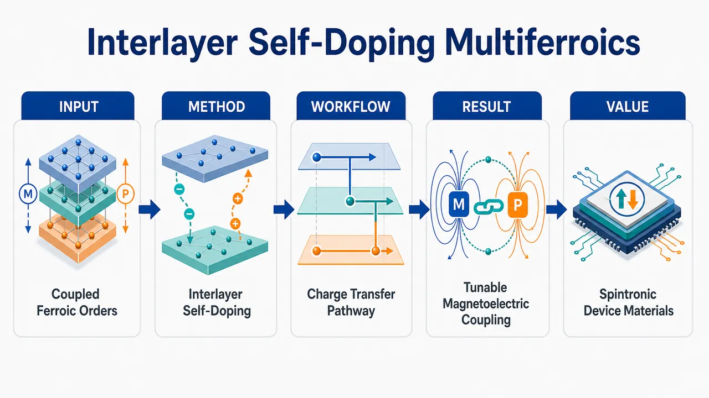
研究问题如何在同一种材料中同时实现并强耦合铁电有序与磁有序，突破传统多铁材料中电性与磁性难以共存、相互调控弱的限制。创新方法提出“层间自掺杂”多铁设计策略：利用材料内部不同层之间的自发电荷转移，在无需外部化学掺杂的情况下调控载流子浓度与磁性，使铁电极化与磁有序在层状结构中相互耦合。工作流程构建层状候选材料 → 诱导层间电荷转移 → 形成内建自掺杂载流子分布 → 调节局域磁矩与磁有序 → 与铁电极化耦合 → 得到可用于电子/自旋电子器件的多铁功能材料。关键结果层间电荷转移可作为有效调控旋钮，同时影响电子载流子与磁性状态，实现同一材料内铁电性和磁有序的协同存在，为可控多铁行为提供新的材料设计路径。应用价值为新型多铁材料、低功耗电子器件、非易失存储、自旋电子器件和电场调控磁性的功能器件提供候选材料与设计原则。核心概览
该论文提出一种“层间自掺杂”多铁材料设计策略，通过同一材料内的层间电荷转移来耦合铁电性与磁有序，面向电子与自旋电子器件候选材料设计方向。
方法要点
- 提出以“层间自掺杂”为核心的多铁材料设计思路。
- 利用层间电荷转移调控材料中的载流子分布。
- 通过载流子调控进一步影响或耦合磁性有序。
- 目标是在同一材料体系内实现铁电性与磁有序的耦合。
- 具体材料体系、计算或实验方法、表征手段摘要未详述。
关键结果
- 摘要明确指出该策略可在同一材料中耦合铁电与磁有序。
- 层间电荷转移被用于调控载流子与磁性。
- 该类材料被提出为电子器件和自旋电子器件的候选。
- 是否已实现具体材料验证、耦合强度、居里温度/奈尔温度、极化大小等关键指标，摘要未详述。
创新性判断
- 可能的新颖点在于将“层间自掺杂”作为多铁材料设计机制，而非依赖传统外部化学掺杂或单纯结构调控。
- 其潜在优势可能是通过材料内部层间电荷转移实现载流子、磁性与铁电性的协同调控，但具体优越性摘要未给出，仍不确定。
- 若该策略能在单一材料中稳定耦合铁电和磁有序，则相对常见异质结构或外场调控方案具有一定材料设计上的新意；但是否已有实验证实，摘要未详述。
-
20
💡 亮点：GFFMERGE 通过合并减少GNN力场重训成本。
📖 展开分析 + 配图
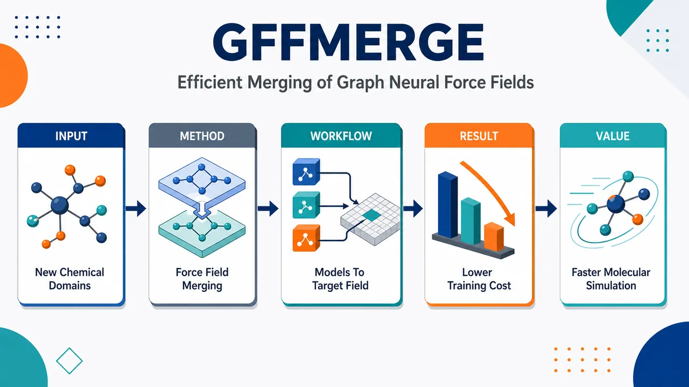
研究问题如何在面对新的化学体系时，不从零训练大型图神经网络力场，而是把已有的多个力场模型高效合并，快速获得适配新体系的稳定模型。创新方法提出 GFFMERGE：将多个已训练的图神经网络力场作为可复用模块，通过模型合并整合不同化学体系中的势能、力和结构表征能力，形成面向目标体系的新力场；核心亮点是“合并已有力场”替代“从基础力场重新训练”。工作流程输入多个已有图神经网络力场和目标新化学体系数据；对模型参数或表征空间进行对齐与融合；生成合并后的候选力场；在目标体系上进行少量适配或验证；输出可用于能量与原子力预测的新图神经网络力场。关键结果GFFMERGE 能显著降低适配新化学体系的训练成本与计算开销，在保留已有模型知识的同时提升新体系上的力场构建效率，减少对大规模重新训练数据和算力的依赖。应用价值可加速分子模拟、材料发现和化学反应建模中的力场开发，使研究者能够复用已有模型资产，快速扩展到新分子、新材料或复杂化学环境。第一部分：核心概览 (Overview)
GffMerge 提出首个面向 GNN neural force fields 的闭式模型合并框架，把力场合并转化为 node embedding alignment 与线性块最小二乘问题，在不进行完整联合训练的情况下整合多个专门微调模型。相较视觉/语言模型合并方法，GffMerge 针对连续能量—力回归的数值稳定性难题，显著降低灾难性退化，在 MD17、MD22、LiPS20 与通用图任务中接近 joint fine-tuning，并获得 5–27×、通用 GNN 上最高 1000× 加速，确立了 GNN 力场模型合并的基准与方法起点。
---
第二部分：结构化快速回顾
《GFFMERGE: Efficient Merging of Graph Neural Force Fields and Beyond》（None，）
背景
GNN force fields 已成为原子模拟核心工具，可在较低成本下接近量子精度；但大型基础力场模型针对新分子或材料体系的微调代价高昂。已有模型合并方法主要服务视觉与语言模型，难以处理 continuous regression、energy-force coupling 与分子动力学长期稳定性。
方法
GffMerge 利用消息传递层中的线性结构，把合并问题表述为 convex embedding-alignment problem。通过校准数据收集源模型中间节点嵌入与线性块输出，采用闭式最小二乘解合并权重；随后仅对后期 interaction layers 与 force/energy heads 进行轻量 targeted fine-tuning。
结果
在 MD17、MD22、LiPS20 上，Weight Averaging、Fisher、TIES、EMR 出现严重误差放大；GffMerge 在 M3GNet 与 Orb 上大幅优于这些基线，性能接近 Joint FT。M3GNet 中 GffMerge 获得 5.51×–27.81× 加速；Orb 中获得 5.12×–7.19× 加速。
讨论
核心机制并非简单参数平均，而是保持各源模型在其领域内的 intermediate atom embeddings。由于能量与力是节点嵌入和几何结构的确定性函数，嵌入对齐可间接保持物理预测。分层独立合并牺牲端到端严格性，换取闭式可解与并行效率。
局限
闭式解主要覆盖 linear or affine transformations，非线性层、归一化层、架构特定模块仍需轻量微调修正。合并假设源模型共享架构和共同初始化；跨架构、无域标签推理、长期真实 MD 稳定性边界仍未充分展开。
结论
GffMerge 将 GNN 力场模型合并从启发式参数操作推进到解析优化框架；闭式合并本身已优于现有基线，并可作为高质量初始化，以远低于 joint fine-tuning 的计算成本恢复接近联合训练的精度。
---
第三部分：逐章节冷凝解析 (Section-by-Section Condensing)
Abstract
First principled closed-form merging framework for GNN force fields
GffMerge 被定位为首个针对 GNN force fields 及更一般 GNNs 的闭式模型合并框架，核心不是参数平均，而是利用消息传递层的线性结构进行解析合并。摘要明确表述为 *"we introduce GffMerge, the first principled framework for closed-form model merging in Gnn force fields, and Gnn s in general."*
Embedding alignment as a convex analytical problem
合并目标被表述为 convex embedding-alignment problem，通过对齐源模型和合并模型的嵌入来获得解析解；关键技术基础来自消息传递层中的线性结构：*"We exploit the linear structure of message-passing layers and formulate merging as a convex embedding-alignment problem with an analytical solution."*
Existing vision-language merging methods fail on force regression
针对力场回归任务，已有视觉与语言领域模型合并方法发生严重失效，摘要使用强烈措辞：*"existing methods designed for vision and language catastrophically fail on force field regression"*。这一点奠定了论文的领域定位：force field model merging 不是现有模型合并方法的直接应用。
Near joint-training performance with major speedups
跨 molecular datasets MD17/MD22、solid-state LiPS20 与大规模图基准，GffMerge 与通用版本 GnnMerge 获得 5–27× 加速，同时接近联合训练性能：*"Across molecular (MD17, MD22), solid-state (LiPS20), and large-scale graph benchmarks, GffMerge and GnnMerge ... achieve 5-27× speedups while enabling modular composition of specialized models."*
Closed-form solution alone is already strong
闭式合并本身在 fine-tuning 前即优于所有基线，并提供更好的初始化：*"our closed-form solution alone outperforms all baseline methods before fine-tuning and provides superior initialization for faster, data-efficient convergence."* 这意味着性能提升不完全依赖后续微调，解析合并阶段具有独立贡献。
---
1 Introduction
GNN force fields enable near-quantum atomistic simulation
GNN-based force fields 已成为原子间相互作用建模的重要工具，在可承受计算成本下接近量子精度：*"Graph Neural Network (Gnn) based force fields have become a central tool for modeling interatomic interactions with near-quantum accuracy while remaining computationally tractable."* 应用包括 molecular dynamics、structure relaxation 与 large-scale materials screening。
Atomistic graphs map configurations to energies and forces
力场模型直接作用于 atomistic graphs，学习从原子构型到势能和力的映射：*"By operating directly on atomistic graphs, these models learn mappings from atomic configurations to potential energies and forces."* 这一区别于普通图分类/节点分类任务，输出是连续物理量。
Foundation force fields raise accuracy but increase adaptation cost
大型通用原子系统基础模型如 M3GNet、SevenNet、MACE、Orb 在大规模多样数据上训练，参数规模达数百万，性能覆盖广泛化学空间：*"Models such as M3GNet, SevenNet, MACE and Orb are trained on massive and diverse datasets, comprise millions of parameters, and consistently achieve state-of-the-art performance across broad chemical spaces."*
Repeated fine-tuning is a practical bottleneck
每个新分子体系或材料家族都重新微调基础模型，会带来 GPU 资源、训练时间与消息传递计算成本负担：*"Fine-tuning large Gnn force fields demands substantial GPU resources and extended training times, driven by their million-scale parameter counts and the high computational cost of message passing on atomistic graphs."*
The central practical question is merging specialized force fields
核心问题是：已有分别在系统 X 与 Y 上微调的高质量力场，是否必须在 X∪Y 上重新联合训练？原文问题化表述为 *"Suppose one already has high-quality Gnn force fields fine-tuned separately on molecular systems X and Y. If the goal is to obtain a force field specialized for the combined system X∪Y, must one fine-tune a large foundation model again via joint training on the merged dataset, or can the existing fine-tuned models be merged directly into a single model?"*
Model merging is framed as modular reuse
Model merging 的价值在于把已微调力场作为 modular building blocks，降低训练成本、能耗和部署时间：*"model merging offers the promise of reusing fine-tuned force fields as modular building blocks, enabling scalable specialization while significantly reducing training cost, energy consumption, and time-to-deployment."*
---
1.1 Related works and open challenges for Gnn s.
Prior merging methods rely on averaging, arithmetic, alignment, or lightweight optimization
现有模型合并方法包括 weight averaging、task arithmetic、permutation alignment 与轻量优化：*"These methods typically rely on weight averaging, task arithmetic, permutation alignment, or lightweight optimization to reconcile differences across models."*
Model merging has not been principled for GNNs
虽然视觉与语言模型合并已有成功案例，但未形成适用于 GNNs 的原则性扩展：*"Despite their success in vision and language domains, these techniques have not been extended to Gnn s in a principled manner."*
Force fields differ from classification and next-token prediction
视觉/语言常见任务是离散预测；GNN force fields 是高维构型空间上的连续回归，预测 energies and forces：*"Unlike vision or language models, which are typically trained for discrete prediction tasks such as classification or next-token generation, Gnn force fields operate in a continuous regression regime, predicting energies and forces over high-dimensional atomic configurational spaces."*
Energy-force coupling amplifies representation errors
力与能量通过共享参数或微分紧密耦合，内部表示的微小变化可能被力梯度放大，导致长期分子动力学轨迹误差累积：*"small variation in internal representations can be amplified through force gradients, leading to large errors that compound over long molecular dynamics trajectories."*
Physical desiderata are absent from discrete-domain merging
力场必须保持 locality、smoothness、transferability，而离散任务模型合并目标通常不显式约束这些物理性质：*"force fields must respect locality, smoothness, and transferability across atomic environments, properties that are not explicitly enforced by model merging objectives developed for discrete domains."*
Naive parameter merging is brittle
简单参数合并在力场场景中特别脆弱：*"Consequently, naive parameter merging is particularly brittle in this setting."* 这一判断由后续 M3GNet 与 Orb 的 Weight Averaging、Fisher、TIES、EMR 结果支持。
---
1.2 Contributions
Analytical merging of GNN force fields
主要技术贡献是识别 GNN 力场架构中的 linear parameter blocks，推导闭式合并目标以最小化 activation mismatch：*"We identify linear parameter blocks within widely used Gnn force field architectures and derive a closed-form merging objective that minimizes activation mismatch with respect to the source models."*
No expensive gradient-based merging
闭式合并直接给出解析解，避免昂贵梯度优化：*"eliminating the need for expensive gradient-based optimization."* 这与模型重训练或端到端 joint fine-tuning 的主要区别在于合并阶段不需要完整反向传播。
First benchmark for model merging in GNNs and force fields
贡献包含首个系统 benchmark：*"We present the first benchmarking study for model merging in Gnn s and empirically establish that current state-of-the-art methods are ineffective on Gnn s."*
Sparse fine-tuning closes remaining gap
闭式合并后，仅微调后期 interaction layers 与 force heads 即可接近 joint training：*"sparse fine-tuning of only late interaction layers and force heads is sufficient to close the remaining performance gap."* 报告加速范围为 5× to 28×：*"while achieving 5× to 28× training speedups."*
Generic extension to GCN, GAT, GIN, GraphSAGE
框架可推广到通用 GNN 架构，包括 GAT、GCN、GIN、GraphSAGE：*"The proposed architecture is generic enough to accommodate generic Gnn s such as Gat, Gcn, Gin and GraphSage."*
GnnMerge reaches up to 1000× speedup
通用版本 GnnMerge 在图基准上高于通用模型合并基线，并宣称最高 1000× 加速：*"GnnMerge delivers superior accuracy to generic model merging baselines and achieves up to 1000× speed-up over retraining."* 提供文本未包含第 5 节与对应详细表格，无法核验具体数据集、指标与任务设置。
---
2 Problem Formulation
Atomistic graph formalizes molecular or material systems
原子系统定义为图 𝒢=(𝒱,ℰ,X,r)，其中 𝒱 是原子集合，ℰ 是由距离截断等邻域规则定义的原子间边，X∈R|𝒱|×d 是原子类型等节点属性，r∈R|𝒱|׳ 是笛卡尔坐标。原文定义为 *"Let 𝒢=(𝒱,ℰ,X,r) denote an atomistic graph representing a molecular or material system."*
Force field learning is continuous energy-force regression
训练集写作 ⟨T,Y⟩，标签 Y=E,F，其中 E∈R，F∈R|𝒱|׳。任务不是离散图预测，而是连续回归：*"Unlike discrete graph prediction tasks such as node classification or link prediction, force field learning is a continuous regression problem defined over high-dimensional configuration spaces."*
Training loss combines energy and force errors
力场参数 Θ 最小化加权二范数损失：
L(Y,Θ(G)) = λE ||E−Ê||²₂ + λF ||F−F̂||²₂。原文公式说明为 *"λE, λF balance their relative contributions."*
Forces may be direct outputs or energy gradients
力的产生方式分为两类：直接输出或由能量对坐标求负梯度得到。原文表述为 *"forces are obtained either directly as model outputs ... or implicitly as gradients of the predicted energy with respect to atomic positions."* 后者对应 Fv = −∇rv E(G)。
Merging aims to construct one model matching domain experts
给定 n 个独立训练力场 Θ1,...,Θn，各自在领域 Dt 专门化，目标构造单一模型 ΘM，对 Dunion 中输入匹配对应专家模型预测：*"the goal of model merging is to construct a single force field ΘM. For any input graph G∈Dunion, the predictions of ΘM should closely match those of the expert model Θt corresponding to the domain of G."*
Predictive discrepancy objective uses domain indicator
合并损失写为
Σt I(G∈Dt) · Lt(Θt(G), ΘM(G))，其中 indicator 决定当前图属于哪个专家域。原文解释为 *"I(·) is the indicator function which is 1 if G belongs to the domain Dt and 0 otherwise."*
Effective merging has three desiderata
合并过程需要满足 computational efficiency、model size preservation、physical fidelity。原文列出目标包括 *"substantially faster than retraining or jointly fine-tuning"*、*"should not exceed the parameter count of the largest source model"*、*"preserve the numerical stability and accuracy of energy and force predictions."*
Source models share architecture and initialization
设 M1,...,MK 为源模型，均共享共同架构和初始化 θinit，如 foundation model，并在不同数据集 Dk=(Gi,yi) 上独立微调：*"We assume all models share a common architecture and initialization θinit (e.g., a foundation model), but have been independently fine-tuned on distinct datasets."*
Calibration data enables feature alignment
合并函数写作 θ* = Φ(θ1,...,θK; Dcal)，其中 Dcal 用于特征对齐：*"Dcal is a set of calibration data utilized for aligning features."* 关键约束是不进行完整联合训练：*"we assume we cannot perform full joint training on Dunion due to computational constraints."*
---
3 GffMerge : Proposed Methodology
Node embeddings are the universal merging target
GffMerge 的核心洞察是不同 GNN 层都计算节点嵌入，力场输出是这些嵌入和几何结构的函数：*"GffMerge leverages the insight that Gnn layers universally compute node embeddings, regardless of the specific task."*
Replicating embeddings can replicate force-field outputs
能量与力是节点嵌入和原子几何的确定性可微函数，因此合并模型若复制源模型嵌入，也可复制输出：*"if the merged model can replicate the node embeddings generated by each base model, it can also replicate their outputs."*
Two-stage procedure combines closed-form merging and targeted fine-tuning
流程分两阶段：先合并线性参数块，后微调少量后期层。原文概括为 *"First, we derive a closed-form solution for merging the linear parameter blocks ... Second, we perform targeted fine-tuning of only the final interaction layers and force heads for a small number of epochs."*
Closed-form stage places model in favorable weight-space region
解析合并不是最终优化，而是产生高质量初始化：*"yielding a merged model that already lies in a favorable region of the weight space."* 这解释了后续 targeted fine-tuning 只需较少 epoch。
Fine-tuning corrects residual discrepancies
后续轻量微调用于修正合并导致的残余差异，使性能接近 full joint training：*"This lightweight refinement step corrects residual discrepancies introduced by merging, allowing the merged model to recover performance close to that of full joint training."*
---
3.1 Preliminaries and Notation
Generic message passing abstraction uses aggregation, linear projection, and nonlinearity
MPNN 层更新可抽象为邻居特征聚合后经线性映射和非线性：
hᵥ⁽l+1)=σ(W⁽l)·AGG(hᵤ⁽l):u∈N(v)))。原文给出 *"the update rule for a node v at layer l can be generally abstracted as a linear projection of aggregated features followed by a non-linearity."*
Learnable weight matrix is the target of analytical merging
符号中 hᵥ⁽l)∈R^d 是节点特征，W⁽l)∈Rd×d 是可学习权重矩阵，N(v) 是邻域：*"W(l)∈Rd×d is the learnable weight matrix, and N(v) denotes the neighborhood of v."* 闭式合并主要利用 W 对输出线性出现这一结构。
---
3.2 Computation Framework of Gnn Force Fields
GNN-FFs build atom embeddings through interaction layers
GNN force fields 通过一系列 interaction layers 迭代传播分子图信息，并整合由原子间距离产生的几何特征：*"Gnn-FFs compute node (atom) embeddings through a sequence of interaction layers that iteratively propagate information across the molecular graph while incorporating geometric features derived from interatomic distances."*
Initial atom embedding equals node attribute
第 0 层嵌入定义为 hᵥ⁰ = xᵥ：*"The 0th-layer embedding of atom v∈V is initialized as hv0=xv."* 这使不同源模型在输入层共享原子特征和几何。
Messages depend on neighbor embeddings and geometric encoding
第 ℓ 层中，从 u 到 v 的消息为
mᵤ→ᵥ^ℓ = Msg^ℓ(hᵤℓ−¹, φ(rᵤᵥ))，其中 rᵤᵥ=rᵤ−rᵥ，φ(·) 是距离径向特征等几何编码。原文说明为 *"φ(·) denotes a geometric encoding (e.g., distance-based radial features)."*
Message aggregation is permutation-aware through multisets
入射消息聚合为 mᵥ^ℓ = Aggregate^ℓ(mᵤ→ᵥ^ℓ | u∈Nᵥ)，其中双花括号表示 multiset：*"where · denotes a multiset."* 这保持图邻域聚合对邻居顺序不敏感。
Update combines previous atom embedding and aggregated message
原子嵌入更新为 hᵥ^ℓ = Update^ℓ(hᵥℓ−¹,mᵥ^ℓ)，Update 通常由线性变换、非线性与归一化构成：*"Updateℓ typically consists of linear transformations followed by nonlinearities and normalization layers."*
Energy is often sum of per-atom contributions
最终嵌入 hᵥ^L 可映射到每原子能量 εᵥ=fenergy(hᵥ^L)，总能量通过置换不变求和得到 E(G)=Σᵥ εᵥ。原文表述为 *"the total potential energy of the system is obtained by a permutation-invariant aggregation."*
Forces are gradient-based or direct embedding outputs
不同架构中，力可由能量梯度给出 Fᵥ=−∇rᵥE(G)，也可由 force head 直接预测 Fᵥ=fforce(hᵥ^L)。原文写明 *"atomic forces are computed as the negative gradient of the energy with respect to atomic positions ... or directly from node embeddings."*
---
3.3 Merging through Node Embedding Alignment
Alignment objective matches merged embeddings to source embeddings
合并目标是在每个 interaction layer 对齐合并模型 ΘM 与对应源模型 Θi 的原子嵌入。原文说明为 *"we aim to align the intermediate atom embeddings produced by the merged model ΘM with those produced by the corresponding source model Θi."*
Domain-specific indicator selects the relevant expert
对于属于 Di 的输入图，只激活对应源模型的嵌入对齐项：*"I(G∈Di) is the indicator function active only when the input graph G belongs to the domain of model Θi."*
Layer-wise and node-wise losses cover all interaction layers
目标式 Eq. 8 对 i=1..n、ℓ=1..L、所有节点 v∈V 求和，最小化 ||ΘM^ℓ(...) − Θi^ℓ(...)||²₂。原文标注结构为 *"Select source model"*、*"Gnn layer"*、*"node"*，体现了领域、层、节点三个维度的对齐。
Embedding state includes self embedding, neighbor multiset, and geometry
第 ℓ−1 层输入包括 hᵥ,iℓ−¹、邻域表示 Sᵥ,iℓ−¹ 与几何 R。原文解释为 *"Sv,iℓ−1 denotes the multiset of neighboring atom embeddings augmented with geometric features derived from R."*
Direct optimization is computationally prohibitive
端到端优化 Eq. 8 代价高，因为每层嵌入依赖所有前序层输出，合并时仍需全网反向传播：*"directly optimizing Eq. 8 is computationally prohibitive, since the embedding at layer ℓ depends on the outputs of all preceding layers."*
Full backpropagation would undermine efficiency
端到端耦合会抵消模型合并的效率优势：*"This coupling necessitates backpropagation through the full network during merging, undermining the efficiency benefits of the approach."* 因此需要后续的分层松弛。
---
3.4 Closed-Form Linear Merging
Layer dependencies are relaxed through independent layer-wise merging
GffMerge 不再端到端对齐合并模型产生的嵌入，而是独立对齐每层 interaction-layer embeddings：*"Instead of aligning the atom embeddings produced by the merged Gnn force field end-to-end, we align each interaction-layer embeddings independently across layers."*
Source-model inputs replace merged-model inputs during layer fitting
第 ℓ 层合并时，直接使用源模型 Θi 在同一构型上产生的 hᵥ,iℓ−¹ 与 Sᵥ,iℓ−¹，而不是合并模型前一层输出。原文表述为 *"we directly use the corresponding embeddings ... produced by the relevant source model Θi when evaluated on the same atomic configuration."*
Transitive consistency justifies the relaxation
松弛依据是 transitive consistency across layers：输入层所有模型共享 hᵥ⁰=xᵥ 和固定几何 R；若每层能近似对应源模型变换，则 hᵥ,M^ℓ≈hᵥ,i^ℓ。原文说明为 *"If the merged interaction layer ΘMℓ accurately approximates the transformations of the relevant source model Θi ... then the resulting atom embeddings satisfy hv,Mℓ≈hv,iℓ."*
Interaction layers decompose into non-learnable aggregation and learnable linear transforms
每个 interaction layer 可分成两部分：依赖几何的不可学习聚合，以及施加在嵌入或消息上的可学习线性/仿射变换。原文列出 *"(1) non-learnable aggregation operations that depend on molecular geometry ... and (2) learnable linear or affine transformations applied to atom embeddings or aggregated messages."*
Fixed geometry makes learnable parameters linear
合并时原子构型和几何特征固定，interaction layer 中可学习参数主要以线性变换形式出现：*"During model merging, the atomic configuration and associated geometric features are treated as fixed inputs. Under this condition, the learnable parameters in an interaction layer appear primarily in linear transformations."*
Linear-block objective is least squares over atoms, layers, and source domains
设第 ℓ 层第 k 个线性块权重为 Wₖ,M^ℓ，源模型输入为 zᵥ,ₖ,ᵢℓ−¹，输出为 gᵥ,ₖ,ᵢ^ℓ，目标为
Σi I(G∈Di) Σℓ Σk Σv || zᵥ,ₖ,ᵢℓ−¹ Wₖ,M^ℓ − gᵥ,ₖ,ᵢ^ℓ ||²₂。原文写明 *"Restricting attention to these linear parameter blocks, the relaxed objective in Eq. 9 can be rewritten as..."*
Each linear transformation can be optimized independently
由于每层每个线性变换相互独立，Eq. 10 可拆成单独优化 Wₖ,M^ℓ 的问题：*"Since each linear transformation in each layer is independent, minimizing Eq. 10 is equivalent to optimizing each Wk,Mℓ separately."*
Matrix form uses Frobenius norm
堆叠所有节点输入成 Zₖ,ᵢℓ−¹，输出成 Gₖ,ᵢ^ℓ，目标变为
min_W Σi I(G∈Di)||Zₖ,ᵢℓ−¹W − Gₖ,ᵢ^ℓ||²_F。原文说明 *"where ||·||F denotes the Frobenius norm."*
Convexity yields analytical normal-equation solution
Eq. 12 是凸问题，梯度为零处达到最小值。闭式解为
(Wₖ,M^ℓ)^T = [Σi I(G∈Di)(Gₖ,ᵢ^ℓ)^T Zₖ,ᵢℓ−¹] [Σi I(G∈Di)(Zₖ,ᵢℓ−¹)^T Zₖ,ᵢℓ−¹]⁻¹。原文说明为 *"Since Eq. 12 is convex ... the minimum is achieved when the gradient with respect to Wk,Mℓ is zero."*
M3GNet predictive results show GffMerge dominates merging baselines
M3GNet 表 1 中，GffMerge 在所有列出的合并场景均远优于 Weight Averaging、Fisher、TIES、EMR。例如 MD17 Aspirin + Uracil，GffMerge Force MAE=1.01 kcal/mol/Å, Energy MAE=0.03 kcal/mol，Joint FT 为 0.90, 0.03；Weight Averaging 为 1.79, 0.82，TIES 为 3.00, 4.08。表注说明 *"We report Force MAE and Energy MAE means across three seeds."*
LiPS20 results reveal catastrophic baseline failure and strong GffMerge recovery
在 LiPS20 β-Li3PS4 + γ-Li3PS4，M3GNet Weight Averaging 达 Force MAE=51.79 eV/Å, Energy MAE=85.56 eV，EMR 达 117.31, 186.59；GffMerge 降至 0.72, 0.16，Joint FT 为 0.44, 0.18。这一结果与摘要中 *"catastrophically fail on force field regression"* 一致。
Efficiency comes from independent layer and block merging
由于 interaction layers 与线性变换独立合并，过程无需端到端反向传播，且可跨层和参数块并行：*"Because interaction layers and linear transformations are merged independently, the merging procedure avoids end-to-end backpropagation and admits embarrassingly parallel implementation across layers and parameter blocks."*
Feature-reconstruction objective provides an equivalent least-squares view
另一个表述中，合并权重 W* 最小化源模型在线性层输出上的重构误差：
W* = arg min_W Σk ΣG∈Sk ||W xk(G) − Wk xk(G)||²₂。原文解释为 *"This objective forces the merged layer to mimic the behavior of model Mk on its specific domain."*
Closed-form covariance solution weights source models by activation covariance
设 Ck=ΣG∈Sk xk(G)xk(G)^T 为未中心化 activation covariance，闭式解为
W*=(Σk Wk Ck)(Σk Ck)⁻¹。原文定义为 *"Ck ... be the uncentered covariance matrix of the activations estimated over the subset Sk."* 这比普通权重平均更细粒度，因为不同源模型按其激活分布参与合并。
---
3.5 Switch Embeddings Strategy
Initial atomic embeddings can diverge after independent fine-tuning
第 0 层 atomic embeddings 存在特殊难题：同一原子类型的嵌入语义在独立微调后可能显著漂移。原文说明 *"The semantic meaning of an embedding vector (e.g., for Carbon) diverges significantly during independent fine-tuning."*
Single embedding matrix can cause destructive interference
强行把多个源模型的 embedding banks 合并为一个矩阵，会损失领域特异化化学信息：*"forcing these distinct representations into a single unified matrix leads to destructive interference and loss of domain-specific chemical information."*
Switch embeddings preserve source-specific embedding banks
解决策略是保留每个源模型的原始 embedding bank Ek，推理时按输入图所属领域动态路由：
hᵥ⁽⁰⁾⁼Ek(atomₜype(v)) if G∈Dk。原文写明 *"We maintain the original embedding banks Ek from each source model. During inference, for an input graph G, we dynamically route the embedding lookup."*
Matched embedding manifolds support analytical layers
Switch Embeddings 确保解析合并层接收与拟合时一致的输入流形：*"This ensures that the analytically merged layers receive input features that match the manifold they were optimized for."* 该机制特别重要，因为闭式解使用源模型层输入作为校准特征。
---
3.6 Targeted Fine-Tuning
Closed-form merging is strong but incomplete
闭式合并提供强初始化，但无法完全捕捉源模型表示能力，尤其涉及非线性变换时：*"While the closed-form merger yields a strong and well-aligned initialization for the merged model, it does not fully capture the representational capacity of the source models, or in the presence of non-linear transformations."*
Only later task-adaptive layers are fine-tuned
Targeted fine-tuning 微调后期任务自适应层，如 energy/force heads 或非线性层，同时冻结解析合并的早期层：*"we perform partial fine-tuning of the later, task-adaptive layers ... while keeping the analytically merged early layers frozen."*
Design preserves alignment and corrects nonlinear residuals
冻结早期层保持闭式合并的对齐结构，后期微调用于吸收非线性相互作用与任务归纳偏置中的残余差异：*"This design preserves the alignment achieved by the closed-form solution, while allowing the model to absorb residual discrepancies arising from non-linear interactions and task-specific inductive biases."*
Architecture-specific fine-tuning scope is sparse
具体微调范围为：M3GNet 更新 final Readout MLP 与最后 3 个 Interaction Blocks；Orb 更新 Force Head 与最后 3 个 Interaction Blocks。原文列出 *"M3GNet: The final Readout MLP and the last 3 Interaction Blocks"* 与 *"Orb: The Force Head and the last 3 Interaction Blocks."*
Fewer epochs and less data are needed
由于低层已解析对齐，targeted fine-tuning 需要比 full joint training 更少 epoch 和数据子集：*"since the lower layers are already aligned via the closed-form solution, this stage requires fewer epochs and a subset of the original training data compared to full joint training."*
Orb force results confirm strong recovery
Orb 表 2 仅报告 Force MAE，因为 Orb embeddings 直接进入 force head：*"We report only force MAE since in Orb the embeddings directly go to a force head."* 例如 MD17 Aspirin + Uracil，GffMerge 为 0.85 kcal/mol/Å，Joint FT 为 0.78，而 Weight Avg/Fisher/TIES/EMR 分别为 4.06/4.87/3.80/4.66。
Orb LiPS20 results show lower absolute force errors
在 LiPS20 Li3P + Li2S，Orb GffMerge Force MAE 为 0.09 eV/Å，Joint FT 为 0.06，基线 Weight Avg/Fisher/TIES/EMR 为 0.30/0.31/0.32/0.30。这说明 GffMerge 对直接力预测架构同样有效。
Rollout stability improves in energy and force variance metrics
M3GNet rollout cumulative EV/FV 表 4 中，GffMerge 接近 Joint FT。例如 MD17 5-Task Mix，GffMerge EV=2.12e−10, FV=0.562，Joint FT EV=2.12e−10, FV=0.527；TIES EV=1.59e−08, FV=0.663，EMR EV=2.91e−08, FV=0.759。表题为 *"Rollout cumulative EV/FV comparison across domains on M3GNet."*
Training time reductions are substantial
表 3 显示 M3GNet MD22 Ac-Ala3 + DHA + Stach. Joint FT 用时 7358.42±2.13 s，GffMerge 264.62±3.30 s，加速 27.81×；M3GNet Li3P + Li2S 为 3269.65±25.02 s 对 593.12±0.07 s，加速 5.51×。表题为 *"Comparison of total training time (seconds) between Joint Fine-Tuning and GffMerge."*
---
4 Experiments
First systematic benchmarking study of GNN model merging
实验部分定位为首个系统性 GNN 模型合并 benchmark：*"we present the first systematic benchmarking study of model merging for Gnn."* 实现地址给出为 *"https://github.com/idea-iitd/GFFMerge"*。
Efficacy result: prior algorithms degrade severely on atomistic force regression
实验主结论之一是视觉/文本离散预测任务开发的合并算法在原子系统力回归上退化严重：*"Existing model merging algorithms, developed primarily for discrete prediction tasks on vision and text modalities, suffer from severe performance degradation when applied to force regression on atomistic systems."*
GffMerge directly targets the gap
GffMerge 的性能优势被描述为显著优于现有合并基线：*"GffMerge directly addresses this gap with dramatically superior performance."* 表 1 与表 2 中，在 M3GNet 和 Orb 的所有展示场景里，GffMerge 都是最佳合并方法。
Computational efficiency reaches up to 27×
实验结论给出最高 27× 加速，且仅有轻微预测精度损失：*"GffMerge achieves up to 27× speedup, compared to standard Joint Fine-Tuning of pre-trained force fields, while incurring only minor losses in predictive accuracy."* 表 3 中最高展示值为 27.81×。
Efficiency comes from structural exploitation of message-passing GNNs
加速来自解析合并利用消息传递 GNN 力场的结构性质，无需昂贵梯度优化：*"This efficiency stems from an analytical merging procedure that exploits structural properties of message-passing Gnn force fields, enabling direct computation of merged parameters without costly gradient-based optimization."*
Generality beyond force fields is claimed
实验部分还声明闭式合并框架可扩展至 GCN、GraphSAGE、graph transformers，效率最高可达三个数量级：*"the proposed closed-form model merging framework seamlessly extends to standard Gnn architectures such as Gcn, GraphSage, and graph transformers with efficiency gains of up to 3 orders of magnitude."* 提供文本未包含对应第 5 节数值表，无法逐项核查。
---
4.1 Experimental Setup
Experiments are repeated three times
所有实验重复 3 次，并报告均值和标准差：*"all experiments have been repeated thrice and the mean and standard-deviation of the metric are reported."* 表 1、2 主表报告均值，标准差放入 Appendix Tables 11–16。
Hardware and software details are delegated to Appendix E
实验环境细节在附录 E：*"The details of our hardware and software environment are listed in App. E."* 提供文本未包含 Appendix E，因此 GPU 型号、CPU、CUDA/PyTorch 版本等无法核验。
MD17 evaluates small organic molecules and multi-model merging scales
MD17 用于小分子，化学环境清晰，支持可控力场合并评估；设置包括两模型、三模型、五模型合并：*"Organic molecules with well-defined local chemical environments, enabling controlled evaluation of merging force fields. We evaluate model merging at multiple scales by combining two, three, and five models."*
MD22 tests supramolecular complexity
MD22 包含大肽和分子复合体，具有长程相互作用和高构象多样性，用于测试合并扩展性：*"Large peptides and molecular complexes with long-range interactions and high conformational diversity, testing the scalability of model merging to complex, flexible systems."*
LiPS20 tests solid-state electrolyte systems
LiPS20 是周期性晶体固态电解质数据集，用于材料体系评估。提供文本截断于 *"Periodic crystalline systems exhibiting at high temperatures and increase"*，后续描述缺失，因此无法完整提取 LiPS20 的实验设置细节。
---
第四部分：深度理解与语言支持 (Understanding & Nuance)
1. 术语解析
Closed-form model merging
Closed-form 指不依赖迭代梯度优化，而是通过代数公式直接求解参数。语境中对应最小二乘正规方程，例如 W*=(Σk WkCk)(ΣkCk)⁻¹。微妙之处在于：closed-form 并不意味着全模型所有参数都解析求解；GffMerge 主要解析合并 linear parameter blocks，非线性残差仍需 targeted fine-tuning。
Embedding alignment
Embedding alignment 指让合并模型中间层产生的节点/原子嵌入接近源模型在对应领域产生的嵌入。这里不是对齐最终预测标签，而是对齐隐藏表示。微妙之处在于：力场中能量和力对隐藏表示非常敏感，尤其力可能是能量对坐标的梯度，因此隐藏层微小偏差可能放大为力误差。
Catastrophically fail
Catastrophically fail 在机器学习语境中不是普通“效果较差”，而是指方法在新任务设定下发生数量级级别的性能崩溃。LiPS20 中 M3GNet Weight Averaging 的 Force MAE 可达 51.79 eV/Å，而 GffMerge 为 0.72 eV/Å，正体现这种灾难性失效。
Task-adaptive layers
Task-adaptive layers 指更靠近输出端、直接适配具体预测目标或领域的层，例如 energy head、force head、final readout MLP、last interaction blocks。微妙之处在于：早期层通常学习较通用的原子/局部结构表示，后期层更承载任务或体系特化信息，因此 GffMerge 冻结早期解析合并层、只微调后期层。
Embarrassingly parallel
Embarrassingly parallel 是计算科学术语，指任务天然可拆分成几乎无需通信的并行子任务。这里每层、每个线性块可独立求闭式解，因此可跨 interaction layers 和 parameter blocks 并行计算。
---
2. 疑难查证
为什么普通模型合并在力场上更容易失败？
普通分类模型输出离散类别，隐藏表示的小偏差常常不会改变最终 argmax；力场输出是连续能量和三维原子力，且力可能由 F=−∇rE 得到。梯度运算会放大能量面局部形状中的误差。一个合并模型即使能量 MAE 尚可，也可能产生不平滑的力场，导致分子动力学轨迹中误差逐步累积。表 4 的 rollout EV/FV 正是在考察这种长期稳定性风险。
为什么对齐节点嵌入而不是直接对齐权重？
两个源模型即使来自同一初始化，独立微调后参数可能处于不同但功能相似的区域。直接平均权重可能破坏每个模型学到的表示坐标系。GffMerge 以源模型在校准数据上的实际层输入/输出为监督信号，求一个能同时重构多源 activation behavior 的线性权重，因此比简单权重平均更贴近“功能合并”。
为什么分层独立合并近似可行？
严格端到端对齐需要合并模型前一层输出作为后一层输入，所有层耦合，必须反向传播。GffMerge 改用源模型前一层嵌入作为每层拟合输入，相当于假设：如果第 1 层足够接近源模型，第 2 层看到的输入也会足够接近源模型输入；逐层误差不大时，这种 transitive consistency 近似成立。后续 targeted fine-tuning 用来修正逐层近似误差积累。
Switch Embeddings 为什么必要？
原子 embedding bank 类似“化学词表”的向量表示。独立微调后，同一个碳原子的 embedding 在不同任务中可能已承载不同局部化学先验。强行合并这些 embedding 会让后续层收到不在其训练流形上的输入。Switch Embeddings 保留各源模型 embedding bank，使每个领域样本仍从对应专家的输入表示出发，再进入共享解析合并层。
---
第五部分：创新评估与关联 (Synthesis & Novelty)
1. 创新性判断
从视觉/语言模型合并迁移到 GNN force fields 的问题重定义
过去 2–5 年模型合并研究主要集中在视觉分类、语言模型、多任务权重空间算术、Fisher 加权、TIES 等参数级或任务向量级操作。GffMerge 的新颖性在于把合并对象换成 GNN neural force fields，并指出该领域的核心障碍不是分类精度，而是 continuous energy-force regression、physical fidelity 与 long-trajectory stability。
从 parameter-space merging 转向 activation-space merging
已有方法常在权重空间直接平均、裁剪、符号选择或 Fisher 加权。GffMerge 把目标改为在校准数据上重构源模型 node embeddings / linear-block activations，并通过 activation covariance 给出闭式解。该设计解决了直接权重平均无法感知输入数据流形的问题。
首次给出 GNN force-field merging 的解析最小二乘形式
GffMerge 明确利用 message-passing interaction layers 中的线性/仿射块，把每个块变成独立 convex least-squares problem，并推导正规方程解。这比“把视觉模型合并算法套到 GNN”更具结构特异性。
针对力场物理预测的稀疏微调策略
只微调 final readout MLP / force head / last 3 interaction blocks，冻结解析合并的早期层，使合并模型在计算成本和物理精度之间取得折中。前人模型合并常关注无数据或少数据合并，但较少针对能量—力耦合系统设计这种结构化 sparse adaptation。
建立 GNN force-field model merging benchmark
MD17、MD22、LiPS20 跨越小分子、超分子和固态材料，M3GNet 与 Orb 覆盖 gradient-force 与 direct-force 两类力预测架构。已有工作缺少这类系统性评估，因此 GffMerge 同时贡献了问题基准、失败证据和强基线。
解决前人未解决的 practical bottleneck
前人主要解决“多个分类/语言模型如何合并”的问题；GffMerge 解决“多个由同一 foundation force field 微调得到的专用力场如何低成本整合”的问题。该问题在材料发现、分子模拟、持续新增数据的化学体系中具有直接实用价值，因为 joint fine-tuning 会随着新体系反复发生。
新颖性边界
创新依赖若干假设：源模型共享架构与初始化，存在领域标识或可路由 embedding bank，线性块足以覆盖主要可合并结构。跨架构合并、完全无校准数据合并、无领域标签的自动路由、真实长时间分子动力学中的能量守恒与结构稳定性仍是开放方向。
-
21
💡 亮点：神经网络量子态误差遵循规模-计算幂律。
- 22
-
23
💡 亮点：用拓扑相干性度量神经网络表示的可解释性。
- 24
-
25
💡 亮点：机器学习用于快速判别光学涡旋拓扑荷。
- 26
- 27
- 28
-
29
💡 亮点：对数时间网格减少 MPS 长虚时演化的步数。
- 30
- 31
-
32
💡 亮点：磁性双层可出现 Gilbert 阻尼随升温降低。
-
33
💡 亮点：应变限域使石墨烯 p-n 结可承载自旋量子比特。
-
34
💡 亮点：SISIS 共度量共振可使能隙达体相 3–4 倍。
-
35
💡 亮点：SU(2) 规范分解结合动态关联描述 Hubbard 赝能隙。
-
36
💡 亮点：单重态-三重态结可出现非常规动力学 Josephson 响应。
- 37
- 38
-
39
💡 亮点：竞争相互作用决定装饰金刚石格自旋-s 的基态与磁化。
-
40
💡 亮点：转移矩阵可用空间演化的几何路径形式表述。
-
41
💡 亮点：梳理 1985 年确证前的宏观量子隧穿实验史。
-
42
💡 亮点：双面氢化 Cr₂Ge₂Te₆ 被预测为高陈数 QAH 体系。
-
43
💡 亮点：反时间去噪理论可从量子扩散生成系综。
-
44
💡 亮点：量子博弈遗憾准则需允许局域 CPTP 信道替换。
- 45
- 46
- 47
- 48
- 49
-
50
💡 亮点：电压控制 MTJ 可作为低功耗物理储备池节点。
-
51
💡 亮点：晶面取向可直接调控纯自旋流各向异性。
- 52
- 53
- 54
- 55
- 56
-
57
💡 亮点：神经过程将 KOH 模型校准改写为摊销推断问题。
- 58
-
59
💡 亮点：临近相变的 Rydberg 多体响应可放大时间序列信号。
-
60
💡 亮点：LSTM 用于少样本毫秒脉冲星计时残差预测。